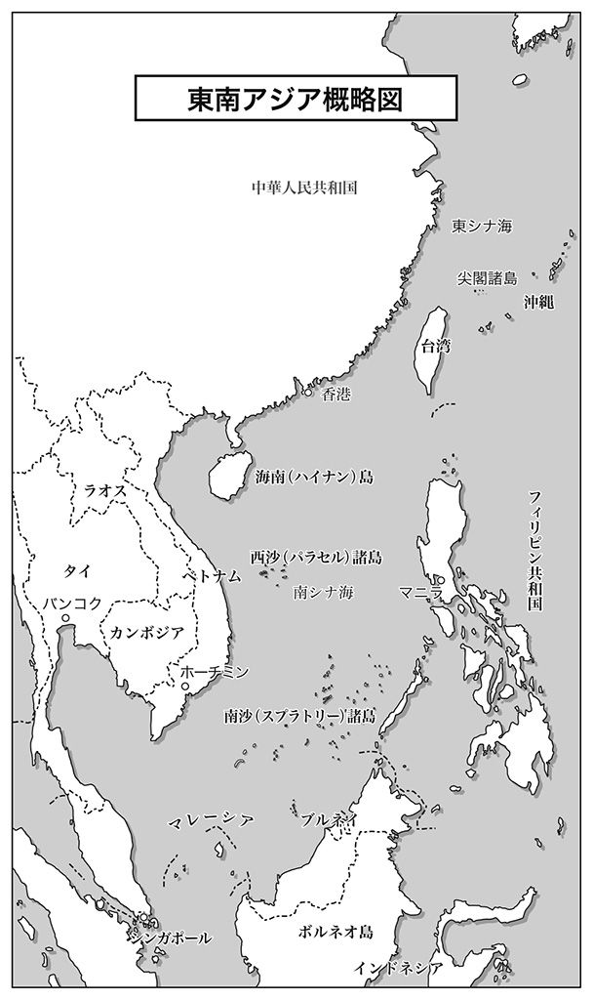

| ＡＳＥＡＮ連合艦隊 南シナ海傭兵艦出撃！ (歴史群像新書) | |
| 高貫布士 | |
| (2013) | |
レイアウト─田村 宏（海月スタジオ）
編集協力──向陽舎
図版制作──サン・ブレイン
この作品のいっさいは架空のものであり、実在の人物、設定などに類似する点があっても、それらはすべてフィクションであることを、あらかじめお断りしておきます。

軍事兵器標記一覧
ＡＯＳ‥ 音響測定艦
ＡＳＤＳ‥ 輸送小型潜水艇
ＡＳＭ‥ 空対艦ミサイル
ＡＷＡＣＳ‥ 早期警戒管制機
ＣＩＣ‥ 戦闘情報中枢
ＣＩＷＳ‥ 自動近接防御火器システム
ＣＧ‥ ミサイル巡洋艦
ＣＶＮ‥ 原子力空母
ＤＥ‥ 護衛駆逐艦
ＤＤ‥ 護衛艦
ＤＤＧ‥ イージス護衛艦
ＤＤＨ‥ ヘリコプター搭載護衛艦
ＥＣＭ‥ 妨害電波装置
ＥＳＭ‥ 擬似電波発射装置
ＥＳＳＭ‥ 短距離対空ミサイル（発展型シー・スパロー）
Ｆ２‥ 航空自衛隊戦闘攻撃機
Ｆ15 Ａ‥ 米国戦闘機
Ｆ15 Ｊ‥ 航空自衛隊戦闘機
ＦＣＳ‥ 射撃管制装置
Ｆ35 ‥ 米国製ステルス戦闘攻撃機
ＦＲ15 ＤＪ‥ 有人偵察機
Ｊ20 ‥ 中国空軍ステルス実験機・成都
Ｊ21 ‥ 中国空軍ステルス機・成都
ＪＨ７‥ 全天候型戦闘機・殲轟
ＪＮＳＣ‥ 国家安全保障会議
ＫＣ767 ‥ 空中給油機
ＬＰＤ‥ ドック型輸送揚陸艦
ＬＨＡ‥ 強襲揚陸艦
ＬＣＡＣ‥ オーバークラフト型揚陸艇
ＬＣＳ‥ 沿岸戦闘艦
ＭＡＤ‥ 磁気探知機
ＭＳＣ‥ 掃海艇
ＰＬＨ‥ ヘリコプター搭載大型巡視船
ＰＬ‥ 大型巡視船
ＰＭ‥ 中型巡視船
ＰＳ‥ 小型巡視船
Ｐ３Ｃ‥ 対潜哨戒機
ＲＯＥ‥ 米海軍交戦規定
ＲＱ４‥ 長距離無人大型偵察機
ＳＡＭ‥ 艦対空ミサイル
ＳＨ60 Ｋ‥ 海上自衛隊哨戒ヘリコプター
ＳＬＢＭ‥ 潜水艦発射弾道弾
ＳＳ‥ 通常型潜水艦
ＳＳＢＮ‥ 戦略弾道弾搭載原子力潜水艦
ＳＳＭ‥ 艦対艦ミサイル
ＳＳＮ‥ 攻撃型原子力潜水艦
ＵＡＶ‥ 無人航空機
ＵＵＶ‥ 無人潜航艇
緊張感の 漲 る艦橋に、船体内のＣＩＣ（戦闘情報中枢）から一報が届く。
「こちらに向けて急速接近中の反応あり。 輝 点 は四個、先ほどの衛星情報から見て、中国艦の可能性大なり......以上です」
艦内電話の受話器を握った兵曹が、大声で報告した。
「ほう、四隻か。五、六隻差し向けてくるかと思ったが、こちらが一隻と見て、安く見積もってきたな」
報告を聞いた 山 口 艦長が、 他 人 事 のような口調で言う。
もっともこの発言が、虚勢を張った 空 元気のように聞こえないところが、この艦長らしい。
「しかし艦長、相手は四隻ですよ。たぶん駆逐艦一隻に、フリゲート（航洋護衛艦）が三隻でしょう。 分 が悪いですよ」
フィリピン人の副長ラモス中佐は、その戦力差を聞いた瞬間から、表情が 強 張 っている。
すると艦長が、周囲に聞こえぬように小声で副長に言う。
「中佐、貴様が 怯 えてどうする。指揮官たる者、常に部下から表情を見られていることを心掛けろ」
この日本人の艦長は、こんな状況下でも周囲に気を配る余裕があるらしい。
「もし数を頼んでくるのならば、もう二、三隻増やしてこないと、わざわざ待っている者としては、食い足りないぞ」
今度は、周囲に聞こえるように声を上げて、艦長が言う。
するとこの言葉が聞こえたのか、艦橋内の重苦しい緊張感が、少し薄れてきた。
「安心しろ。俺にも策はある」
大佐（旧一佐）の階級章を付けた艦長は、前方を双眼鏡で覗きながら、副長に向かって言う。
この言葉に、副長の顔から強張りが消えた。
そして副長も、艦長を真似て双眼鏡を取り上げると、前方を眺めはじめた。
「そうだ、副長。まずいと思ったら双眼鏡で、前方を眺めていろ。前方に神経を集中すると、顔つきも変わって見えるぞ」
そう言われてラモス中佐は、あらためてこの日本海上国防軍の大佐は、以前、 尖 閣 沖海戦に参加していたことを思い出した。
やはり一度でも 修 羅 場 を経験した人間は、気持ちに余裕が生まれるらしい。
すると、副長の心中を見透かしたように艦長が再び口をひらく。
「相手の南海艦隊も、戦闘処女だ。あの連中は、かつてあった海上自衛隊と一戦交えて敗退した東海艦隊ではない。
今まで南海艦隊がおこなってきたのは、単に弱い者いじめの 類 で、生死をかけた戦闘じゃない。
たぶん奴らも、内心では怯えている。だから堂々と胸を張れ。君らには俺がついている」
普段なら、なんとも芝居じみた言いぐさだが、こんなときには、これぐらい 大 仰 に言った方が、部下たちの動揺を抑えることができる。
そんなことを思いついたのは、子供のころに祖父から、駆逐艦乗りに関する話を繰り返し聞かされていたからだ。
帝國海軍の駆逐艦艦長だった山口艦長の祖父は、幾度も修羅場を潜り抜けた海軍軍人だった。
もっとも山口艦長が物心ついたころは、その祖父は相当な高齢であり、見るからに年寄りだった。
しかし孫を膝に乗せて、帝國海軍の思い出話をするときには、表情もいきいきとして、剛胆な海の男に戻っていた。
その老人が、孫に言い聞かせたのが、戦闘時に自分がどのような対応をしたかだ。
「 将 ちゃん、戦闘が間近になると、誰もが艦長の表情を見るようになるもんじゃ。
そんなときには、嘘でもいいから普段以上に冷静に振る舞うんじゃ。ついでに 下 手 な冗談か、芝居がかった 大 袈 裟 な 台詞 を言う」
「なんで、そんな真似をするの？」
「それはなぁ、皆が安心するからじゃ」
当時はなにを言っているのか、幼い子供には理解できなかったが、大人になって判った。
だから先ほど、大袈裟な台詞が頭に浮かび、口から出たのだ。だがその効果は絶大で、先ほどまで動揺していた副長も、今は冷静になった。
ここで動揺さえしなければ、経験豊富な日本人教官の下で、フィリピン海軍の将兵には訓練どおりの働きが期待できる。
それに今回は、このフィリピン海軍のフリゲートが、 日 比 の海軍将兵の手で動いていることを中国側は知らないはずだ。
もちろん中国公船からの報告で、それが日本政府から 貸 与 された軍艦で、日本製の中古ということは容易に察しがつくだろう。
おそらくは、たいていの軍艦が艦橋に据え付けの資料を調べて、そのフリゲートが旧［はつゆき］型護衛艦の一隻だと知っただろう。
そこで［はつゆき］型の性能記載を読んで、一安心したならしめたものだ。
公式の海軍年鑑に記載されている性能とか搭載兵器の記述は、旧海上自衛隊護衛艦隊当時の公開資料を、ただ単に引き写したものだ。
英国の専門出版社は、各国の最新兵器に注目しており、熱心に取材をおこなう。
その反面で、旧式兵器や装備の扱いは素っ気なく、ときには昔の資料や記述を検証することなく再録することも多い。
だから中国側が、既存の資料や記録に頼る限り、このフリゲートが再就役時に大幅な改装や改修をおこなった事実を、まったく知らないはずだ。
これに加えて、財政状態が極めて悪いフィリピン政府は、外国から購入した艦艇を改造する予算が捻出できない。
「向こうが旧式艦一隻を、複数の艦で取り囲んで、なぶり殺しにするつもりできてくれるなら、なおありがたい。こちらの手の内は、ギリギリまで見せたくないからね」
そう言う艦長は、じつに楽しそうだ。実際、艦内では日本人教官団の指示で、戦闘準備が日頃の訓練どおりに進んでいた。
艦内の防水扉は 隔 壁 ごとに閉じられ、被弾や浸水に備えて、工作班が応急修理資材を準備している。
敵との戦力差がある海戦では、あらかじめ被弾することを前提にして、作戦を考える必要がある。
もちろん被害は最小限度に抑えて、敵に甚大な損害を与え、一隻でも多くの敵艦を戦闘不能に追い込むことが重要だ。
ただし複数の敵艦を相手に、単艦で闘う際には、こちらが無傷で勝利を得ることなど、滅多にない話だ。おそらくよほどの幸運か、奇跡でも起きない限り、まずありえない。
となればこちらは、敵艦からの攻撃を回避しつつ、最初の攻撃で敵艦数隻に損傷を与えなければならない。
「まず 戦 の主導権をとれば、二隻ぐらいには手傷を負わせられるだろう。
それから先は、被弾覚悟で敵艦隊の旗艦に攻撃を集中して潰す」
山口は、そんな段取りを考えていた。昔の海戦とは違い、砲撃戦ではなく、対艦ミサイルの撃ち合いから闘いははじまる。
つまり、こちらの対艦ミサイルは確実に敵艦に命中させるが、敵の対艦ミサイルはできるだけ回避しなければならない。
ただ双方がミサイルを発射したあと、距離を縮めて砲戦に入ったときには被弾を覚悟する。
なぜなら、複数の敵艦から発射された砲弾を、全弾回避するのはまず不可能だからだ。
少なくとも、至近弾に続き一、二発の直撃弾を受けるのは想定内のことだ。
それでも対艦ミサイルに比べれば、砲弾が命中した際には致命傷にはならない。
むしろその対応の是非が、あとの状況を大きく変えることになる。
もともと駆逐艦やフリゲートは、巡洋艦や戦艦とは違い、船体に装甲板を備えていない。
だから一発でも船体や艦橋構造物に着弾すれば、その区画は、ほぼ完全に破壊される。
しかも怖いのは、その爆発が原因で艦内火災が起きて、それが各所に延焼することだ。
幸いなことに、苛烈だった太平洋戦争の戦訓から、日米の艦艇は設計に際して徹底した難燃、不燃構造を採用している。
つまり燃えて火災の原因になる素材、たとえば木製部品やビニール素材をほとんど使用していないのだ。したがって艦内に被弾しても、火災は最小限の区画だけで、隣接区画への延焼を食い止めることができる。
そこで応急修理班に要求されるのは、最短時間での戦闘能力の回復と、損傷による放棄区画の限定、そして浸水防止だけである。
そのお陰で日本の護衛艦は、火災が発生しても火災が原因で沈没に至る例は、今のところは報告されていない。
もちろん砲弾やミサイルが命中すれば、被弾箇所によっては、戦闘機能や繰艦機能に大きな影響を受ける可能性はある。
だから被弾により本艦が戦闘能力を喪失しても、浸水で浮力を喪失するまでに、総員退艦を可能にする時間は稼げるはずだ。
その時点で敵艦が被弾して艦内火災を発生していれば、状況としてはこちらが有利になる。
被弾した敵艦は、そのまま戦闘を継続するか、退避して消火に全力をあげるか、その判断を迫られることになるからだ。もし消火を選択すれば、その敵艦は追撃陣からは確実に脱落する。
「問題は最初のミサイル攻撃で、何隻が食えるかだな。複数が被弾すれば、その損傷艦は最初から戦力外になる」
冷静な勝負師として山口艦長は、この間に敵艦群との戦い方を幾とおりものケースに分けて、ＣＩＣで分析させていた。
そして 松 田 戦務長から、ようやく回答が戻ってきた。
「艦長、選択肢は三つですが、そのうちで敵艦群を撃退できるのは一つです。
しかし、これはきわめて確率が低く、本艦の生存確率は一五パーセントしかありません」
戦務長の声から、かなり確率の悪い賭けであることが窺い知れる。
しかし山口 将 門 艦長は、まったく気負いもせずに、即断即決した。
「ならばこれでいこう。運が悪くても、三隻は道連れにできる」
日本の秘策
１
政権に返り咲いた保守党にとって、就任初年度に首相が訪米するのは、政権を失って以来、途絶えていた恒例行事であった。
これを口の悪いコラムニストは、江戸時代に諸大名が、徳川幕府への服従を示すために強いられた慣習に引っ掛けて、〝 保守党政権の 参 勤 交 代 〟 と 揶 揄 していた。
もちろん表向きには、前政権時代に疎遠になっていた日米関係を、早期に修復するとの大義名分がある。
また政権二期目に突入した米大統領には、山積する 内 憂 外 患 の中でも、特に国内経済問題が重要であった。
そのためにも、多国間経済協定に日本を参加させる筋道ができることは大きな前進だ。
しかしこのような問題は、日米首脳が直接会談するよりも、閣僚や官僚たちに任せればすむ課題である。
むしろそれよりも重要な問題が、両国の間には存在していた。
「いまやチャイナの膨張主義は、日本や ＡＳＥＡＮ 諸国だけでなく、環太平洋諸国やインド洋沿岸諸国でも、深刻な脅威として受け止められている」
米大統領は言葉を選んではいるが、明らかに中国指導部が掲げる膨張政策を、深刻な脅威と考えている証拠だ。
「我が国の尖閣諸島以外でも、ＡＳＥＡＮ諸国とは 西 沙 （パラセル）諸島、 南 沙 （スプラトリー）諸島の領有で、大きな問題を抱えています」
阿 部 首相は通訳を介してだが、直接に地名を挙げて、事態の深刻化を強調した。
「それどころかハワイ諸島まで領有権を主張できると、非公式の席で吹聴する始末だ」
オバマ大統領は、呆れたように両手を広げて見せた。
やはり米国政府も、中国共産党指導部の誇大妄想には、正直言って 辟 易 しているのだ。
「おそらく、この状態を放置したら、後世の歴史家に、我々は〝 二一世紀のチェンバレンだ〟 と言われるでしょうね」
阿部首相は一時的な平和のために、ヒトラーの要求に譲歩した英国宰相の名を挙げた。
確かにチェンバレンは、一時は讃えられたが、その後にヒトラーは約束を破ってポーランドへ侵攻し、第二次大戦を引き起こした。
その結果、〝 チェンバレンの譲歩〟 は世紀の愚策として、後世の歴史家から激しい批判に 曝 されている。
するとオバマは、大きく 頷 くと言った。
「数日前の電話会談で、同様のことをロシア大統領からも言われたよ。向こうはウラジオストックを含む沿海州地域を、本来は中国領だと主張されて、相当に腹を立てている」
むろん阿部 真 三 首相も、その話は外務省からの報告書で読んでいる。
もっとも過去の国際条約を、平然と無視する中国政府のお陰で、ロシア政府は日本を味方につける重要性を再認識したらしい。
そのお陰で、ロシア政府は国内保守派の反対を無視して、〝 北方四島帰属問題〟 を日本側と再検討する気になったらしい。
つまり日本を味方にする代償は、北方四島を返還するだけですむのだ。
日本を味方にすれば、中国紅軍は日本海方面からの侵攻が、事実上不可能になる。
その場合、ロシア政府はロ中、ロ朝国境に地上軍を配置して防備を固めればよい。
そして米大統領の言葉から、阿部首相は米国が日本以外に、ロシアも自陣営へ引き入れる腹だと察した。
これは阿部首相が提唱する〝 対中包囲網〟 構想に、合致する政策である。
すでに阿部首相は、一月の東南アジア訪問で〝 対中包囲網〟 に関してＡＳＥＡＮ側の賛同が得られる感触を掴んでいた。
しかも米国政府は、巨額の経済援助を 餌 にミャンマーを、中華経済圏から引き 剥 がすことに成功していた。
ロシアが中国包囲網に加われば、内陸部の中央アジア諸国に圧力をかけて、中国との経済交流を断つことも可能だ。
さらにインド政府も、対中包囲網に大いに興味を持っていることを、日米に伝えてきている。
インドはヒマラヤ地域の国境紛争で、過去に何度も中国と対立している。
そのうえに、インドの隣国パキスタンと中国は、軍事協定や武器輸出で協力関係にあり、これがまたインド政府の神経を 逆 撫 でしている。
したがって日米が手分けをして、中国との摩擦に悩む周辺国を説得すれば、対中包囲網は急速に現実味を帯びてくる。
「実際、 習 近 平 国家主席は山積する国内問題には、いっこうに手をつける気がないようですね。
国内の不満は、対外紛争を引き起こして愛国心を鼓舞すれば、それで収まると思い込んでいるようですな」
首相の分析を聞いて、中国のメディアが〝 右翼政治家〟 と非難するのは、この鋭い直感力を恐れてのことだと大統領は確信した。
この首相は、三代続いた政治家の家系に生まれ、一門には総理大臣経験者が二人もいる。
大統領はＣＩＡの報告書に［父親も外相経験者で、生前は総理候補の一人と言われながら、病没したために総理の椅子には座れなかった......］との記述があったことを思い出した。
浮き沈みの激しい政治の世界で、三代にわたって総理や総理候補を生み出したのは、個人の素養以上に、本人が育った環境だろう。
目の前に座る人物は、素晴らしい知性の持ち主でも、カリスマ的な人物でもない。
どちらかと言えば、育ちの良さは感じるが、平凡な印象の方が強い。
ただ少なくとも、今は野党に転落した前政権の首相たちよりは、状況認識ができている。
前の政権政党は、保守党を攻撃して政権を奪ったが、三代続いた首相のうち二人までは、明らかに失格者だと言えた。
あの元大学教授だった首相は、実家が裕福な資産家でなければ、誰も党首には据えなかっただろう。市民運動家出身の後任者も、それと同じくらい政治センスは 酷 かった。
日本の官僚機構は、誰が首相の座に着いても、さしたる支障を起こさずに政府を運用できる能力を備えていた。
それでも外交問題では、失態続きであり、その後の首相により、ようやく外交と経済が破綻する寸前で踏み止まった。
そんな三人に比べれば、今の首相は凡庸な印象が強いが、少なくとも保守党の政治家としては、やるべきことを着実におこなっている。
それに今回の提案は、中国が誇示する膨張戦略の弱点を、明確に突いたプランであった。
「中国人にとって、プライドを大衆の面前で損なわれるのは、なによりの恥です。
これは個人だけでなく、組織や国家でも同じことで、その恥をすすぐことができなければ、指導者としては致命的なことになります」
阿部の説明を聞いて、オバマはかすかに首を傾げた。
どうも東洋的な〝 恥〟 の概念が、今ひとつ判らないようだ。
「つまり恥をかいた指導者は、黙って引退するか、それとも周囲から引きずり下ろされるか、残された道は二者択一しかありません」
通訳の説明を聞いて、ようやく大統領は深く頷いた。
「ただ、この恥ですが、自国より強い相手や、少なくとも同等の相手と戦って敗北した程度では、それほど深刻ではありません。
その際には、相手が予想以上の強敵であったと、民衆に弁解できるからです。致命的なのは、戦って負けた相手が、明らかに自国よりも格下のときです」
阿部首相は、そう言って微笑んだ。
このときオバマ大統領は、日本の首相がなにか新たな策を考えていると確信した。
なぜなら、もし仮に尖閣諸島を巡って、日中が軍事衝突した結果、中国海空軍が敗れることがあっても、習近平国家主席は失脚をまぬがれると日本の首相は 示 唆 したからだ。
では、習近平が退陣を余儀なくされるほど、致命的なミスを犯したと、国内から見なされるのはなにか......。どうやら阿部首相は、それがなにかを知っているらしい。
ＣＩＡや国務省からの報告でも、習近平指導部は〝 極めて危険な存在〟 だということは、すでに証明されている。
米国の証券金融業界でも、クリントン大統領時代とは異なり、もはや中国が〝 有望な投資先〟 ではないと見なしている。
バブル経済が崩壊寸前で、さまざまな内部矛盾が一度に噴き出しかねない中国は、共産党独裁体制がいつ崩壊しても、不思議ではない。
その点から言えば、日本政府や日本の経済界も積極的に企業進出と投資を進めている先は、中国大陸ではない。
もちろん朝鮮半島でもない。あの半島は、中国が沈めば道連れになる。
むしろＡＳＥＡＮ諸国の方が、発展の可能性が高く、米国に友好的な国も多い。
さらにインド洋沿岸のバングラデシュやインド、スリランカにも、日本企業は生産拠点を移転しつつある。
そのとき、オバマ大統領は日本政府の狙いに気がついた。それはじつに面白い発想であった。どうやら阿部首相は、数年以内に日中間で軍事衝突が起きると、半ば確信しているようだ。
日本政府が回避しようと努力しても、中国共産党の意図で衝突する時期がくると覚悟しているらしい。
もっとも現時点で、その準備に着手しておけば、日本政府と国防軍（尖閣沖海戦を契機に自衛隊を国防軍と改称）はおそらく敗北を回避できると考えていた。
ただこのときに日本が軍事的な勝利を収めても、習近平や中国共産党の威信は揺らぐが、致命傷にはならないと見ていた。
だから二度目の軍事紛争を想定して、今から準備すれば、中国指導部が二回目のミスを犯した際に、それが致命傷になるはずだ。
もちろん阿部首相は、自分の任期中に二度目の衝突が起きる可能性は極めて低いと考えていたようだ。
これは日本政府以上に、中国側の軍備が整っていないからだ。
これは阿部首相一人の意見ではなく、日米の軍事専門家たちも一致した分析であった。
米海軍の空母機動群が持つ潜在的な戦力が、中国紅軍にはトラウマになっている。
だから練習航母（航空母艦）［ 遼 寧 ］が就役した程度では、開戦には踏み切れない。
中古の廃艦を再生した［遼寧］が、戦闘艦としては見かけ倒しであることを承知している。
しかし海軍戦略に無知な庶民は、航空練習艦［遼寧］を、本物の航母だと信じて疑わない。
ただ中国紅色海軍も共産党の中軍委（中央軍事委員会）だけは 欺 くことができないので、本格的な航母二隻が就役すれば、「米空母に対抗できる」と弁明している。
したがって建造中の軽航母二隻が艦隊に就役するまでは、日本に対して 恫 喝 は続けるが、実行に移す気は皆無だろう。
そこらへんの損得勘定に関しては、伝統的に漢民族は冷静に計算ができる連中だ。
逆に航母二隻が揃えば、それまで大言壮語していた人民海軍は、いよいよ中軍委の要求に対して、あと戻りができなくなる。
人民海軍自慢の軽航母は、米海軍の原子力推進空母と比較すれば、到底対抗できるシロモノではない。
それでも本格的な空母を保有しないＡＳＥＡＮ諸国や日本を恫喝するには「これで充分」というところだろう。
だが中国が、二隻の軽航母を揃えるときには、日本国防軍もヘリ空母の［ひゅうが］型二隻に加えて、拡大改良型の改［ひゅうが］型二隻が、相次いで就役している。
この改［ひゅうが］型は必要とあれば、ＭＶ22 オスプレイだけでなく、Ｖ／ＳＴＯＬ機（垂直離着陸機）のＦ35 Ｂ戦闘攻撃機の搭載も可能だ。
もっとも防衛省は、本格空母を当面配備する気はなく、予定もしていない。
むしろ米海軍の強襲揚陸艦にも似た多目的輸送艦を整備することに関心を示している。
多目的型輸送艦なら、普段は揚陸部隊の輸送用として使い、必要に応じてＭＶ22 やＦ35 Ｂを搭載して、限定的だが航空支援ができる。
防衛省としては、正規空母を建造して、その運営維持に人員と予算の多くの費やすことは、効率の良い国防戦略とは言えない。
それよりも限定的な能力しかないが、人も少なく、建造費や維持費も安い艦艇。具体的には、軽空母や多目的輸送艦を整備すれば、国防戦略の要求項目は達成できる。
第一に米国も、日本が中国を 凌 駕 する軍事大国になることを望んではいない。
第二に日本国民も、今の専守防衛戦略で充分満足している。
過度の軍備増強は、国家財政の負担になるだけでなく、米国を含む同盟国も警戒させる。
これは過去に、日本帝國が実行した国家戦略の中でも、最大の過ちであった。
日本は、過度の軍事力への傾斜がなにをもたらすのかを、太平洋戦争の敗北で学習していた。
２
日本がその経済力と比較して、世界からは過小とも評価される防衛力で満足していたのは、憲法上の制約が原因だ。
戦争放棄を表明した憲法第九条は、日本の軍事力復活を恐れた米国占領軍司令部ＧＨＱが、日本政府に強いた制約の一つであった。
その代わりに、日本政府は米国政府との間で、日米安保条約を締結した。
狡 知 に 長 けた官僚たちは、議会の政治家を説得し、軍事費を極限まで削減して、そこで生じた余力を国土と産業復興に投じた。
当時の宰相・ 吉 田 茂 は、「これで破壊された国土と産業を回復し、 疲 弊 した国民が立ち直れば、一〇年後には再軍備ができるだろう」と考えていたようだ。
しかし、朝鮮戦争が発火点になった冷戦の勃発で、米軍の駐留は長引き、在日米軍の存在は恒久化された。
その一方で、在日米軍の役目を引き継ぐために創設された自衛隊も、充分な戦力ではない。
朝鮮特需で復興した産業界は、そのまま保守政権が掲げた経済成長戦略に乗り、日本の経済力は戦前の最高値を越えている。
ただ所得倍増、経済成長戦略の中で、国防問題は置き去りにされた。
それは朝鮮戦争の休戦後も、東南アジア地域では依然として戦争が続いていたからだ。
それでも在日米軍の駐留が長引く間に、自衛隊は段階的に戦力を拡充し、国産装備や新型兵器の導入を進めていた。
防衛庁と自衛隊は、米軍を補完する〝 盾 〟 の役割を担って、装備の更新を続けた。
だが肝心の憲法は、この間も改定されず、自衛隊の法的存在は 曖 昧 なままだった。
ベトナムで共産勢力と戦う米軍と国防総省は、自衛隊が〝 国土防衛組織〟 であることに、この当時は満足していた。
米国防総省と議会が、自衛隊の存在と戦力に注目するのは、ベトナム戦争が終結して以降のことだ。
一九六〇年代に規模の縮小を余儀なくされた米軍を、補完する組織としての自衛隊は、じつに有能な組織であることに気づいた。
そこで自衛隊の装備の近代化と、米軍に準じた装備の導入が本格化するのが、七〇年代から八〇年代にかけての時期だ。
それでもこの時期は、いまだソ連が存続していたから、憲法第九条の修正には手がつけられなかった。噂では米国議会や政府の一部は、日本が憲法を改正して交戦権を有すると、ソ連との国境紛争が起きることをおそれていた。
この当時は、そんな説が 囁 かれていたのだ。
しかしソ連崩壊後、ロシアの国内経済は混乱して、財政が破綻寸前になった。
支配下にあった東欧諸国だけでなく、ソ連邦を構成していた旧ソ連邦下の諸国も、民族主義が勃興し、次々に離反して独立する。
むろん弱体化したロシア政府には、それを抑える力はなく、計画経済を支えてきた国営企業も非効率な経営が表面化して、次々に破綻した。
ロシア政府も、共産党と官僚組織の癒着で汚職と腐敗が横行し、行政機関としては機能しなくなった。
こうなると予算不足で装備の更新ができない赤軍は、急速に戦力が縮小した。
こうして冷戦時代の強敵ソ連邦が、自ら崩壊したことにより、自衛隊の抱えてきた脅威は半減する。
確かに新生ロシア連邦の脅威度は低いが、その代わりの脅威が、一九九〇年代になって新たに台頭してきた。
それがソ連邦の 箍 が外れて、国産核兵器開発に邁進する北朝鮮である。
また反共政策を放棄した韓国政府も、民族主義を高揚するために、対日批判を繰り広げて国内世論を煽りはじめる。
だが日本政府にとって一番厄介な存在だったのは、日本への「歴史的な劣等感」が、トラウマになった朝鮮半島ではない。
それは国内経済の発展と共に、ソ連に代わって新たにアジア地域の覇権を目指し、軍備増強に邁進する中国の台頭であった。
簡単に言えば、独裁者・ 毛 沢 東 の没後に台頭した 鄧 小 平 は、共産党独占の計画経済を破棄して市場経済に移行した。
ただし鄧小平は、共産主義独裁体制を維持したまま、経済だけを自由主義化した。
競争原理が働き、非効率な国営企業は破綻するか、民営化されて外資が導入される。
この結果、中国経済は世界市場と接続して、新たな経済発展が生まれた。
だが政治体制が旧態依然のままなので、次第に共産党への不満が蓄積されて、民主化運動が湧き起こる。
すると鄧小平は、「共産党独裁の廃止」を提案した改革派の 胡 耀 邦 、 趙 紫 陽 を事実上切り捨てて民主化運動を弾圧した。
代わって台頭したのが、保守派の 李 鵬 であり、その影響下にあった 江 沢 民 を、鄧小平は後継者に指名した。
上海閥を率いた江沢民は、自分の支持基盤を紅軍（人民解放軍）と党内保守派に置いた。
民主化運動を葬り去ったあとに、江沢民が選んだのは〝 偏狭な民族主義〟 と〝 愛国主義教育〟 であった。
しかし〝 民族主義〟 と〝 愛国教育〟 を推進するためには、民衆が目に見える〝 仮想敵国〟 の存在が必要であった。
このときに江沢民が選んだ〝 仮想敵国〟 が、強力な〝 米国〟 ではなく、 与 し 易 い〝 日本〟 であった。
なにせ、ソ連崩壊後の美国（米国）は、世界最強の軍事力と経済力をあわせ持つ大国であり、当時の中国が敵に回せる相手はなかった。
それに比べて当時の日本は、バブル経済が崩壊したあとの後遺症に苦しんでいる始末で、経済力でも以前ほどの強さはなかった。
さらにソ連崩壊後の自衛隊は、防衛予算が削減対象になり、装備の近代化は進展していたが、戦力は定数削減もあって減少していた。
それならば弱体化した日本を〝 仮想敵国〟 にした方が、江沢民政権には都合がよかった。
おまけに、日中戦争を持ち出せば、〝 被害者〟 中国へは〝 歴史問題〟 から、日本の世論は表立って反論できなかった。
つまり江沢民は、親中派が主流を占める日本の世論を読んで、〝 歴史問題〟 を盾に対日批判をおこなったわけだ。
こうして江沢民政権は、〝 民主化要求〟 を〝 愛国教育〟 にすり替えることで、共産党の一党独裁を正当化した。
しかもこの政策方針は、成功した〝 世論操作例〟 として、次の 胡 錦 濤 政権にも引き継がれていた。
公安（警察）部と共産党下部組織〝 共産主義青年団〟 に、権力基盤を持つ胡錦濤政権は、チベットやウイグルなどの少数民族問題と人権問題が政治的な弱点であった。
北京閥の胡錦濤は、少数民族の分離独立運動と国内の人権運動を、なんとかして押さえ込む必要があった。
そこで再び利用されたのが、〝 愛国教育〟 であり、日本への〝 歴史認識問題〟 であった。
幸いにも国内経済は好調であり、国内総生産（ＧＤＰ）では、日本を追い越して米国に迫る世界第二位に躍り出る勢いであった。
胡錦濤政権としては、この経済成長をバネにして、国内世論を統制して、米国に追い付き追い越すのが目標であった。
ただこの経済成長の恩恵に 与 るのは、中国共産党幹部と一部の企業経営者で、国民の大半を占める農民と都市労働者は、相変わらず貧困から脱してはいない。
また経済成長から取り残されたのが、内戦時に中国共産党を支えた紅軍だった。
特に紅軍は、膨大な戦力を維持しながら装備の近代化をおこなう余力は、なかった。
胡錦濤としては、紅軍の軍縮をおこなう一方で、装備の近代化を急ぐために、なんらかの根拠と理由を必要とした。
国内の貧困層を放置して経済発展を続け、しかも軍事予算の大幅増額を正当化するには、やはり〝 仮想敵国〟 が必要だった。
特に成長経済を支えるには、国内以外の資源確保が最優先課題である。
そこで選ばれたのが、南シナ海の西沙、南沙諸島、それに複数の環礁と東シナ海の尖閣諸島であった。
国連がまとめた海洋資源調査では、これらの島々の海底や周辺の大陸棚には、有望な海底油田やガス田の存在が指摘されている。
現時点の海底掘削技術では、その大半の開発は困難だが、今後の技術進歩によっては掘削が可能になる。
ならば先手を打って、周辺国から〝 島々を奪ってしまえ〟 というのが中国共産党指導部の狙いだ。
むろん危機を演出すれば、予算の優先順位が低い人民海軍にも、今後は多額の予算が割り当てられる。
なにせ、中近東やアフリカから資源を中国大陸に運ぶ航路は、あまりにも長すぎて、戦時にはこれを維持するのは無理な話だからだ。
その点で、近海の島々や大陸棚であれば、長い航路を守る必要がない。
さらに尖閣諸島の場合は、将来の台湾侵攻を実行する際に、日米の介入を阻止するうえで重要な足場になる。
本音を言えば、尖閣諸島に引き続き、琉球（沖縄）諸島を獲得してしまえば、台湾を孤立無援にする包囲網が完成できる。
あまりにも露骨な膨張戦略だが、対外的な緊張状態を作れば、国内の不平不満を押さえ込むうえで、じつに効果的な手段となる。
胡錦濤政権は、自らが台湾侵攻に乗り出すことは政権期間中には不可能だが、後任の政権と権力者へは託すつもりだった。
そして北京閥を封じ込んで、後継者指名を勝ち取った習近平国家主席は、権力基盤の紅軍のためにも、自分の任期中に実現させる腹だ。
もっとも、今日明日の問題ではないから、準備さえ整えば〝 限定紛争は実現可能である〟 と、紅軍首脳部は中軍委に報告している。
もちろん時期を見る必要はあるが、日本を相手にする限定紛争ならば、数年以内に実現可能との計算が習近平にはあったらしい。
ただしこの計算には、中国共産党の欲望というか、願望や妄想に近い要求が露骨に反映されている。
なぜなら、日本の同盟国米国が、この紛争に関与しないことが最大の条件であった。
むろん米国の参戦を防ぐためには、戦域が 釣 魚 台 諸島（尖閣諸島）と琉球海域（沖縄近海）周辺に限定されることが絶対条件だ。
これを守れば、米軍も手出しができない。さらに理想を言うなら、海兵隊に続いて、米空軍も沖縄本島から撤退していれば紅軍には好都合だ。
米軍施設や米国軍人とその家族が、戦火に巻き込まれて死傷すれば、米国の世論は急激に反中へと変化する危険性があった。
したがって沖縄での反米感情を煽り、米軍撤退を実現するように、左派勢力の〝 反基地運動〟 には今後も支援を継続する。
これに加えて、中国共産党宣伝部が狙っているのは、沖縄県内の不平分子を扇動して、〝 琉球独立運動〟 を激化させることだ。
この運動に、日本政府への不平不満を持つ大衆を一気に巻き込めば、〝 分離独立運動〟 を経て、琉球を中華人民共和国へ併合させることも不可能ではない。
これはチベットや 新 疆 ウイグル自治区でも、すでに試みて成功している手法だ。
独立する際の混乱に乗じて台湾省へ併合してしまえば、あとは紅軍が進駐して不平不満分子を一掃し、琉球は台湾と共に太平洋戦略の 要 となる。
ただし、これは中軍委の委員が非公式な席で言及したことで、現時点では公式に否定されている。
もっともいくら否定しても、米国をはじめとする多くの国では、それが中国共産党の〝 本音〟 だと受け止められている。
特に直接の当事者である日本政府は、この中国政府首脳部の企みに対処するために、さまざまな方策を密かに準備する必要があった。
訪米した阿部首相が、米国大統領府でおこなった秘密会談でも、この〝 中共の野望〟 に関する議題が中心に話されたらしい。
むろん現時点では、日米安保条約が存在するので、中国が日本へ全面戦争をおこなうことは、同時に米国をも相手にすることを意味する。
だから中国の対日戦は、米国が参戦しない国境紛争レベルにとどめるしかなかった。
それなら日本が独力で対処できる国境紛争の範囲内であり、米国政府や大統領は世論を動かして、対中戦争に踏み切ることは難しい。
実際に安保条約では、日本が単独で対処できない脅威には、日本に駐留する米軍が主に対処することになる。
その場合の駐留軍とは、米空軍の太平洋軍と米海軍第７艦隊を主力とする部隊だ。
こうした駐留軍を中心に、太平洋地域に展開する米陸海空軍と海兵隊が、自衛隊と協同で紛争に対応する。
特に米第７艦隊には、一隻でも小国並みの航空戦力を持つ原子力空母と、空母打撃群が配備されているから充分対処できる。
いくら航母を建造しても、中国海軍の保有する空母艦隊に、米空母打撃群に対抗する力がないことは明白だからだ。
もし中国が新造空母だけでなく、第７艦隊の空母打撃群に匹敵する艦隊を作り上げようとしても、簡単には育成できない。
これは中国を 侮 っているのではなく、冷酷な事実である。海上航空戦力の要である空母の運用は、第二次大戦以降も長年の試行錯誤を積み上げて、ようやく得たものなのだ。
よく例に出される蒸気カタパルトなどを製造できる国は、米国しか存在しない。
英国だけでなく、フランスも国産空母を保有しているが、カタパルトは米国に発注している。
今の中国海軍には、米海軍並みの空母打撃群を組み上げるのに必要な経験や能力のすべてが欠けている。
だから外見は真似ることができても、中身を充実させるには、今後一〇年近くにわたり、多額の予算と訓練や研究を積み重ねるしかない。
早く成果を求めたがるのが、中軍委と中国の国内世論であるが、この問題に関しては紅軍総参謀部も打つ手がなかった。
しかし国防総省やＣＩＡの分析では、人民海軍の練度が向上する前に、中国の国内事情で侵攻が早まる可能性が指摘されていた。
つまり国外よりも国内からの圧力に、中国共産党が耐えられなくなったとき、人民海軍は無理を承知で戦争に踏み出すだろう。
その点に関して日本政府の官僚たちは、二期目のオバマ政権の期間中に紛争が起こる可能性は低いと見ている。
国内の重圧に耐えきれなくなった中軍委が、人民海軍の尻を叩いて行動を起こすのは、早くとも次の大統領のころと予測していた。
それまでに、なんらかの形でＡＳＥＡＮ諸国も、軍事力の向上を図る必要があった。
３
「ＡＳＥＡＮ諸国に我が国の退役艦艇を有償供与する話を持ちかけたが、はかばかしい返事がこない。
国防総省の話では、［スプルーアンス］級駆逐艦では大型すぎ、そうかといって［ペリー］級フリゲートでは、性能面で新型の中国軍艦には到底対抗できないらしい......」
そう言って溜息をつくオバマ大統領の表情は、明らかに困っている様子だ。
米国の軍艦は、他国の駆逐艦やフリゲートと比べ、全般的に船体が大きく、維持費や運用経費も高い。
これは長期間の配備を考慮して、設計時から船体容積に余裕を持たせているからだ。
船体に余裕があれば、定期的に改良や改修をおこない、装備の陳腐化を防ぐことができる。
［スプルーアンス］級ＤＤの場合、就役時と退役時とでは、電子装備を含む兵器体系が、改良や改修で驚くほど変わっている。
これは船体設計に余裕があるからだ。だから［スプルーアンス］級の船体を利用して、［キッド］級ミサイル駆逐艦ＤＤＧやイージス・システムを搭載した［タイコンデロガ］級ミサイル巡洋艦ＣＧなどの派生型が誕生した。
満載排水量七八〇〇トンの大型駆逐艦が、イージス・システムとＶＬＳ（格納庫を兼ねた垂直発射装置）を搭載して、満載排水量一万一〇〇トンを超える巡洋艦に発展するのだ。
これは、最初から余裕を考慮した設計でなければ、実現不可能な話だ。空間の余裕を単に無駄とは考えない、米国式の艦艇設計手法の成功作だろう。
ただ［スプルーアンス］級は、米海軍にとっては使い勝手のよい軍艦だが、大きな船体と発展性を持たせた設計は高価でもある。
しかも高出力のガスタービンエンジンを四基も備えた機関区画は、ディーゼルや蒸気タービン機関搭載艦とは出力伝達系統も異なっている。
したがって機関部員も新たに教育訓練をする必要があり、米海軍がサポート体制をとらなければ、普段の整備点検も困難になる。
ほかにも、兵装系統や電子系統の装備も充分な知識がなければ、運用や修理もできない。
その証拠に、同じくガスタービン搭載艦でも、［オリバー・ハザード・ペリー］級のフリーゲートの方は、ガスタービンが二基と半分で、主軸は一軸と簡素化されている。
また兵装や電装系統も、駆逐艦ほど複雑ではなかった。
だから退役した［オリバー・ハザード・ペリー］級フリゲートは、東欧諸国や中東諸国などで各国海軍の主力艦として、今も使われている。
またスペイン、豪州、台湾では、ライセンス生産されて就役している。
自力で軍艦を建造できる国には、この［オリバー・ハザード・ペリー］級フリゲートの性能と価格が、ちょうど要求条件に適合していたのだ。
ただ米海軍が旧式を理由に、艦載対空ミサイルＳＡＭシステムの運用を中止した。そのお陰で、外国に供与される［オリバー・ハザード・ペリー］級からは、目玉のＳＡＭシステムが撤去された。
つまり［スプルーアンス］級のように、改修でＶＬＳを搭載できない［オリバー・ハザード・ペリー］級は、中国海軍艦艇には対抗できない。
その点では、改修や改良を施せば、第一線の戦闘艦として通用する［スプルーアンス］級の方が役に立つのだが、問題は経費である。中小国がこれを購入して自国海軍で運用するには、経費負担が大きすぎた。
また米国海軍は、短期間の慣熟訓練はおこなうが、その先の運用と整備点検は供与先の負担だとして、その後のサポートを拒否している。
軍艦を国内の造船所で自力で建造ができて、点検整備もおこなえる程度に造船産業が整っていないと、運用できない。
だから米国が東南アジア諸国に軍艦の供与を持ちかけても、相手は返事を渋るのだ。
そうかといって、米国には英仏のように第三世界向けの軍艦を建造して、販売する造船企業は残っていなかった。
米国の造船業界は、いまや米海軍からの発注のみに対応する企業しか存在していない。
もちろん航空機産業とは違い、米国の船舶造船業界が国際競争力をほとんど有していないことは、すでに国防総省が認めている。
しかも今の国防総省は、外国輸出向けの水上艦艇を新たに設計開発して建造し販売する気は、まったくなかった。
実際、英国、フランス、ドイツ、それにイタリア、さらにはロシアの造船業界は、米国造船業界が、輸出向け軍艦ビジネスに興味を示さないことに安堵感を覚えていた。
とにかく中東やアジアの兵器市場で、積極的に軍艦のセールスをするのは、ほとんどが欧州勢であった。
それ以外では中国政府も、他の兵器と同様に水上艦艇の輸出にも力を入れていた。
ただし欧州製の水上艦艇と比較すれば、価格が安いぶんだけ粗製乱雑な作りで、引き渡し先では故障も多かった。
ＡＳＥＡＮ諸国では、タイ王国が一時期中国製フリゲートを、その価格に釣られて購入したが、やはり使い物にはならなかった。
このフリゲートは艦隊に短期間就役したのち、練習艦に格下げされている。
その後もタイ王国は、再度中国政府から軍艦の購入を持ちかけられたが、そのときに主機は指定する外国製品を使うことを要求している。
さらに進水後、タイへ回航されて、タイ国内の造船所で艤装が施されて就役している。
つまり中国製だが、中国製の純正部分は船体だけで、主機は欧州製品、兵装や電装系統もすべて欧米企業の製品が搭載されている。
早い話が、少なくとも海軍艦艇に関しては、中国製艦艇の信頼性は低く、故障への対処も不完全であった。
だから「購入しても価格に見合う性能が発揮できない」との情報が、採用国の海軍関係者から洩れ伝わっていた。
まして領海問題で、長年中国と対立するフィリピンやベトナムが、宿敵中国から軍艦を購入するなど、国内世論が許さないだろう。
そうかと言って、現時点での乏しい海軍予算では、高価な欧州製軍艦を購入するのは初めから無理な相談である。
とにかく厳しい財政事情を考慮すれば、贅沢はいえないので、手頃な値段の中古艦艇を探す以外、方法はなかった。
しかし中古艦艇も、昔ほど安くはない。なにせ一昔前とは違い、欧州諸国の海軍は規模を縮小しているので出物は少ない。
特に英国製軍艦は手頃なこともあってか、退役間もない艦艇は南米諸国だけでなく、東欧諸国までもが購入を希望し、引く手 数多 だ。
これまで旧ソ連製軍艦を保有していた東欧国は、更新の際にはロシア製ではなく、もっぱら英米から中古艦を購入している。
それゆえに、今もロシアから艦艇を購入しているのは、インドを含む一握りの国だけだ。
インドの場合は、一番艦や二番艦まではロシアで建造するが、それ以降の同型艦はインド国内でライセンス生産するのが基本方針だ。
つまりインドが外国から艦艇を購入する際の基準は、他国とはかなり異なる。
個艦性能よりも、国内でライセンス生産する際に、容易に建造できるか否かが購入契約の判断基準になっている。
確かに欧米諸国製軍艦に比べれば、ロシア製軍艦は構造が簡単で、ライセンス生産は楽であった。
ただ欧米の設計に比べて、設計に余裕がなく、装備の追加や改造が困難なうえに、損傷時の 被害制御 に弱点があると指摘されている。
ほかにも、納期が契約よりも遅れたり、定期点検時の補修箇所が多いという欠点もある。
それでもインド政府は、設計が単純な旧ソ連／ロシア製軍艦が気に入っているらしい。
もっとも安全基準や搭載兵器の仕様は、ロシア独自の基準に合わせて設計されている。したがって欧米の基準には合致せず、まったく異なる仕様や基準の兵器体系であった。
そこでインドのように、長らく旧ソ連／ロシア製兵器体系を使い慣れている国以外では、いくら価格が安くても簡単には手を出せない。
その点で以前、ソ連から軍事援助を受けて米国と戦ったベトナムは、海軍艦艇の大半を旧ソ連／ロシア製で固めていた。
具体的には、旧ソ連製の［ペチャ］級護衛艦をフリゲートとして五隻保有している。
そのほかにも、［タルタラン］（ソ連名モルニヤ）級沿岸哨戒艇を複数タイプ合わせて九隻、コルベットとして運用していた。
ほかにもミサイル艇や魚雷艇、哨戒艇の大半が旧ソ連／ロシア製であった。
またロシアより［キロ］級哨戒潜水艦を購入、三隻を運用しているほかに、さらに三隻を追加する計画だ。
さらに［ペチャ］級護衛艦の代替えとして、同じくロシアから［ゲパルト］級 沿岸警備艦 を、フリゲートとして二隻購入する契約を、すでに結んでいた。
ただ［ペチャ］級にしても、新鋭の［ゲパルト］級にしても、フリゲートとは称しても、実際には満載排水量一九〇〇トン程度の小型艦だ。
これでは沿岸警備はできても、奪われた西沙諸島の島々を奪回するには、明らかに力不足であった。
こうした外洋での作戦行動をするには、やはり満載排水量が少なくとも三〇〇〇トンを超える本格的なフリゲートが必要だった。
だがベトナム海軍には、過去に大型艦を運用した経験がなく、また財政面でも本格的なフリゲートの購入は困難だった。
もっとも本格的な外洋艦が購入できなくとも、沿岸作戦艦艇や潜水艦を揃えている。その点では、いまだベトナム海軍は「恵まれている」との声もある。
実際、フィリピン海軍は保有艦艇の多くが第二次大戦中から一九五〇年代に就役した老朽艦ばかりだ。
もともとフィリピンには、米軍の軍港と基地があり、領海の防衛は米軍に依存していた。
しかし一九七〇年代にベトナム戦争が終結し、米海軍は東南アジア方面での活動を大幅に縮小した。
さらに腐敗したマルコス政権の崩壊後、歴代の政権は安定せず、南部では共産ゲリラやイスラム過激派が勢力を拡大していたために国防予算の大半は、治安維持任務の陸軍や警察軍へ回された。その結果、海軍や空軍の予算は削減されて、装備の更新は絶望的になった。
それでも米軍が駐留している間は、中国側も用心して手出しをしなかった。
だがルソン島の火山噴火で、スービック・ベイの米海軍基地が閉鎖され、米海軍はフィリピン海域から去った。
こうして在比米軍が撤退したあとには、空海軍が弱体化したフィリピンだけが残されることになる。
一九九〇年代のフィリピン海軍は、米国から供与された艦艇が老朽化で次々に除籍になったのに、艦艇の補充がまったくできなかった。
現在、フィリピン海軍が保有しているのは、フリゲート二隻とコルベット（沿岸護衛艦）一二隻が主力である。
ただしこのフリゲートは、米国沿岸警備隊が保有していた航洋カッター（大型巡視船）を購入したものである。
当然、本格的な軍艦に比べれば、船体構造も商船規格に近く、兵装も貧弱だ。
またコルベットと称しているのは、英国海軍が香港警備用に建造した沿岸砲艦だ。
それも香港の中国返還に伴い、余剰となったところをフィリピンが安値で購入したものだ。
まさに南シナ海での覇権を狙う中国には、海空軍が衰退して、無防備同然の状態で領海が放置されているフィリピンは、絶好の 餌 食 でしかなかった。
最初は、悪天候に遭遇した中国の漁民と漁船が、一時避難する施設を設けるとの名目で、岩礁に小規模な施設が建設された。
このミスチーフ礁はフィリピン領内の岩礁であり、フィリピン政府は撤去を求めた。
しかし紅軍は、この要求を無視して資材と物資を送り込んで、日々施設を拡大した。
もはや当初の小規模な避難所ではなく、艦隊の行動を支援して、洋上監視ができる軍事施設なのは一目瞭然だった。
しかも施設の屋上にはヘリポートが設けられ、艦艇が接舷できる桟橋も完成していた。
そして施設の端には国旗掲揚台が設けられて、そこには五星紅旗が掲げられ、中華人民共和国の領土であることを主張していた。
もちろんミスチーフ礁を不法占拠され、紅軍警備隊が配備された状況に、フィリピン政府は何度も北京に向けて抗議をした。
だが北京の外交部（省）と共産党政治局は、弱小国の抗議など一切無視した。
「そこでようやくフィリピン政府は、領海を守る海軍力が、すでに朽ちていたことを実感したのだ。自覚したのが遅すぎたんだ」
大統領は冷静な口調で言い放った。むろん大統領が言いたいのは、ＡＳＥＡＮ諸国の実例が物語る現実だ。
つまり、自力で領海や領土を守る気概を示さなければ、米国政府はあっさり切り捨てる。
だから一歩間違えれば、今のフィリピンが追い込まれている状況は、明日の日本かもしれないのだ。
そして米国大統領は阿部首相との会談で、中国との間で、たとえ限定紛争であっても、戦う気構えがあるかを問うていた。
これに対して阿部首相は、極力冷静な口調で答えた。
「我が国は、尖閣諸島が自国領であると確信し、どの国に対してもこれを主張します」
するとそのとき、阿部首相に随行していた 佐 藤 議員が、そっと耳打ちをした。
前歴が元陸上自衛隊の一等陸佐（大佐）だった佐藤議員は、訪米直前に 石 場 幹事長から、策を授けられていたのだ。
阿部は無言で頷くと、さらにこう発言した。
「我々日本政府は、自国の領土を守るだけでなく、中国の膨張政策に脅威を感じている国々に、援助をおこなう用意があります」
この発言に、今度は大統領が興味を示した。
「貴国の憲法では、国外での軍事力の行使が厳しく制限されているはずだが......」
「そのとおり、憲法第九条によって厳しい制限があります。
また武器輸出三原則により、我が国の兵器を外国へ売却する行為にも厳しい制限があります」
そう阿部首相は答えた。
この説明を聞いて、大統領は厳しい表情になる。首相の発言が理解できないからだ。
「大統領閣下、先ほど貴方は、合州国海軍の退役艦艇を供与しようにも、フィリピンに受け入れ能力がないことを、嘆いておられましたね。
ならば我が国が、フィリピン海軍の再建に助力するのはどうでしょう。
当面は将兵の教育訓練に教育顧問団を派遣して、必要な艦艇と航空機、それに資材を教育用として貸与してはいかがかと思うのですが、貴国の専門家の意見を伺いたい」
阿部首相の発言が終わるのを待っていたかのように、隣に座る佐藤議員が、一通の書類とリストを大統領に差し出した。
その英文の書類とリストを、ざっと見た途端に大統領の表情が変わった。
そして大統領から、この書類を渡されて同様に目を通した国務長官の表情も、やはり変わっていた。
「これは退役、あるいは練習艦籍にある護衛艦と潜水艦、それから間もなく国防軍から退役する予定の艦艇リストです。
このほかに対潜ヘリや哨戒機を、日本政府は練習教育資材として、貸与する準備があります。これは売却ではなく、あくまでも貸与です」
阿部首相の説明を聞いて、大統領と国務長官は驚くと同時に、愉快そうな表情に変わる。
「確かに、これは軍事援助と言うよりも、経済協力の一種ですな。
艦艇や航空機を売却するのではなく、レンタルするのですから、兵器輸出ではない。
新鋭艦ではないが、充分な整備をおこない相応の装備を追加してあれば、外国軍艦の恫喝にも屈することはない」
ケリー国務長官は感心したような口調だ。
「確かにそれならば、貴国の憲法や武器輸出三原則にも抵触する可能性は低い。
しかも退役艦艇であっても、完全武装した練習艦なら中国海軍艦艇に充分対抗できる。
また有能な教官団に率いられたフィリピン海軍将兵は、その指導の成果を隣国海軍にも見せつけることができるわけだ。じつに興味深い。狡知に長けた発想だな」
大統領の顔に笑みが浮かぶ。それにしても日本の政治家と官僚たちは、法律の抜け穴を見つけ出して、それを巧みにかい潜る術を身につけている。
これが合州国の政治家や官僚ならば、法律の解釈を論ずる前に、まず連邦議会に対して法律の改正を働きかけるだろう。
だがその場合、中国政府に雇われた凄腕のロビイストが、議会の廊下で暗躍する。
おそらくその場合には、法律改正案を潰すか、骨抜きにする修正条項を挿入しようと議会工作を仕掛けるだろう。
つまり不毛な駆け引きに時間を取られ、フィリピン海軍育成に必要な時間が削られる。
しかし日本政府は、国会での駆け引きに走る前に、法律の抜け穴を見つけ出して、 粛 々 と準備を進める。
この方法ならば、中国側が気づいて阻止に動く前に、日比両国政府の間で大枠は決まり、計画は動き出すはずだ。
むろん大統領も、この計画には大いに乗り気であることを伝えた。
「合州国政府としては、この日本政府の提案にはなんの異存もないし、求められれば最大の協力を惜しまない」
計画の内容を見て、満足そうな表情でオバマ大統領は確約した。
すると佐藤議員は、すかさず米国に援助を要請した。
「ご存じでしょうが、我が国の財務省は査定が厳しく、護衛艦に搭載するミサイルや魚雷、さらには砲弾を含む弾薬類の備蓄は、いつもギリギリの水準です。
そこでよろしければ、貸与艦艇に搭載する各種ミサイルや魚雷、それに砲弾等の弾薬類を米軍の在庫から支給していただきたい」
これを聞いて、大統領と国務長官は愉快そうに笑うと、支援を快諾している。
この反応を見て、内心で胸を撫で下ろしたのは、阿部首相よりも佐藤議員の方だ。
名目上、護衛艦艇を〝 練習艦〟 として貸与するので、燃料や機関部の交換部品は防衛省の予算枠内で処理できる。
しかし武器弾薬の類は、国防軍部内ですら訓練時の消耗分は厳しく査定され、備蓄分の確保も難しいのが現実だ。
国防軍内で読まれた「たまに撃つ、弾がないのが、玉に 瑕 」との川柳ではないが、有事を想定した国防軍内の備蓄は情けないほど少ない。
特に弾薬の消耗補充に関しては、財務省の査定は〝 非情〟 と表現するしかないほど厳しかった。
特にミサイルなどの誘導兵器類は、調達補充予算が真っ先に削られることもあって、訓練でも滅多に発射することはない。
実物を発射するのは、年にほんの数回で、それこそ品質検査を兼ねて、演習時に発射する程度にとどめている。
普段の訓練や教育は、すべてが訓練装置を使った擬似発射を体験させるだけで終わる。
だから貸与艦艇に積み込むミサイルや魚雷、弾薬の類の確保は、最初から無理だった。
会談の最中にこの事情を察したのか、同席した軍人のトップである統合参謀本部議長が、大統領になにやらメモを渡した。
「ただし、合州国海軍が艦艇に積み込んでいる規格のものしか、供給はできませんよ」
事態を把握した大統領は、笑みを浮かべて言う。
じつは、この発言を引き出すことを石場幹事長は密かに期待しており、これが訪米前に佐藤議員へ 授 けた秘策であった。
米軍の場合、定期的に国際紛争に参加して、陸空軍と海兵隊は陸戦や地上戦闘をおこない、適度に弾薬やミサイル類を発射する。
また頻繁に演習をおこなうが、その際には海軍も標的艦や標的機に向けて、砲弾やミサイル、魚雷を盛大に撃ち込む。
こうした消費活動のお陰で、米軍の備蓄弾薬やミサイルは、演習では使えない核弾頭と化学弾頭を除き、定期的に補充をおこなっている。
特に合州国海軍は、装備更新のためにも、弾薬やミサイル類を消費する機会を常に狙っていた。
たとえば、湾岸戦争では一時保管艦扱いだった戦艦を急遽、現役復帰させて、太平洋経由でペルシャ湾へ送り込んでいる。
これは上陸作戦の際に、第二次大戦を 彷 彿 とさせる艦砲射撃を実施するためだ。
そのときに戦艦の主砲から、大量に発射された四〇センチ砲弾は、一九四四年製造であった。
噂によると、間もなく砲弾の炸薬と装薬の品質保証期限が過ぎ、廃棄処分するしかないので、在庫一掃のために投入したらしい。
こうした例は、ほかにも見られる。たとえば湾岸戦争とイラク戦争で米海軍艦艇が発射した艦載巡航ミサイルは、その大半が初期に製造されたものだった。
つまり最新の誘導装置を搭載した巡航ミサイルの改良型は、すでに完成していた。
あとは、これを企業に発注して生産するだけだが、問題が一つあった。
それは、現時点で艦隊に配備されている初期バージョンが残っていることを理由に、財務省が新規調達に難色を示したことだ。
そこで初期型を中東の戦場で使い尽くして、海軍の在庫を一掃する必要があった。
だからこの二つの戦争で、合州国海軍と空軍は、あえて戦術巡航ミサイルの大盤振る舞いをして、在庫の減少を図った。
そして予定どおり、戦場で大量の巡航ミサイルを消費し、その〝 補充〟 を翌年の国防予算に盛り込ませることに成功した。
これは他国に売却しない巡航ミサイルだから、このような方法で消耗させたのだ。
それに比べて、陸海軍が装備する各種対空ミサイルは、同盟国への輸出も可能だ。
そこで装備を売却する際には、同時に在庫のミサイルも売り込んでいる。
こうした理由から、米軍の在庫兵器は、比較的生産時期が新しいものが多かった。
したがって退役した海上国防軍の護衛艦に搭載されている各種ミサイルと、その発射装置の部品にすでに在庫がない場合もあった。
つまり米国では旧式を理由に、すでに制式装備の登録を解かれて、生産が中止されているものもあったのだ。
そのため日本側は、ＡＳＥＡＮ諸国へ引き渡す前に、ミサイル装備を中心に支給される米軍規格に適合した改修を施す必要がある。
この改修は発射装置だけでなく、誘導装置を含む電子装備全般に及ぶ。
そのうえ海上国防軍や米海軍艦艇とも、洋上で随時連携が取れる情報リンクを追加装備することが不可欠だ。
ただし、一度〝 退役扱い〟 にした艦艇に、そのような改修をおこなうことは、予算項目上からも財務省の承認を得るのは難しい。
そこで石場幹事長と 小 野 寺 防衛相は、首相訪米前に何度も密談を重ねて出た結論は、ミサイルや弾薬の提供を米国政府に仰ぎ、その際には米海軍規格に準じた電子兵装に改修を依頼することだ。
もちろんこの部分は、米国へ全面的に 委 ねるほかに手はないので、日本政府は表向き関与しないことになる。
これは、欧米で言われる「古い革袋に新しいワイン」というわけだ。
こうした改修、改良工事は、米国の裁量内でおこなわれるので、日本政府は〝 一切関知〟 していない。
貸与艦の情報が、もしも中国側に漏れても、旧海自護衛艦当時のデーターにすぎない。
しかもこの事実は、米軍関係者と、貸与艦と共にＡＳＥＡＮ諸国へ派遣される教官団にしか伝えられていない機密事項だ。
それゆえに、日本の造船所ではなく、在日米軍横須賀海軍 工 廠 で改修工事の一切をおこなうことになった。
除籍処分を受けた退役艦は、各地の基地から横須賀基地に順次回航される。
そして改修工事が施されるまで、海上国防軍横須賀方面総監部の管理下に置かれる。
これなら貸与艦は、ほとんど人目を引くこともなく、隣接する在日米軍横須賀基地エリアへ移動できる。
その後は米海軍工廠のドック内で、点検整備と改修、一連の修理作業がおこなわれて、再び戦闘艦として 蘇 ることになる。
一連の改修工事を終えた貸与艦は、工事が完了した時点で兵装も完備している。
つまり米軍規格の対艦ミサイル、対空ミサイル、各種電子装備に砲弾や銃弾が積み込まれる。
工事後の艦影は、アンテナや発射装置の細部に違いが見られるだけなので、専門家でもよほど注意深く観察しないと識別はできない。
しかも貸与艦は、工事終了後は在日米軍横須賀海軍工廠から、隣接する海上国防軍横須賀方面総監部に停泊場所を移動する。
もちろん搭載するミサイル兵器や電子装備に関しては、日本側の派遣教官団も事前に、米軍施設で研修を受けている。
この時点で貸与先のＡＳＥＡＮ諸国からは、貸与艦を受領するために、乗員たちが横須賀へ集まっている。
この貸与艦を受領する回航要員は、母国の海軍で選抜された者たちで、貸与艦の準備が終わる一年前に来日することになっていた。
そしてこの間は、海上国防軍の各術科学校や練習隊で、防衛官に混じって教習を受ける。
これらの事前教育を受けるために派遣された乗員の大半は貸与艦の受け入れ国では、新設艦隊の基幹要員となる人材となる。
日米両政府が合意した計画では、このように日本で教育訓練を受けて、貸与艦に乗り込む乗員には重大な使命があった。
つまり将来発足するであろうＡＳＥＡＮ連合艦隊で、中核を構成する乗員なのだ。
そこで帰国後は、日本の教官団の補佐役として、次の世代の乗員を教育する。
このようにして育った人材が、改造艦に配備されて、中国の脅威に対抗する。
ＡＳＥＡＮ諸国は、単独で中国に対抗するのは難しいが、日米の 梃 子 入れで、ＮＡＴＯ軍の東南アジア版を創設すれば、海軍力だけでなく、陸空軍でも中国に対抗できる。
もちろんそれだけでは、中国の侵略に長期間にわたっては対抗できない。
そこで日米にインドが、有事には艦隊を派遣して加われば、中国の軍事力でも対抗できなくなる。
それでもなお中国政府が東南アジアへの侵略を継続すれば、今度は日米印の三カ国が、対中包囲網の矢面に出てくることになる。
ただし計算高い中国政府が、ここで無理をすることは考えられないので、東南アジアにおける膨張政策を一旦は引っ込めるはずだ。
引っ込めなければ、ＡＳＥＡＮ連合艦隊との間で限定的な紛争は回避できないだろう。
この紛争で、もし南海艦隊が敗退すれば、ＡＳＥＡＮ諸国の士気は上がり、団結力が高まるはずだ。
逆に中国政府と紅軍は体面を潰される。
むろんこの程度の敗北では、中国共産党政権が長年の野望である膨張政策を断念するはずはない。
これを諦めさせるのは、中国共産党政権が崩壊でもしない限りは、まずありえない話だろう。
だが日米の経済援助と投資で、東南アジアは今後一〇年ほどで急速な経済発展を遂げるのは、まず間違いない。
そうなればＡＳＥＡＮ諸国は、自力で中国の膨張政策に対抗できる軍備を持つことが可能になる。
４
阿部首相の提案を、オバマ大統領が受け入れた背景には、やはり米国の国内状況の変化が存在した。
対中貿易での赤字の増加に加えて、米国を目指す中国系移民の中には、中国マフィアや共産党幹部の子弟が多く含まれている。
このことが、ＦＢＩや財務省の注意を引いて米国内での調査がはじまり、さまざまな疑惑が表面化した。
巨額な外資が動く買収には、違法行為に関係していると指摘された事例もあった。
具体的には、二〇〇〇年以降に顕著になったことだが、中国系移民や在米中国人による企業や不動産の買収がある。
財務省の調査では、これらの中国系外資は、正規の投資ルートとは明らかに異なっていた。
財務省とＦＢＩの秘密報告書が大統領府と議会に提出されると、米国政府の危機感は強まった。
中国共産党は秘密資金で、密かに〝 合州国の土地と資産〟 を買い漁っている。
個人や企業の投資は、米国経済を活性化するのに役立つが、外国政府が組織的に土地や企業を買収するなら話は違う。
「中国共産党が資金力に物を言わせて、合州国を乗っ取るつもりでは......」
そうした認識が議会内に生まれたからだ。
この結果、米国政府と連邦議会は〝 中国共産党政権〟 を、これまでのイランや北朝鮮以上に〝 仮想敵国の最有力候補〟 と意識した。
これは一〇年前のクリントン政権とは、真逆の状態である。
一九九〇年代から二〇〇〇年代初頭にかけて、改革開放経済を歩む中国は、米国の投資家たちには有望な市場であった。
バブル経済が崩壊後、経済が失速しつつある日本と比べて、中国は発展の最中にあった。
だから日米よりも米中間の友好が優先され、多額の外資が中国市場に流れ込んだ。
こうして中国経済の発展は一気に加速して、沿岸部を中心に好景気に沸いた。
中国の人件費の安さに釣られて、日本企業の多くが中国への工場進出を決めたのも、ちょうどこの時期である。
経済力の上昇と外国企業の進出で求人が増加し、また経営不振だった国営企業の多くは、この時期に民営化されている。
企業の発展と人手不足は、農業中心の地方から多数の労働力を都市部に集めた。
一方、経済力が伸びて、市民の生活水準が上がっても、政治の民主化を断固拒否する中国共産党が一党独裁を維持していた。
湧き上がる民主化運動は、共産党の手で次々に潰され、共産党の絶対支配体制に異を唱える者は投獄された。
それでも民主化運動に危機感を感じた江沢民政権は、教育方針を民族意識の高揚を狙う〝 愛国主義〟 へと急旋回させる。
江沢民の提唱した〝 漢族重視の民族教育〟 が、チベットや新疆ウイグル自治区では少数民族の反発を呼び、地域紛争が続発する。
ただこの事態には、江沢民に代わり国家主席を継承した胡錦濤も、公安（警察）や紅軍を動員して、徹底的な弾圧を繰り返した。
国内経済は発展して先進国の地位に達していたが、政治体制は相変わらずの一党独裁で、旧態依然たる体制の維持に 汲 々 としていた。
それが二一世紀を迎えた中で、この国を支配する中国共産党の実態であり、国内の至るところで矛盾が生じていた。
しかもここで生じる矛盾に対しては、中国共産党は一切目を 瞑 り、ただひたすらに経済的な繁栄だけを追い続けた。
じつはこの過程で、権力集中型の共産党政治体制は富の偏在と官僚の腐敗を生んでいた。
その中でも、共産党高級幹部の子弟らの〝 太 子 党 〟 が、習近平政権内で権力を握ると、党幹部の官僚の腐敗は一層深刻化した。
香港や国外のメディアは、この太子党を〝 紅色貴族〟 と批判したが、北京の中央政府は批判を黙殺している。
なぜなら、国家主席の習近平自身が太子党の一人であり、彼の権力基盤でもあった。
この太子党に対抗するのは、共産党若手エリート集団の共産主義青年団（共青団）だ。
優秀な若手共産党員の中から、さらに選抜されたメンバーで組織されたのが共青団だ。
それだけに共青団は、親や兄弟の縁故で利権を貪る太子党には、常に批判的であった。
ただその共青団にしても、その権力基盤は共産党が支配する官僚組織だった。
太子党と共青団は互いに反目しながらも、中国共産党の後ろ盾があって、初めて権力を握れるわけだ。
したがって反目はしていても、中国共産党の独裁体制維持には完全に意見の一致を見ていた。
国内では権力闘争で激突していても、国外に対しては平気で手を結ぶのが太子党と共青団であった。
この事実を、ようやく把握した米国のオバマ政権は、太子党と共青団を共に葬り去らなければ、中国の民主化は不可能だと理解した。
とにかく共産党が支配する中国では、民主化などの自浄作用は、まったく期待できない。
したがって国務省は、オバマ第二期政権の最初に、「二一世紀は太平洋の時代、アジアとアメリカの時代」のスローガンを掲げた。
これを受けて日本政府は「米国のアジア重視の戦略に変化はなかった。これは喜ばしい」とコメントした。
しかし、このスローガンの裏に隠された米国政府の本音を知れば、能天気に協力するばかりではいられなかった。
つまり米国は、環太平洋地域の広域経済圏を自ら仕切るつもりであり、これに手を突っ込もうとする 輩 は、断固排除する決意なのだ。
実際、日本政府にＴＰＰ（環太平洋戦略的経済連携協定）への参加を迫るのも、環太平洋を仕切るのは「米国以外にあり得ない」との意思表示にほかならない。
だが、日本の場合、軍事面では日米安全保障条約があるから、経済面での連携協定の締結は、なりゆき上当然である。
さらに米国産業界にとっても、日本と台湾は米国経済を支える補完関係にある。
しかし中国の場合は、日本や台湾とはまったく異なり、経済と軍事の両面で米国の安全を脅かす存在である。
だが最初から米中が衝突するのは、全面戦争に発展する危険もあるので、得策とは言えない。
まずは包囲網を敷いて、徐々に中国を周辺から締め上げて孤立無援の状態に追い込み、徐々に経済から破綻に追い込む。
そのうえで最終的には、北京に対して屈服か開戦かを迫る腹だ。
むろん開戦に至っても、米国は中国の勝手にはさせない算段をすでに準備していた。
そこへ今回、タイミングよく阿部首相が持ち込んだのが、ＡＳＥＡＮ連合艦隊の創設と、退役艦の貸与計画であった。
じつは、国防総省もＡＳＥＡＮ諸国への梃子入れをはじめていた。
その一つが、シンガポールに米海軍の寄港地を確保して、ここに小規模ながら分遣隊を常駐させる計画に着手していたことだ。
この計画では、米海軍は最新鋭のＬＣＳ（沿岸戦闘艦）を数隻配置して、東南アジア海域を巡航しながら警戒に当たる。
ＬＣＳはコルベットに分類される哨戒艦で、満載排水量は三一〇〇トン台である。
ただ排水量の割に固有兵装は少ないが、任務に応じて追加装備を搭載できるのが一つの売りになっている。
つまり対水上艦戦、対潜水艦戦、機雷戦等の個別の任務によって後部甲板に装備品を搭載するのだ。
これならば本艦以外に、対潜哨戒フリゲートや掃海艇を追加配備する必要はない。
しかも米海軍は、このＬＣＳの運用に関しては、新たな試みをおこなう予定だった。
それは一隻のＬＣＳに複数のチームを交代で乗艦させて、個艦の行動日数を大幅に増やす計画であった。
大型艦とは違って小型艦艇は、居住設備や食糧貯蔵庫などの設備が、どうしても限定される。
さらにＬＣＳでは、自動化を大幅に進めたことで、乗員は大幅に減って四五名となった。
民間船舶や漁船とは違い、戦闘艦艇は多くの人手を必要とする。
ＬＣＳのように満載排水量三〇〇〇トン台だと、平均しても一〇〇名前後の乗員を必要とする艦が多い。
それを半数以下の乗員で運用するのだから、乗員一人当たりの作業量は格段に増える。
そこで乗員の疲労度を計算して、一チーム当たりの航海日数を減らす。
その一方で、個艦の稼働率を大幅に引き上げるために別の方式を採用した。
これが複数の乗員チームを用意して、頻繁に交代させることで、航海日数を大幅に増やせる。
この乗艦スタイルは、ＳＬＢＭ（潜水艦発射弾道弾）を搭載して海中に潜むＳＳＢＮ（戦略弾道弾搭載原子力潜水艦）では、すでに実施している方式だ。
ＳＳＢＮの場合、港にとどまる日数を最小限度にして、洋上でミサイル発射命令を待ちながら、長く待機するのが任務だ。
しかし潜水艦の特有の閉鎖空間では乗員にストレスが溜まることもあり、七〇日から最大でも九〇日程度で一度帰港する。
そして、一カ月程度の点検整備と補給をおこない再び出港するのだが、このときには待機していた別のチームが乗艦して出撃する。
米海軍は、このようにＳＳＢＮに関しては、ゴールドとブルーの二組のチームを編成して、交代で勤務させる方式を採用してきた。
これならば長期間にわたる外洋での待機任務も、定期的に交代することで士気を維持できる。
交代して上陸したチームは一定期間の休養のあと、官舎や自宅から基地へ通い、訓練や新しい技術教育を受けてすごす。
ともかく休養と陸上勤務、そして洋上勤務とを組み合わせることで、乗艦中は高い練度と士気を保てることになる。
むろんＬＣＳでは、ＳＳＢＮのように七〇日間もの洋上待機は、あまりおこなわれないだろう。ただそれでも複数の同型艦を、こうしたサイクルで運航すれば、少なくとも常時一隻は外洋で哨戒任務を継続できる。
ＬＣＳ部隊の拠点をシンガポールに置くのは、ここが海上交通の要衝マラッカ海峡に近いこともある。
だがそれ以上にシンガポールは、インド洋と南シナ海の両方の接点で洋上哨戒をおこなうには、最良のポイントに位置している。
もちろん中国艦船の動向も、ここなら判る。
米海軍の狙いは、この海域で哨戒行動を続けることで中国海軍の行動を牽制することだ。
さらに米国は、中国海軍が有事に実施する作戦を想定して、ここにＬＣＳを配置したと思われる節がある。
意外に思われるかもしれないが、インド洋と太平洋海域を結ぶ上で、マラッカ海峡は重要な役目を果たしている。
特に中近東から東アジア諸国へ石油を運ぶ大型タンカーにとっては、航路上の要衝がマラッカ海峡を含むこの一帯だ。
もしこの海域が機雷などで封鎖されると、石油輸送のルートは大打撃を受ける。
そこで環太平洋諸国では有数の掃海艇部隊を擁する日本の海上国防軍が参加して、ＡＳＥＡＮ諸国と米海軍とが掃海訓練を兼ねた演習を定期的におこなっている。
これは明らかに、マラッカ海峡を含めた海上交通路を〝 仮想敵国〟 による機雷封鎖から阻止するための演習である。
むろん自国産原油だけでは国内需要を満たせない中国も、この中東からのオイル・ルートを利用している。
だがそれでも米国は、有事にこの〝 仮想敵国〟 が機雷封鎖に踏み切らないとの保障は、まったくないと考えている。
だから必要に応じて、機雷掃討具や掃海ヘリを搭載できるＬＣＳをシンガポールに配備するわけだ。
機雷掃海艦艇の多くは、友軍が海上優勢を確保した海域で、機雷掃討作業に従事することを前提に設計されている。
搭載している機関銃や機関砲も、自衛用と言うよりは、海上に姿を現した浮遊機雷を銃撃で爆破することが主目的である。
したがって敵の抵抗を排除しながら、機雷掃討作業を継続する能力はない。
その点でＬＣＳは、艦砲以外にも近接防空ミサイルや機関砲、また必要に応じて対艦ミサイルもランチャーごと搭載できる。
つまり〝 仮想敵国〟 の艦艇による機雷敷設作業を排除しつつ、機雷掃討作業を実施することまで想定している。
船体の大きな［アレイ・バーク］級駆逐艦では、いくら戦闘能力が高くとも近海や沿岸海域では使いづらい。
特に沿岸部の浅瀬や岩礁が多い海峡周辺では、その大きさが邪魔になって動きが制約される。
だから大型軍艦よりも、適度なサイズの小型艦の方が動きやすいとの判断があった。
もっとも小型艦に分類されても、ＬＣＳの満載排水量は三一〇〇トン、全長一二〇メートル前後で結構な大きさがある。
これに対してミサイル艇は、排水量五〇〇トン台が主流だし、中小国が保有するコルベットも満載排水量で二〇〇〇トン前後の大きさが圧倒的に多い。
これは中国海軍が、ミサイル哨戒艇や［ 江 滬 ］級（053 型）フリゲートの後継として、鋭意整備を進めている満載排水量一三〇〇トンの056 型コルベットを充分に圧倒できる。
なお日本政府が、ＡＳＥＡＮ諸国へ貸与を決めた［はつゆき］型護衛艦は、全長一三〇メートルで満載排水量は四〇〇〇トン台だから、ＬＣＳよりはやや大型だ。
したがって海峡海域で警備や警戒に従事する戦闘艦は、最大でも満載排水量五〇〇〇トン以下でないと、意外に行動には制約がともなう。
海峡近辺の海域が大型軍艦、特に空母の運用に適さないのは、まさに地理上の制約が大きく影響していた。
おそらく地形上の制約を無視して大型艦を多数送り込んでも、この海域では邪魔になるのが関の山だ。
貸与艦出航
１
出航作業は、じつに素早くおこなわれていた。艦首付近の露天甲板でテキパキと作業する乗員の動きを見ても、周囲の護衛艦の水兵と大差がない。
ただ作業を指示する海曹が、時折口にする号令が、日本語ではなく英語であることから、甲板員の大半が日本人でないことが判る。
この乗員たちは、その大半が一年半ほど前に、母国から日本へ派遣されてきた。
そして一年間は、各術科学校や練習隊で新人防衛官に混じって、もっぱら海上勤務に必要な教育訓練を重点的に受けてきた。
その後、半年ほどはこの横須賀で改修工事を終えた貸与艦に乗り組んで、実地訓練を繰り返している。
そこで慣熟訓練をおこなったのち、教官団と乗員たちは燃料や水、生鮮食料品等の物資の補給を受けると、貸与先へと出航する予定だ。
もっともその前に、海上国防軍（旧海上自衛隊）横須賀方面総監部に隣接する在日米軍横須賀基地へ立ち寄る予定だ。
なぜなら、この基地で貸与艦は、帰国前に〝 必要な物品〟 の供与を受ける必要があるからだ。
それは日本政府が貸与するのが、名目上〝 洋上練習艦〟 なので、各種ミサイルを含めた兵器弾薬類は提供できないためだ。
だから米海軍の横須賀基地で、米海軍基準の兵器と弾薬類を引き渡され、手早く積み込む必要があった。
この手の武器弾薬は、本国に戻ったら入手困難なものばかりであるうえに、機密事項に属するので、外部にはまったく発表されていない。
これは日本、米国と貸与先のＡＳＥＡＮ諸国しか知らないことであった。
しかし貸与艦の回航に際して、ミサイルを含めた兵装を定数一杯まで搭載するのは、かなり異常な状態である。
表向きには、今回貸与されるのは〝 練習艦〟 なので、定数一杯まで武器弾薬を積み込まなくとも問題はない。
さらに今回の回航に際して、ＳＨ60 Ｊ哨戒ヘリ一機が 館 山 基地から飛来して、無事に艦内格納庫へ収容されている。
今回、この機体には定数のクルー四名以外に、二名の訓練生が同乗していた。
ほかにも 下総 基地を含む各地の練習航空隊から、研修を終えた航空訓練生、整備訓練生、管制訓練生など、十数名がすでに乗艦していた。
今回、フィリピンへ回航する貸与艦第一号の［しらゆき］は、最近まで練習艦ＴＶ３５１７として練習艦隊に所属していた。
もちろん練習艦に編入される以前は、護衛艦（ＤＤ）として護衛艦隊に所属していた。
練習艦への変更に際しては、後甲板の艦載ヘリ格納庫を練習生の居住区や実習室に転用するため、ＳＨ60 Ｊを所属航空隊へ返還し、航空艤装を撤去している。
しかしこの転用は、有事の際には短時間で護衛艦籍への復帰を想定した改造であった。
したがってプレハブ式の内装を撤去し、航空艤装を再度装備すれば、短期間での原状復帰が可能であった。
もちろん貸与艦にすることが決まると、すみやかに原状回復作業が実施された。
だがこの程度は、貸与艦ではあたりまえのことであった。
むしろ重要なのは、非システム艦だった［はつゆき］型護衛艦が、ＡＳＥＡＮ諸国へ貸与される際には、準システム艦とも言える改装を米軍の手で施されたことだ。
この改造改修工事では、電子装備や音波探知機も可能な限り新型に変更された。
また護衛艦時代には、情報リンク・システムは、初歩的なリンクMk 11 しか装備していなかった。
これは時代遅れなので、横須賀海軍工廠では標準型のデーター・リンクMK 14 が搭載された。
このほかに、限定的ながらMK 16 のネットワーク・システムにも対応でき、接続可能な機能も追加されている。
なお、この改装工事に当たっては、電気系統や通信配線系統も大幅に増設されて、情報処理能力も大幅に強化された。
また艦内ＬＡＮには、民生品のパソコンが導入されて、性能向上と共にコスト削減もおこなわれている。
これに加えてＦＣＳ（射撃管制装置）も、原型のＦＣＳ２｜ 21 ／12 から、性能向上型の31 改に変更されている。
この変更で、ＦＣＳは［むらさめ］型護衛艦に準じた能力を持つに至っていた。
これは米海軍仕様のＥＳＳＭ（発展型シー・スパロー）を運用するための改造であった。
とにかく米海軍横須賀海軍工廠の手で、電子装備を中心に旧型から新型への機材の入れ替えが徹底的におこなわれていた。
こうした電子装備の性能向上は、南シナ海で中国紅色海軍南海艦隊と対峙する事態を想定したためである。
このような装備を施しておけば、南海艦隊の最新鋭のステルス艦を凌駕できなくとも、大半の艦艇となら互角に渡り合えるからだ。
さらには軌道上の通信衛星を介して、米海軍や日本の海上国防軍とリンクできれば、中国軍の動向に関する最新情報も入手可能であった。
しかもこの性能向上に関する工事は、作業と装備品にかかわる一切の費用は米国防総省が負担している。
これは機密保持のためで、米軍の管轄下でおこなわれた工事は、表向きは日本側に公表されない。
だから防衛省は、仮に国会で追及されても、この部分に関する改修内容と費用は「一切関知していない」と説明できる。
もちろんどの程度の工事を施し、装備を追加したのかは、［はつゆき］型を設計・建造しているから、おおよそは推測できる。
しかし公式な記録は、米国防総省が公開に同意しない以上は、あくまでも「関知しておりません」と突っぱねることができる。
日本の国会から情報が漏れなければ、中国の情報機関はかなりの危険を冒して、米国防総省から情報入手を試みるしかない。
ところが米国には機密保持法があり、ＦＢＩを含む治安機関が外国からのスパイ活動に目を光らせている。
もし在日米軍の改造工事に関する情報に外部から接触を試みれば、諜報工作員の正体が露見して、逮捕されることになる。
そこで在米の情報工作責任者は、本国から〝 貸与艦に関する情報収集〟 の要求に際し、「この任務はその価値に比べて、複数の諜報員を危険に曝す」と返事をしている。
それゆえに中国外交部（省）は、紅軍や共産党の対外情報部門に、これ以上の諜報活動は〝 危険である〟 と、報告するしかなかった。
さらに紅軍総参謀部は、貸与艦が一度、練習艦籍に格下げされたことから、〝 老朽艦ゆえに機密度は低い〟 との評価を提出していた。
紅軍の評価を受けて、中軍委はこの〝 貸与艦〟 を議題から外すことに同意している。
どうやら日米が合意のうえで、〝 貸与艦〟 に改装を施したとは予想もしなかったようだ。
このように、日米間で緊密な準備がおこなわれていたことで、貸与艦に関する機密が中国側へ漏れた内容は、最低限度のものに抑えられた。
実際、この時期に紅軍の情報部門が一番注目していたのは、シンガポールを拠点に哨戒活動中の米海軍のＬＣＳだった。
米海軍のＬＣＳは、中東海域に配備された艦は第５艦隊の指揮下に置かれているが、シンガポールの艦は第７艦隊の所属である。
シンガポールに配備されたのは、トリマラン（三胴式）の［インディペンデント］級であり、普段の点検整備はシンガポールのセレター軍港でおこなう。
しかし、大規模な補修やオーバーホールは日本に回航して、佐世保か横須賀でおこなうことになっていた。これは機密保持のためでもあるが、同時に日米共同で研究が進むトリマラン式大型戦闘艦へのデーター収集が目的であった。
じつは、中国もトリマラン型軍艦には注目しており、国産艦建造も計画していた。
ただし毎度のことだが、地道に研究開発を続けるよりも、外国の技術や資料を非合法な方法で入手することで、開発期間の短縮を図ろうとしていた。
そんなわけで、紅軍の関心は米海軍の原子力空母と、このＬＣＳに注がれていた。
このため旧式の護衛艦が、ＡＳＥＡＮ諸国に貸与されることへの関心は薄かった。
これはある意味で、貸与艦にとってはありがたい状況であった。
ＡＳＥＡＮ諸国に貸与される護衛艦は、配属先の国が異なる場合でも共通性を持たすために、〝 都市名を艦名に採用する〟 との合意がなされていた。
そこで、フィリピン海軍に配備される予定の貸与艦第一号の［しらゆき］は、すでに［サン・パブロ］と命名されている。
さらに貸与艦二号［しまゆき］には、艦名に［セブ］が予定され、三号艦［せとゆき］は［ダバオ］と命名される。
またベトナムへ貸与されるのは、退役艦の［はまゆき］と、最近まで護衛艦籍にあった［みねゆき］［さわゆき］の三隻だ。
こちらも艦名はＡＳＥＡＮ諸国の合意事項にしたがい、［はまゆき］は［ホーチミン］、［みねゆき］は［ダナン］、［さわゆき］は［ハイフォン］と命名される。
インドネシア向けの第一期分の貸与艦としては、［はつゆき］型護衛艦三隻が退役して、回航される予定だ。
もちろんこれらの貸与艦も順次、米海軍横須賀海軍工廠で改修工事を受けて、それからＡＳＥＡＮ諸国に回航される。
この九隻もの退役艦や練習艦は一斉に回航されるのではなく、 五月雨 式に回航するのには各国の事情があった。
これは受領する各国海軍での準備状況が異なっていたからである。
これに加えて、中国と領海を接しているフィリピンやベトナムの方が、貸与艦を必要とする緊急度が高かったためだ。
その中でも特にフィリピン海軍は、外洋艦艇の不足もあってか、貸与艦の到着を切望していたから、真っ先に日本へ回航要員を派遣していた。
したがって防衛省も、練習艦として運用していた三隻をすみやかに自衛艦籍から外して、退役扱いにすると横須賀へ回航していた。
それまで練習艦隊で運用していたから、追加の工事をおこなう必要もほとんどなかった。
そこで航空艤装の再装備など、最小限度の改修工事のあと、すぐに在日米軍横須賀海軍工廠へ引き渡されている。
だから回航要員の訓練が終わるころには、第一号艦が工廠での工事を終えて、再び海上国防軍（旧海上自衛隊）へ戻されていた。
しかもこのときには、すでに二号艦が工廠での工事の真っ最中で、三号艦も工廠に引き渡し直前であった。
こうして［サン・パブロ］が、フィリピンに向けて出航する頃には、［セブ］にも乗員が乗り組み、横須賀方面総監部で慣熟訓練が始まっていた。
フィリピン政府は、日本政府に対して〝 フリゲート六隻以上、掃海艇四隻以上〟 を要望していた。
そこで防衛省は、第一陣として［しらゆき］型護衛艦三隻、第二陣として［はつゆき］型護衛艦一隻、掃海艇二隻を回航する計画を立てていた。
したがってベトナム向けの貸与艦は、第二陣から［はつゆき］型二隻、第三陣から［はつゆき］型一隻と掃海艇二隻が回航される予定だ。
つまりインドネシア向けの貸与艦は、第四陣以降となるわけだ。
このあたりの配慮は、各国の置かれた状況と保有艦艇数から、防衛省と海上国防軍幕僚部が検討した数値をもとに割り振りが決まった。
さらに付け加えれば、日本側が貸与できる対象艦は、やはり非システム艦で、防衛省が定める耐用年数（艦齢）に達していることが条件であった。
その基準で言えば、やはり［はつゆき］型と［あさぎり］型ＤＤ護衛艦が、この基準に合致することになる。
また遠からずして、［あぶくま］型ＤＥ護衛艦も順次、貸与艦の条件を満たすことになる。
ただ［あぶくま］型に関しては、護衛艦隊配下の護衛隊群に就役する新造艦が増加しない限り、貸与艦候補リストに入らない。
それよりも老朽化の進む［はたかぜ］型ＤＤＧミサイル護衛艦が、後継艦の［たかお］型ＤＤＧイージス駆逐艦の就役を待って退役艦リストに入る予定だ。
この［たかお］型ＤＤＧは［アレイ・バーク］級ミサイル駆逐艦の最新バージョン、フライトⅢ に準じた性能を備えている。
これにより、護衛艦隊のＤＤＧは［こんごう］型四隻（フライトⅠ に相当）、［あたご］型二隻（フライトⅡ Ａに準じる）に続き、［たかお］型二隻の就役で、ようやくすべてのＤＤＧがイージス・システム搭載艦となる。
ただ防衛省としては、イージス艦はＢＭＤ（弾道弾ミサイル防衛）対策で、必要に応じて護衛隊群から抽出され、日本近海でＢＭＤ任務に就くことが多い。
そのため、一個隊群のＤＤＧ二隻では「不充分」との声が、現場からもあがっている。
そこで防衛省では、今後もイージス艦の調達を継続し、一個隊群に三隻のＤＤＧを配備する方向で調整が進んでいる。
もしこれが認められれば、［たかお］型改が最大四隻、今後調達されることになる。
その場合、既存のイージス駆逐艦三隻に加えて、さらに三隻の追加を検討中の韓国海軍を大幅に上回ることになる。
またこの数は、中国版イージス艦［ 神 盾 ］と呼ばれる052 型Ｃ／Ｄの合計隻数一二隻（現在四隻は建造中）とも肩を並べることになる。
ただ中国海軍は、この052 型Ｃ／Ｄも慣例どおりなら、北海、東海、南海の三方面艦隊に分割するため、日本に一二隻すべてが振り向けられるわけではない。
さらに付け加えるならば、このチャイナ・イージス艦は、本家のイージス・システム艦に比べ、その探知能力や情報処理能力では、かなり劣っている。
特に米国のイージス艦では常識化している情報リンク・システムが、中国の［神盾］では未装備の状態である。
その点では、個艦戦闘能力だけで戦うのが、中国の052 型Ｃ／Ｄの特徴である。
したがって日本のイージス艦のように、艦隊全体を覆うエリア・ディフェンスは、あまり有していない。
仮に最新の052 型Ｄでも、その能力は改修を受ける以前の［こんごう］型ＤＤＧよりも劣る、と分析されている。
むしろ052 型Ｃ／Ｄの増加で、脅威を感じているのはＡＳＥＡＮ諸国の方で、本音を言えば、対抗してイージス艦を導入したかった。
ただイージス艦は極めて高価で、これを導入できるのは一部の先進国に限られている。
それゆえに能力は格段に劣っても、ミサイル駆逐艦を保有することは、国内に向けての大きなアピールになった。
だからベトナム政府は、この［はたかぜ］型ＤＤＧを貸与艦のリストへ「入れてほしい」との要望を出していた。
２
「このチャイナ・イージス艦は戦闘能力が高いとは言っても、基本は防空駆逐艦であり、対艦、対潜能力は通常型ＤＤと比較しても、ほとんど大差はない。
つまり052 型が搭載するＹＪ系ＳＳＭは、本艦が搭載しているハープーンＳＳＭ対艦ミサイルと同等かそれ以下だと分析できる」
艦内でおこなわれた講義では、戦務長の松田 孝 大尉がＳＳＭを使う水上戦を解説していた。
そこでは、液晶スクリーン上に中国側の演習映像を流しながら、時折停止させてポイントを説明している。
「中国側のＳＳＭは、旧ソ連／ロシアの技術をベースに、フランスやイスラエルから購入したＳＳＭを分解コピーして追加している。逆に言えば、オリジナルな部分はわずかだ」
画面では、艦上から発射されるＹＪ83 や62 ＳＳＭの飛翔する映像が流れている。
「つまりオリジナルではないということは、逆にコピーした原産国のプログラムが、そのまま使われている可能性が高い。
ロシア、フランス、そしてイスラエルのプログラムにはそれぞれ特徴があり、その特徴が飛翔時の運動性を左右する。
中国が費用と手間を惜しんでオリジナルを開発せずに、飛翔プログラムの上書きを継続しているなら、途中で論理矛盾を起こす確率が高い」
戦務長は、画面上にいくつかの曲線を表示して見せた。
曲線は、互いに離れている個所もあるが、途中で重なったり、また離れたりを一定の間隔で繰り返している。
どうやらこの一つ一つが、原産国の開発した飛翔プログラムを表しているようだ。
「だからその点を考慮すれば、ジャミングを仕掛け、チャフを散布するタイミングを推定することが可能になる」
講義を受けるフィリピン海軍の将校と下士官たちは、各自が手にするパッドに、素早く講義のポイントを入力している。
海上国防軍の術科学校や練習隊で座学だけでなく、シミュレーション装置を使って、基本的な知識と戦術は叩き込まれている。
ただし海上国防軍は、艦載のＳＳＭを米国製ハープーンから、すでに国産ＳＳＭへ機種変更を終えている。
もちろん管制プログラムも米国製のものから自力開発したものに変更して、ＳＳＭは二世代以上を経ているので、今では一致点よりも相違点の方が多い。
それと比較すると、ハープーンの飛翔プログラムは、比較的単純で初期型と最新型とでは大きな相違点は少ない。
米海軍は、日本のように個々のＳＳＭの命中精度を必要以上に高める工夫はしない。
個々の命中精度を向上させるよりは、発射数を増やし、飛翔方向を意図的に変えることで、戦場での戦果を上げる方式なのだ。
これはロシアのプログラムにも類似している個所が多い。
対照的にフランスやイスラエルは、日本製ＳＳＭのように運動性に変化を持たせて、いろいろと細工する傾向が強い。
それでも日本製ＳＳＭほどは細部にはこだわらないので、パターン化はしやすい。
「これは推測だが、もし自国製のＳＳＭが敵国の手に渡ったときに対抗策がとりやすいよう、あえて単純なパターン化を選択している。
だから対抗手段の選択も、このプログラムを 模 倣 する限り、比較的容易である」
松田大尉は、ＳＳＭの誘導方式に関して、もう一度基本から説明した。
一部のＳＳＭを除き、現用のＳＳＭは母艦や航空機のレーダーが探知した情報を入力して発射される。
ただ発射直後から目標付近に到達するまでは、慣性誘導で飛翔することが多い。
慣性誘導であれば、敵艦からの電波妨害の影響を受けにくいからだ。
むろんＳＳＭは定期的に内蔵するＧＰＳなどで現在位置を確認し、入力データーと比較して誤差があれば、針路の修正をおこなう。
そして目標の推定位置に到達したところで、初めて内蔵する索敵レーダーが始動し、目標の位置を再確認すると、高度を下げて海面高度から突入する。
「問題は、このＳＳＭ内蔵のレーダーはミサイル胴体内に収めるために、探知角度や有効範囲が限定されている。だから高度な電波妨害ＥＣＭには極めて弱い部分がある」
そう言いながら松田大尉は、物理的 欺 瞞 手段のチャフやフレアの説明をした。
「諸君らも知ってのとおり、 硝子繊維 の束に金属箔を付着させて電波を反射させるのがチャフだ。これに対して発光発熱弾のフレアは、母艦や母機のエンジンが発する熱量と等しい発熱や光を放つ。
どちらも単純な構造の誘導装置で、極めて有効に敵のセンサーを欺瞞させることができる。
ただし日本製を含め、先進国が開発している最新のＳＳＭには、あまり通用しない」
松田が言いたいのは、熱源画像データーで目標を識別するセンサーを搭載した新型ＳＳＭには、チャフやフレアも効果が薄い。
熱源画像であれば目標を面で認識するので、反応が点にすぎないチャフやフレアは、わずかな時間で欺瞞だと見破られてしまう。
またレーダーの代わりに、小型高感度ＴＶカメラを内蔵し、記録した目標の識別映像と比較して、欺瞞を見破る索敵装置もある。
「この手のセンサーを搭載し、進歩したスマートＳＳＭにはチャフやフレアでは通用しない。
そこで発煙弾を発射して、文字どおり姿を隠すのが有効だ」
そして戦務長は、こうも付け加えた。
「ただ物理的な欺瞞手段は、ランチャーに装填したぶんを撃ち尽くせば、それで終わりだ。
だからＥＣＭやＥＳＭなどの電子妨害装置をフルに使って、敵ＳＳＭのセンサーを一時的に無効化して、目標の捕捉を困難にする。
そのうえで砲撃や銃撃で無力化するのが、一番確実な阻止方法だ」
もちろんこの程度の知識は、民間人でも軍事マニアならば、常識として心得ている。
むしろ松田大尉が言いたいのは、欺瞞や妨害だけに頼っていては、敵が一枚上手ならば、それこそ簡単に裏をかかれるという点であった。
誘導兵器を相手にする戦いでは、常に敵より一歩先んじて対策を取らないと、確実に 殺 られることを大尉は強調したのだ。
事実、この［しらゆき］改め［サン・パブロ］には、トラスト構造の 前 檣 部に、レーダーや通信装置のアンテナに混じって、ＥＣＭやＥＳＭなどの電子戦装置が装備されている。
その一方で艦橋脇には、チャフやフレアを撃ち出すランチャーが、両舷に向けて設置されている。
また艦橋の張り出しには、二〇ミリ機銃弾を発射するＣＩＷＳ（自動近接防御火器システム）が、やはり両舷に設置されている。
ＣＩＷＳは自立したＦＣＳ（射撃管制装置）と、二〇ミリ多連装機関砲を組み合わせた自動 邀 撃 機関砲だ。
ただ護衛艦から練習艦時代に搭載されていたのはレーダー管制の初期型で、米軍ではブロック１と称したタイプだ。
しかし貸与艦では、対水上艦艇射撃能力が追加されて、赤外線暗視装置や低光量ＴＶカメラを装備したブロック１Ｂに変更されている。
また上甲板を見ると、両舷に手動式だが二五ミリ 単装機関砲 一基が新たに追加されている。
これもＳＳＭ対策の一環らしい。とにかく領海問題で紛争が起きれば、中国軍艦が乗り出してくるから、ＳＳＭ対策には念を入れる必要がある。
［はつゆき］型の場合、後部甲板には短射程ＳＡＭのシー・スパロー八連装旋回式ランチャーが設置されているので、艦尾方向の射界を開けておく必要がある。
もちろんこのランチャーも、旧型のシー・スパローＲＩＭ７Ｆではない。
じつは、新型のＥＳＳＭ（発展型シー・スパロー）が運用できるように改造されている。このＥＳＳＭは、旧型に比べて有効射程が倍以上に延びたうえに、ＳＳＭの邀撃能力もかなり向上している。
八発を撃ち尽くしたあとは、手作業で再装填するのが難ではあるが、とりあえず即応能力はある。
ちなみにフィリピン海軍には、これまでＳＳＭどころか短ＳＡＭを搭載した艦艇も、まったくなかったから、教官らは初歩から教え込んだ。
もっとも金満家の中東産油国のように、欧米に最新艦艇を発注したが、肝心の乗員が国内では確保できず、仕方なしにパキスタンから下士官兵を、英国から将校を雇い入れて乗員を揃え、ようやく受領したフリゲートやコルベットを国王の前で披露できた、といった話もあることにはある。
だが、フィリピンはインドネシアと並んで、外国籍の民間船舶や漁船に、多くの乗員を提供していることで有名だ。
つまり人材は多いが、国家財政が貧弱なゆえに自国の海軍艦艇が足りなかったのだ。
実際、今回の貸与艦にフィリピン海軍が派遣した人員を見ると、幹部将校の中には過去に日本の防衛大学校に留学していた者もいる。
また下士官や水兵は、過去に日本の漁船や日本の船舶会社の保有船に乗務していた経験者が、多数いた。
さらに日本の客船に船員として乗務していた者も数名いた。
だから教習や訓練には、英語と日本語がチャンポンで使われていた。
したがって教官らは、おぼつかない 公用 語を苦労して使う必要は、ほとんどなかった。
フィリピン政府と海軍関係者は、貸与艦を名目上の〝 練習艦〟 ではなく、国境紛争に投入できる〝 戦闘艦〟 として、その価値を高く評価していただけに、日本留学経験者や日本船乗務経験者を揃えて、短期間に練度を上げることを重視していた。
一方、日本側教官団も、中国海軍に対するノウハウを積極的に 披 瀝 していた。
たとえば、［サン・パブロ］艦長で教官団長を兼任する山口将門大佐が、その筆頭であった。
この山口大佐は、祖父が帝國海軍駆逐艦艦長で、父親は旧航空自衛隊の幕僚経験者だ。
つまり三代続いての軍人なのだが、その割にはユニークな人物であった。
「爺様は帝國海軍でもかなり変わり者だったし、婿養子だった俺の親爺も、幕僚監部内では変人扱いされていた。
だいたい変わり者の家系でなければ、貸与艦の艦長を引き受けるわけがないだろう」
航海艦橋で艦長席に座る山口艦長は、平然と言ってのける。
着衣も上衣は第三種夏衣だが、下は私物の短パンに、素足でゴム 草履 という姿だ。
皺 一つない第一種夏衣を着用して、物静かに勤務するフィリピン海軍の副長ラモス中佐とは、あまりにも対照的だ。
この艦長の見るところでは、南海艦隊はＡＳＥＡＮ諸国の海軍を見くびっているから、必ず先に手を出してくる。
そこを逆手に取って殴り返せば、逆上した南海艦隊は無謀な攻撃を仕掛けてくる。
「爺様の言葉だけど、〝 戦は感情にとらわれた奴が、最初にミスを犯すことが圧倒的に多い。戦の勝敗はミスを犯した回数が多い方が、最後には敗者になる〟 そうだ。
そんなわけで、こちらは冷静に対処して、激怒した敵が無茶をやるのを待って、それから全力で叩き潰す。それが極意だ」
こんなことを平然と言ってのける艦長であったが、繰艦の腕は一流であった。
また三佐時代には、駐比日本大使館で駐在武官として、勤務した経験もある。
だから山口艦長は、フィリピン海軍をはじめとして、ＡＳＥＡＮ諸国海軍には顔が広く、各国海軍関係者には友人知人も多い。
海上国防軍の佐官の中では、東南アジア通として知られていた。
なにせ外務省は、危機管理で世話になっているにもかかわらず、防衛省に対しては冷淡である。
じつは日本の外務省では欧米や他の中東、アジア諸国に比べて、東南アジア地域に駐在武官を配置している在外公館は意外に少ない。
これはすべて、歴代の外務省首脳部の狭い器量が原因だ。
だが逆に、限られた数の駐在武官でＡＳＥＡＮ地域をカバーするため、防衛省の関係者としては頻繁に近隣諸国への出張を繰り返すことになる。
その結果、職業外交官よりもこの地域には詳しくなり、各国海軍関係者の間にも 知 己 を広げることができた。
ＡＳＥＡＮ諸国の軍関係者が日本の防衛大学校に留学する際や日本の駐在武官が交代する際には、タイ、シンガポール、あるいはフィリピンの在日駐在武官に連絡をする。
そこで駐在武官が本省に掛け合って手助けをするから、交友関係が広がる。
これは欧米諸国の駐在武官なら、何人かが分担して引き受けるから、さほど負担ではないだろう。
だが日本は世帯が小さい大使館で、しかも数少ない駐在武官が、ほぼ一手に引き受ける。
こうした世話は大変だが、親身になっておこなえば、確実に友人知人の輪は広がる。
しかも東南アジア諸国では、軍人はエリート階級に属していた。
３
幼少期に山口将門は、帝國海軍軍人の情報将校であった祖父から、外国人との接し方や気質の見きわめ方を何度も聞かされていた。
もちろん幼児だから、「また 祖 父 ちゃんの昔話がはじまった」と感じていた。
ただ何度も聞かされていると、記憶力の高い幼児は、自然に覚えてしまうものだ。
祖父は開戦時には、南方戦域で駆逐艦を指揮していたとかで、東南アジアの事情には詳しかった。
しかもこの爺様は情報将校の経験があるから、ほかの軍人とは違い、私服に着替えると気軽に市場や市街地を歩き回っていたという。
つまり一旅行者として動き回っていたらしく、各国の民族気質や生活習慣、風土にも詳しかった。
それが祖父の 性 なのか、情報将校のスタイルなのかは不明だが、幼少の孫に昔話として、よく語っていたらしい。
従兄弟 やほかの兄弟は、そんな爺様の昔話を嫌がって、いつの間にか姿を消していた。
しかし将門だけは、なぜか爺様の膝に抱かれて何度も聞いていた。
もちろん爺様にとって一番気に入りの孫だったのは、言うまでもなかった。
おそらくこの祖父の影響で、防衛大学校を受験し、進路を選ぶ段になると、父親の在職した航空自衛隊ではなく、海上自衛隊を選んだのだろう。
もちろん専攻は航海科で、いつの間にか爺様のように艦長を目指していたが、途中で陸に上がり、司令部勤務や外務省への出向を命じられていた。
だからフィリピンに駐在武官として赴任したときも、なぜか懐かしさを感じたほどだ。
しかも欧米諸国と比べて、フィリピンでは駐在武官のかかわる仕事は少なく、結果的には周辺国への出張が増えている。
もちろん行く先々では、下手を承知で公用語での会話を心掛けている。
現地での会話や情報収集は、ノンキャリアで専門職の通訳官に丸投げして英会話しかできないのが、一等書記官や大使だ。
それに比べて、下手でも現地語を話す人間が人気を集めるのは、当然のことだろう。
おまけに海軍軍人は、船乗りとしての仲間意識が強いので、会話が弾んで親しくなる。
そのうえ休日には、大使館の現地職員と共に市場や店を散策する。
だから現地の情報にますます詳しくなるのは、あたりまえの話であった。
さらに子供好きの山口は、招待された先では、まずその家の子供と親しくなる。
海軍将校の多くは既婚者で、子供のいる家庭も多いので、子供に好かれる山口の性格は交友関係を広げるうえでも役立った。
じつはこれも、祖父直伝の交遊術であった。
家族ぐるみの付き合いになれば、当然職場でも親しくなるので、行く先々で知人が増える。
いつの間にか、駐在期間が長い職業外交官よりも現地の状況に精通しているのが、山口将門三佐となった。
また海上勤務が長かったので、艦船の操艦技量や航海術にも熟達している。
いくら社交術が巧みでも、一度海上に出れば優れた船乗りであることが、当然のように求められるのが海軍軍人だ。
その点でも山口は優れた技量を見せた。おまけに酒が好きで、興が乗れば馬鹿騒ぎもするし、階級とは無関係に下士官や水兵の間に入って騒いでみせる。
だが一度怒らせれば、祖父直伝の古武道で相手を容易に組み伏せる。
しかも防衛大学校では合気道部に席を置いて、こちらも有段者であった。
酒が強くて、喧嘩も強く、陽気な性格であれば、誰とでも親しくなれる。
そんなキャプテン・ヤマグチは、ＡＳＥＡＮ諸国では顔が利いた。
たぶんそのへんも、防衛省と海上幕僚監部が、山口大佐を一号貸与艦の艦長に選択した理由だろう。
むろん副長のラモス中佐とも旧知の仲だし、その真面目な努力家の人柄は、山口も認めている。
上流階級出身者が多いフィリピン海軍では、珍しくラモス中佐は庶民の出だ。
ハイスクールだけでなく、士官学校もすべて奨学金を受けて卒業しているから、もちろん学業成績も優秀である。
それゆえにフィリピン海軍から派遣学生として防衛大学校へ留学し、専科教育を受けた。
艦長資格だけでなく、日本では国立大学の大学院にも進み、工学博士号の学位も持っているから相当に優秀な人材だ。
もっとも貸与艦の艦長候補者に選定される際には、山口大佐の推薦もあった。
山口にしてみれば、気位ばかりが高くて、部下に嫌われる無能な人物よりも、庶民出の下士官兵に尊敬される人物の方がいい。
だからフィリピンの国防大臣と海軍参謀総長に、それとなくラモス中佐を推挙した。
縁故社会のフィリピンでは、そこまで気を配らないと、とんでもない人物が任官辞令を持って現れる。
そのため有力な縁故を持たない優秀な人材は、国内よりも米国に渡り、そこで職を求める傾向が強い。
それが〝 東南アジアの中南米〟 と称せられるフィリピン社会の特徴でもあり、高等教育を受けた人材が国内に残らない理由だ。
事実、フィリピンで資格を得た看護師や医師の多くは、国内にとどまらずに米国へ移住するので、国内の医療機関は人手不足である。
つまりフィリピン国内は、多くの技術者を引きとめるだけの条件を満たしていないのだ。
中南米にも似た縁故社会では、本人の能力や意欲よりも、人脈や一門の社会的な地位が就職の機会を左右する。
だから有能な人材ほど、外国人にも門戸を広げている国外へ流出することになる。
これは医療関係者や技術者だけでなく、職業軍人にも言えることだ。
このへんの事情も充分に把握しているから、山口は貸与艦へ乗り込む訓練生の選定には細心の注意を払った。
はっきり言えば、縁故の推薦状は一切切り捨てて、個人の能力本位で人材を選別した。
むろん選定に際しては、さまざまな圧力があったが、幸いにも山口将門は異邦人である。
しかもフィリピン社会の事情には、外国人では珍しいほど精通しているから、逆に縁故推薦を堂々と拒否できた。
もちろん将校の中には、上流社会出身者もいたが、これは能力本位で選ばれた。
そのうえ山口は、選定基準も明確にしているから、結果が公開されてもフィリピン海軍部内では非難の声はあがらなかった。
さらに選に漏れた者に関しても、その理由を明確にしたから、本人はともかくとして周囲は納得した。
実際、今回の選抜に漏れた者の中には、国防大臣の縁者や海軍参謀総長の親戚だという子弟も含まれ、国会議員の一族に至っては無数にいた。
おそらくここまで堂々とおこなわれた選抜は、フィリピン海軍でも滅多にあることではなかったから、上層部も文句をつけられなかったのだろう。
その点では、相手に文句が言えないように、万事手抜かりがないのが、山口大佐のやり方であった。
フィリピン海軍側の訓練生を、ここまで厳選した以上は、日本側もいい加減なことではすまされない。
実際、一号貸与艦の教官団は、この後も次々に回航される貸与艦を統括する立場にあるので、やはり有能な人材が選別されていた。
たとえば電子戦担当は、工学博士の学位を持つ 井 上 孝 子 大尉で、貸与艦に赴任する前は、情報本部電子作戦班で作戦主任だった。
しかも今回の転属は、山口大佐に誘われて志願した。
井上大尉曰く、志願の理由は「東海艦隊のレーダー類の周波数は大方分析したから、今度は南海艦隊を調べてみたかった」である。
井上大尉の話だと、紅色海軍の電子装備はロシア系を除けば、フランス系かイスラエル系のものが多く、艦隊や艦艇によって異なる。
北海艦隊のロシアから購入した［ソブレメンヌイ］級ミサイル駆逐艦は、電子兵装はロシア系で統一されている。
これに対して、尖閣沖で交戦した東海艦隊は、フランス系とイスラエル系の電子装備が混在して、あまり統制がとれていなかった。
尖閣沖海戦で東海艦隊が護衛艦隊に敗北した原因の一つは、異なる二系統の電子装備を充分に使いこなせていなかった点にある。
その点で、この戦訓が南海艦隊に反映されているのか、あるいは混乱したまま放置されているのか、それを是非とも調べてみたかった。
つまり電子戦担当官の個人的興味が、志願の理由であった。
このほかでは、補給長（第四分隊長兼任）の 井 原 融 子 大尉も興味深い人物で、転属前は舞鶴の第四術科学校給養科で 教 鞭 を執っていた。
もちろん補給長も志願組である。井原は最近、中華とインド料理の双方の影響を受けて発達した、東南アジア地域の料理に興味を示していた。
一応、独学でタイ料理は学んでいたが、それだけでは満足できなかった。
マレーやベトナム、フィリピン、インドネシア料理も詳しく知りたいと考えていたらしい。そこで今回の貸与艦では、日本とフィリピンの二カ国の調理員を指揮して、毎日二カ国の料理を食堂で献立に出す方針を立てた。
「厳しい洋上勤務では、食事が最大の楽しみであり、健康維持の源です。日比双方の家庭料理を食べてもらい、この艦独自の献立を作りましょう」
着任早々に、井上は給養（調理）員の前で宣言をしている。
もちろんこの献立の中には、帝國海軍以来の伝統を誇る「横須賀海軍カレー」と「舞鶴肉じゃが」が当然のように加えられている。
井原は出航直前まで中華街などに出かけては、東南アジアのいろいろな食材や調味料を購入している。
だから米も、 短 粒 種 のジャポニカ米に加えて、長粒種のインディカ米も用意した。
実際、チャーハンやピラフ、リゾットを作る際には、日本人が普段食べているジャポニカ米よりもインディカ米の方が適している。
ほかにも艦内の自動販売機には、日本国内で売られている清涼飲料やお茶に加えて、缶入りココナッツジュースが用意されていた。
また米国海軍の影響を受けて、艦内に置かれるようになったアイスクリーム・ストッカー（氷菓冷凍庫）も同様だった。
日本の既製品に加えて、どこで手に入れてきたのか、明らかにタイやフィリピンの製品だと判るものもストッカーの中には混じっていた。
むろんこうした補給科の配慮が、訓練生たちを喜ばしたのは言うまでもない。
もっとも不満もあった。それは帝國海軍とは違い、米海軍の影響下で再建された旧海上自衛隊は、航海中の禁酒習慣まで生真面目に踏襲してしまったからだ。
事実、艦内のＰＸ（購買部）で販売されているのは、ノン・アルコール飲料だけで、呑み助にはきわめて過酷な環境だった。
そのためだろうか、米海軍艦艇では食堂で揚げ立てのドーナッツとアイスクリームが提供される。
またメタボが問題視されるまでは、糖分過多のコーラ飲料やゲータレードがＰＸや艦内の自動販売機で販売されていた。
したがって艦内飲酒を伝統的に認めている欧州諸国の海軍に比べて、航海中のアルコール問題は発生していない。
だがその代わりに、乗員の肥満と健康問題が米海軍では深刻であった。
ただ旧海上自衛隊時代から食生活の管理を重視していたこともあり、海上国防軍の艦艇では、米海軍ほど糖分過多の状態にはならなかった。
しかも昨今の健康ブームを受けて、艦内には筋トレ用に運動器具が置かれて、非番のときにはこれを利用し、体を鍛える者が多かった。
加えて、防衛省は隊員の健康管理の一環として、艦内での喫煙規則を厳しくした。
もともと軍艦では、木造帆船の時代から、船内火災を警戒して喫煙には厳しい制限がおこなわれていた。
喫煙は休憩時間に、指定された場所でしか許可されない。
また健康管理の観点から、防衛省はＰＸでの煙草の販売を制限したのだ。
練習艦内での禁欲的な環境も、当初は訓練生らを驚かせた。
しかし練習艦から貸与艦に乗り組んでも、その環境には変化がなかったことは、さらに練習生らを驚かせ、規律を保つ意味を自覚させた。
「非番でも酒は呑めないし、ＰＸに置いてある甘い菓子類は少ない。
厳しい栄養管理と、暇さえあれば運動をする環境は、新兵時代を思い出す......」
どうやらフィリピン海軍部内では、本音と建前の使い分けが、かなりできたらしい。
それに比べると、旧海上自衛隊から海上国防軍へと名称が変更されても、規律厳守の姿勢にはまったく変化がなかった。
むろん貸与艦でも、この規律は維持されていたから、フィリピン共和国海軍の艦艇では、時折見られる規律のたるみは皆無であった。
「将校が怠慢であれば、それは下士官や兵にも短期間のうちに伝染する。
言っておくが、服装や恰好に気を配るのではなく、本来の任務に集中するんだ。
非番時に気を抜くのはかまわないが、当直時や戦闘時には本気になれ。そうでなければミスを犯して死ぬぞ」
山口艦長は教官、訓練生を問わず、このように明言していた。
最初から服装規定を無視する艦長が、このようなことを言うのは奇妙に思えるが、この男は自分なりに筋は通していた。
なぜなら山口将門大佐は、相当な呑ん兵衛で、自他共に認めるヘビースモーカーだ。
しかし出航して以後は、酒気は皆無で、艦橋内にいるときは空のパイプをくわえている。
愛用のパイプに、煙草を詰めて火を点けるのは、艦長席を離れて休憩をとるとき以外には見られなかった。
もちろん教官団にも愛煙家は何人かいるが、そうした教官も艦長同様に勤務中には、煙草を一服する姿は見られなかった。
下士官兵と同じく、喫煙は休憩時だけだった。
４
貸与艦が横須賀を出航して、フィリピンへ向かって航行中との情報は、当然のことだが中国側も入手していた。
その予想針路は、中国側が［第一列島線］と称する海域ではなく、西南諸島の太平洋側を航行するルートを選んでいた。
つまりこれは通常の民間船舶の航路で、言わば衆人環視のもとで航行を続けていた。
もちろん日本政府としても、貸与艦がフィリピンに到着して、正式に共和国海軍旗を掲げるまでは、余計な騒動を起こす気はなかった。
もっとも中国側が手出しをすれば、即座に阻止行動に出られるよう、一応の手は打っている。
そのころ、第一護衛隊群と交代した第四護衛隊群が、沖縄近海で演習をおこなっていた。
尖閣沖海戦で大損害を被った東海艦隊は、活動が停滞していた。
だが最近になって北海艦隊や南海艦隊から、駆逐艦やフリゲートの補充を受けていた。
さらに上海や渤海に面した造船所で、完成した新造艦を優先配備されたことで、部分的だが戦力を回復しつつあった。
もちろん以前のように、これ見よがしに排他的経済水域内を 遊 弋 したり、接続水域への侵入行為はおこなっていない。
それでも潜水艦を含めて、再び東シナ海でも活動を始めていた。
こうした状況を考慮して、防衛省は国家安全保障会議（ＪＮＳＣ）の承認を受けて、沖縄近海での洋上演習を定期的に実施していた。
この演習には、各護衛隊群の旗艦ヘリ空母型護衛艦ＤＤＨに加えて、最近就役したばかりの［さつま］型強襲揚陸艦ＬＨＡが、輸送隊群から派遣される形で参加していた。
新鋭の［さつま］型は、前作の［おおすみ］型に比べ、満水排水量で三倍強の大きさだ。
米海軍艦艇と比較すれば、大きさでは［ワスプ］級強襲揚陸艦ＬＨＤに匹敵する。
したがって船体内のドックには、ＬＣＡＣ（ホバークラフト型揚陸艇）三隻、格納庫甲板内には各種ヘリに加えて、Ｖ22 オスプレイ・シリーズを収容できる。
ヘリコプターやＶ／ＳＴＯＬ輸送機は、最大で約四六機を搭載し、運用ができる。
しかも必要に応じて、搭載ヘリの一部をＦ35 Ｂ（Ｖ／ＳＴＯＬ戦闘攻撃機）に変更も可能だ。
つまり［さつま］型は多用途作戦艦であり、中国海軍にとっても脅威であった。
さらに一番艦［さつま］に続いて、現在は二番艦［きい］が艤装中で、三番艦［いず］が建造中である。
カタパルトを持たない大型航母を相変わらず整備中の紅軍に対して、日本政府は揚陸艦に分類される多用途艦を整備する方針で対応している。
多用途艦は、分類上では揚陸作戦艦艇であり、固有の固定翼機とカタパルトを装備しないので、性格上は艦隊空母とは異なっている。
それゆえに、〝 攻撃専用兵器ではない〟 というのが防衛省の公式見解だ。
むろん中国は、この見解に異議を唱えてはいるが、この手の多用途艦は保有している海軍国も多い。
そこで日本政府を公式に非難する中国政府の主張に、同調する国家はほとんどないのが実情であった。
まして尖閣沖海戦で甚大な損害を被り、護衛艦隊に敗れたあとでは、中国政府の対日非難は国際社会では〝 負け犬の遠吠え〟 と見なされている。
その後は、南西諸島に配備した陸上国防軍部隊も「 島 嶼 防衛」の名目で常駐している。
つまり中国の唱える〝 第一列島線〟 の島々は、いまや中国紅色海軍艦艇が太平洋に出るのを阻止する日本の防衛線と見なされていた。
もちろん九州から南西諸島を経て、沖縄、 先 島 諸島へと続く第一列島線は、ほかにも戦略的な価値が存在していた。
たとえば台湾有事の際に、米軍が増援部隊を台湾本島へ派遣する際に使われるのが、この海上航路である。
日本はこの第一列島線から、中国海軍艦艇を太平洋に出さなければいいのだ。
それで米軍は安心して、台湾の太平洋岸から、途切れることなく物資と陸上部隊を送り込むことができる。
だから環太平洋地域の安全保障に不可欠な対策の一つとして、日本政府はこの海域に国防軍の有力な部隊を展開している。
ただ沖縄本島には、一個護衛隊群がまるまる常駐できる港湾施設が存在していない。
そこで国内の四個護衛隊群のうち、定期的に一個護衛隊群を派遣して海域内で巡航しているのだ。
もし中国艦艇が事前通告なしに、第一列島線を越えて太平洋海域に侵入したら、即座に警報が発せられる。
すると、先島諸島か沖縄本島から無人偵察機が発進して、該当艦が水上艦艇であれば、捜索が開始される。
また侵入艦が潜水艦で、潜航状態で列島線を通過すれば、横須賀の第７艦隊司令部とハワイの太平洋艦隊司令部に通報される。
こうなると侵入した潜水艦は、米海軍の攻撃型原潜ＳＳＮから、沿岸の母港へ帰還するまで追跡を受ける羽目になる。
さらに先島諸島や沖縄近海には、海上国防軍の潜水艦隊から派遣されている通常型潜水艦が消音モードで潜んでおり、突破する敵潜水艦を海中から監視している。
したがって先島諸島や沖縄近海を、日本側に探知されずに通過を試みるのは、極めて困難な行為であった。
しかも海中や大陸棚沿いの海底には、日本側の手で多数の聴音機が設置されている。
そこでは通過の際に録音された音紋から、それが中国艦だと判明すると、ただちに日米両海軍に通報が届く仕組みなのだ。
そしてこの直後から、追跡が開始される。
最初に捜索をはじめるのは、定期哨戒飛行中のＰ３Ｃ、またはＰ１Ａ哨戒機である。
こうした陸上哨戒機は、一機で最大四国ほどの面積をカバーでき、探知した情報は通信衛星を経由して各方面に転送される。
もし中国の潜水艦が一気に中部太平洋への侵出を図れば、沖縄の海上国防軍からグアム島の米海軍に情報が伝達される。
すると第７艦隊管轄の攻撃型原潜ＳＳＮとグアム島基地のＰ８ポセイドン対潜哨戒機が、その後の追跡を引き継ぐ。
また針路を変更して北上を選択すれば、海上国防軍の対潜哨戒機が引き続き追跡を続行する。
だがここで南下すれば、次は台湾海軍へ引き継ぐかどうか、判断されることになる。
戦力の劣るＡＳＥＡＮ海軍に比べて、台湾海軍は小規模ながら、有力な対潜哨戒部隊を保有しており、こちらも追跡が得意である。
少なくともＡＳＥＡＮ担当海域に入るまでは、断続的ながら潜水艦の追跡は続行されるわけだ。
つまり中国海軍が潜水艦を投入して、通商破壊戦を試みようとしても、事前の追跡により行動が把握されている。
そこで〝 脅威度が高い〟 と判定されれば、すみやかに〝 攻撃〟 または〝 追跡〟 が指示される仕組みだ。
こうなると海中雑音が多くてうるさい中国潜は、下手に動き回れば回るほど簡単に捕捉される。
実際、昨今では北上や中部太平洋海域への侵出を試みる中国潜水艦の数は、報告例からみても確実に減少している。
これは明らかに潜航中を捕捉されて、海中でも追跡されることに、中国側が危機感を覚えている証明でもある。
そのため最近の行動パターンを分析すると、中国潜は先島諸島の警戒ラインを突破後は、針路を南へ変更する例が急増している。
南下すれば、その先にあるのは対潜能力が低いＡＳＥＡＮ諸国の担当海域だと、見ているからにほかならない。
むろん先島諸島海域を突破しなくとも、南下する中国民間商船の真下に隠れて、そのまま台湾海峡を南下していく中国潜もある。
こちらは、充分な密度の対潜探知網を海底に展開していないこともあり、正確な隻数の捕捉は困難であった。
しかも中国沿岸部に沿って、領海ギリギリのあたりを航行していれば、追跡側も用心するので探知をまくのは困難ではない。
おまけに中国側の警戒も厳しく、領空へ接近すればすぐに邀撃戦闘機を発進させる。
このことから判るように、台湾海軍のＰ３Ｔ対潜哨戒機も継続した追跡は難しかった。
こうした情報分析を積み重ねていくと、中国海軍艦艇の動きは中国沿岸部海域から南方海域へと、行動の重点を移しつつあった。
これ一つをとっても、ＡＳＥＡＮ諸国海軍の対潜掃討能力の向上が、急務の課題であることは明白であった。
しかし対潜掃討能力の向上は、 一 朝 一 夕 に出来あがるものではない。
地道な対潜訓練と専門教育、それに加えて対潜作戦艦艇や艦載ヘリ、そして陸上哨戒機の充実が緊急の課題であった。
その課題への回答の一つが、日本政府が実施した方策、つまり貸与艦と教官団の派遣であったのだ。
貸与艦は中古艦艇とは言っても、それは防衛省と国防軍の耐用基準にすぎない。
その証拠に世界では、この基準期間を超過しても、第一線に配備されている艦艇は珍しくない。
そのうえ、米海軍横須賀海軍工廠の手で電子装備や一部の兵装が改修されて、第一線の艦艇と比較しても遜色ない水準である。
乗員のうち、教官団は将校、准士官、下士官を合わせて五〇名ほどが乗艦している。そのほかに一六〇名ほどの訓練生がおり、全員がフィリピン海軍の将兵だ。
これだけ教官の数が多いのは、ほとんどマン・ツー・マンに近い形で実習をおこない、貸与艦に習熟させるためである。
計画では、一年ほどで教官団は艦を降りて帰国し、あとはすべて訓練生の手で運航される。
むろん一六〇名では定数割れなので、四〇名ほどの下士官兵が、補充の形で乗艦する。
この方式ならば、二、三年後には、すべての貸与艦がフィリピン海軍将兵の手で運用されることになる。
こうしてわずか数年でＡＳＥＡＮ諸国の海軍は、中国南海艦隊に対抗できる戦力を保有することができるだろう。
さらに日米の軍事援助計画では、日米が共同開発した［トリマラン］（三胴）型フリゲートとコルベットが数年後には生産体制に入る。
国防総省の試算では、内陸国のラオスを除くＡＳＥＡＮ諸国の海軍は、この共同開発艦にとって恰好の輸出先になるはずだ。
ＡＳＥＡＮ諸国の経済発展から類推すると、今後数年間にフリゲートとコルベットを合わせて五〇隻以上の発注が期待できる。
これほどの艦艇が揃えば、水上艦艇の隻数だけなら、中国南海艦隊を凌駕するだろう。
もちろん日米の軍事援助は、海軍艦艇だけでなく空軍の戦闘機や陸軍の装備にも及ぶ。
一部は、シンガポールやマレーシアなどの国防産業でも生産されるが、主要な装備品や電子装備は日米から輸入することになる。
こうした軍事力の成長は、ＡＳＥＡＮ諸国の工業水準を高めるだけでなく、対中包囲網の一角を形成する助けになる。
ましてＡＳＥＡＮ諸国では、露骨な膨張主義を掲げる中国に対して、ベトナムを筆頭にして警戒心を 露 わにする国が多い。
しかもこの地域では、唯一の親中国派ミャンマーも、民主化以降は日米の経済援助が本格化して、次第に中国とは距離を置くようになった。
これはＡＳＥＡＮ地域の経済を、国境を越えて握る華僑系経済人も同様だ。
中国地方政府の汚職と収賄に、多くの華僑系企業が被害を受け、多くの事業所が大陸からの撤退、合弁の解消を余儀なくされた。
その結果、東南アジアの華僑系資本は、一時期の大陸指向から一転して、台湾との関係強化を図っている。
さらに華僑系資本が方針を変更した背景には、東南アジア地域の企業投資を重視する日米両国の動きがある。
二〇一二年以降の中国は、人件費の高騰や反日暴動だけでなく、共産党政権と官僚機構の汚職と腐敗が治安の悪化を招いている。
ところが共産党政権は、これらの国内問題をいっこうに改善や摘発する動きを見せない。
いまや中国は、カントリーリスクがきわめて高い国で、投資や事業展開には適さない地域と判定されるに至っている。
そしてＡＳＥＡＮ諸国は、中国からの撤退を検討する企業や投資家には、恰好の避難場所としての評価を勝ちとっている。
その意味でＡＳＥＡＮ諸国は、中国の競争相手である。
それゆえに、中南海の中国共産党指導部はこのＡＳＥＡＮ諸国が発展して、中国に対抗できる経済力や軍事力を備える前に恫喝して、屈服させる必要があった。
このＡＳＥＡＮ諸国を押さえ込んで、中国を盟主に据えて従属させてしまえば、今後も中国の優位は動かない。
そのためには、反中華意識の強いベトナム、フィリピン、インドネシアの三国を真っ先に叩いて屈服させる必要がある。
そして三カ国が屈すれば、タイ、カンボジア、マレーシア、シンガポール、ラオス、ミャンマーは服従すると見ていた。
もしＡＳＥＡＮが中国の支配下に入れば、インドと台湾、日本の連携は断たれる。
さらに太平洋を挟んで対岸の米国は、ハワイ以西に自国の影響力が及ばない地域が広がる事実を突き付けられることになる。
だから今も〝 大中華経済圏〟 構想の看板を下ろさない中国は、危険な侵略者なのだ。
５
貸与艦［サン・パブロ］の外見は、一九八〇年代初頭に就役したころと比べ、ほとんど変化はなかった。
就役して三〇年以上が経過した今、所属する国籍を変えたフリゲートは、新たな所属先に向かって航行していた。
多分、外見だけなら、中国紅色海軍が一九九〇年代に建造した［ 江 衛 ］級フリゲートと大差ないと判断するだろう。
なぜなら、この兵装配置は次の［あさぎり］型にも踏襲され、さらにこのスタイルは、海自の汎用護衛艦では標準仕様とされているから、目あたらしさはほとんどない。
そして一九九〇年代後半に建造された［むらさめ］型でも、外見上では極端な変化は見られなかった。
ただ旋回式ミサイル・ランチャーがＶＬＳに変更されるなど、兵装で一部変化は見られるが、やはり基本兵装は踏襲されている。
しかし、［はつゆき］型や［あさぎり］型と［むらさめ］型では、戦闘艦としての本質部分に大きな変化があった。
それが情報通信システムの変化で、分類的には［むらさめ］型以降の護衛艦は、すべてシステム艦に分類され、それ以前の艦は〝 非システム艦〟 とされている。
つまりシステム艦はリンクMk 14 、16 を含む、情報リンク・システムが導入されている。
これは各艦の戦闘情報を通信衛星を介して、視界外の周辺海域から遠方海域の友軍艦にも情報を転送して共有できるシステムだ。
したがって敵機や敵艦と接触したのが、そのうちの一隻であっても、この情報はネットワークで繋がる全艦へ瞬時に提供される。
もし接触したのが、航空機や巡航ミサイルであれば、視界外に位置するイージス艦に情報を転送、有効射程内であれば攻撃も可能だ。
実際に、転送された情報に基づき、イージス艦がＳＡＭ２ＭＰミサイルを発射すると、遠距離邀撃も可能になる。
もちろん攻撃は、対空だけでなく、対潜や対艦攻撃も可能である。
さらに通信衛星を介して遠方の艦隊旗艦や陸上司令部でも、詳細な情報とデーターが入手できる。
これをサッカーにたとえれば、非システム艦は個人技中心の戦い方である。
ところがシステム艦になると話は違い、〝 アイ・コンタクト〟 で瞬時に情報を共有し、連係したチームプレーが可能になる。
まさに次元が違う戦い方ができるのだ。
海上国防軍の護衛隊群は、［はたかぜ］型ＤＤＧ二隻が退役し、イージス・システム艦［たかお］型ＤＤＧが就役すると、四個群すべてのシステム化が完了する。
早い話が、非システム艦の［はつゆき］型、［あさぎり］型ＤＤ、［はたかぜ］型ＤＤＧに関しては、この構想から外れることになる。
したがって耐用年数に達していなくとも、練習艦に転用されたり、貸与艦として外国に貸し出されても、戦力的に問題はないのだ。
実際、防衛省と海上幕僚監部では、非システム型ＤＤの退役後を埋めるために、改［あきづき］型として、最新の［ゆきかぜ］型ＤＤの建造計画が進行中だ。
すでに一番艦［ゆきかぜ］が就役し、二番艦［はるかぜ］が艤装中である。
この二隻が護衛隊群に配属されれば、これにともない残る［あさぎり］型二隻も艦隊直轄の護衛隊へ転属する。
現時点で直轄の護衛隊には、非システム艦ばかりが集められており、これらの護衛艦は順次、貸与艦の候補になる。
さらに［ゆきかぜ］型や改［ゆきかぜ］型の就役が進めば、システム艦でも古い［むらさめ］型ＤＤが、護衛隊群から押し出される形で直轄護衛隊へと転属する。
こうなると護衛艦隊全体のシステム化に、一層の弾みがつくのは間違いない。
むろんシステム艦は、情報リンク・ネットワークで、同盟国の海軍艦艇とも連係しているのも特徴の一つだ。
このシステム艦隊は、米海軍が世界の先頭に立って推進している計画だ。
むろんシステム艦は、戦術情報を通信衛星を介して、海空で広範囲に共有する。
リンクの際には、 鳥 瞰 図 的な視点で作戦海域を 俯 瞰 し、味方と敵の動きを把握する。
ただし情報ネットでリンクするためには、各戦闘艦艇と航空機には専用の情報端末が必要で、これを装備して運用するには、用兵側にも高い技術が要求される。
したがって米海軍以外で、この情報リンクを使いこなせるのは、ＮＡＴＯ諸国を除くと数が限られてくる。
このシステムの採用と運用に関しては、アジア地域では日本の海上国防軍が他国に先んじている。
ほかには、豪州やカナダ海軍もシステム艦の整備を鋭意進めており、リムパック演習でも力を発揮している。
ただ韓国海軍は予算の制約もあって、システム艦はイージス駆逐艦［セジョン・デワン］級を含む、数隻に限られている。
同様にＡＳＥＡＮ諸国海軍でも、このシステムの導入は希望しても、予算や運用面の制約から、ほとんどの国が未整備のままだ。
しかも、この情報リンク・ネットワークを世界規模で構築して維持しているのは、米国だけである。
そのため、過去に米国と敵対していた国々は、このシステムに参加できない。だから自力で、類似の情報ネットワークを、通信衛星の打ち上げを含めて、整備する必要がある。
なおロシアは、旧ソ連時代に通信衛星の打ち上げを含めて、情報ネットの構築に着手したが、完成前にソ連が崩壊している。
その後、旧ソ連の遺産を引き継いだロシアだが、多額の経費と運用組織、それに技術を必要とする情報ネットは維持できなかった。
つまり全盛期のソ連ですら開発できなかったのが、地球規模の情報ネットワークだ。
当然、宇宙開発に参入した中国も、地球規模での通信衛星の整備計画は、いまだ完了しておらず未発達のものも多いから、中国紅色海軍艦艇の艦隊のシステム化は遅れている。
なおインド海軍のように、不充分ながらも旧ソ連時代に構築されたロシアのネットワークを利用することもできない。
米ロと対抗して、第三の軍事大国として君臨するためには、自前の情報ネットワークを世界規模で構築し、維持する必要があるわけだ。
しかし中国が自前の通信衛星網を構築して、世界規模で運用するには、二一世紀前半ではまだ無理がある。
つまり中国がどれほど頑張っても、艦隊のシステム化はまだ先の話であった。
したがってＡＳＥＡＮ諸国の海軍でも、日米の支援を受ければ、いまでも中国海軍と充分に戦える余地はあった。
日米の対中包囲網戦略では、海軍戦力で劣るＡＳＥＡＮ諸国海軍に、準システム艦とも言うべき貸与艦を複数配置しようとしている。
当面は日本が提供する中古艦艇だが、日米が共同開発中の沿岸戦闘艦ＬＣＳが実用化すれば、これをベースに輸出向けも建造される。
輸出向けは、一部の機能を簡素化した簡易型で、価格も低く抑えようとしている。
米国としては、これを量産し、新世代の貸与艦として同盟国に提供する計画だった。
ＬＣＳは、後部甲板に設置する装備として格納を兼ねるコンテナを、任務別に積み換えることができる。
対応できるのは、基本形だけで対水上戦、対潜戦、それに対機雷戦である。
だから沿岸警備コルベット、対潜哨戒スループ、それに沿岸機雷掃討艇の役割をＬＣＳが引き受けることができるのだ。
簡易型ＬＣＳにも、この戦術情報システムは搭載されるので、戦術情報は同盟国間でも共有できる。
そこで日米両海軍は、本国や離れた海域にいながら戦闘海域の状況を把握して、戦況と敵艦隊の状況を把握できる。
このように、敵に関する詳細な情報を入手すれば、情報や増援部隊の派遣の決断も早く、すみやかに適切な支援を与えることができる。
たとえ目前に浮かんでいるのが小型のＬＣＳであっても、戦術情報ネットワークを通じて、日米両国艦隊は連係しているのだ。
むろんこの事実は機密であり、中国側がどこまで察知しているかは不明だ。
仮に敵国がＬＣＳを見くびって、安易な判断で戦いを挑めば、その戦闘情報は一気にネットワークを通じて多国間に広がる。
だから中国のフリゲートが、ＦＣＳを起動させてＦＣレーダーを標的に照射した途端に、この事実は間髪をいれず日米にも伝わる。
さらにこの挑発が、エスカレートするか否かの評価判定も、貸与艦の所属国ではなく、米海軍司令部がおこない警報を発する。
そして〝 脅威度が高い〟 とか〝 攻撃の意思あり〟 との判定が出れば、各艦は自動的に戦闘モードへ移行する。
つまり貸与艦の指揮官は、所属国政府に報告して、その決断と指示を待つ必要はない。
そのように悠長な政治判断を待っていては、最悪の場合には一方的に攻撃を受ける。
そこでシステム搭載の貸与艦は、米海軍の作成した交戦規定（ＲＯＥ）に沿って行動することが認められている。
これなら中国艦に遅れることもなく、米国政府の承認を得られる形で、即座に自衛措置をとることができる。
この自衛措置だが、電子装備や欺瞞兵器を使う受動的防御だけではない。ＲＯＥの規定に該当すれば、即座に反撃も承認され、敵の脅威を強制排除できる。
もちろんこの強制排除は、威嚇や警告射撃だけでなく、非常時には〝 無力化〟 、つまり撃破または破壊も容認される。
これは貸与艦の所属国と指揮系統が異なるためである。
これは意外に思われるかもしれないが、米海軍主催でおこなわれる環太平洋合同演習リムパックでは、同様のことが期間限定で実施される。
つまり参加国の艦艇、航空機は、演習期間中は一時的に、米海軍演習司令部の指揮下に入って作戦行動をとる。
貸与艦の扱いも、これと似たようなものだ。
米海軍の戦術情報ネットワークに参加して接続している以上は、非常時には米海軍のＲＯＥで行動する。
これだと平時は、所属国政府の指示や意向で行動するが、有事にはほぼ自動的に、米海軍太平洋司令部の指揮下に入ることになる。
むろんこれなら貸与艦に乗り組んだ教官団も、日本政府の指示を待つ必要もなく、 迅 速 に自己の判断で戦闘行動がとれる。
当然、所属国を含めて国内外の世論は、これをご都合主義だとか、米国政府の 傀 儡 だと非難する声もあがるだろう。
しかし近代戦では、ほんの一瞬の 躊 躇 が、次の瞬間に生死を左右する。そうかといって、高度な政治判断を現場指揮官や艦長一人に負わせるのは、あまりにも任務が重すぎる話である。
特に中国の場合、自国の政治意図や中国共産党の利益のために、平時から挑発や恫喝めいたことを日常茶飯事のようにおこなっている。
さらに中国共産党指導部は利益のためなら、意図的な事実誤認や歪曲を平気でおこなう。
むろん徹底した自己正当化と、 歪 曲 した〝 状況報告〟 は、宣伝活動の一環だと言い切る。
目的のためには、〝 事実〟 や〝 記録の 改 竄 〟 をおこなうのも必要だと最初から認めている。
そのような確信犯を相手にする以上、対応する側も日米両国を後ろ盾にして対抗するのは当然のことだろう。
特に中国と国境を接するベトナムは、古くから中国の歴代王朝が国外に勢力拡大を図る際には、真っ先に侵略された歴史を持つ。国力で勝る中国の王朝の侵略で属国化された時期もあった。
しかしその王朝が衰退すると、真っ先に蜂起して闘い、支配から脱した歴史がある。
中国の歴代王朝は、ベトナムを「 越 南 」と称して勢力圏の一部であると見なしていた。これが越南を含む東南アジア全体が、〝 大中華文化圏〟 に含まれると主張する根拠だ。
ところが、昨今の考古学の発掘調査や、各地の民族から採取したＤＮＡを分析した結果、新たな事実が発見された。
それは東南アジアの諸民族の中には、 長 江 流域に点在する遺跡で発掘された古代人の 末 裔 の遺伝子が含まれていることが判明した。
判りやすく言えば、ベトナム人やタイ人の祖先は、漢民族とは異なる民族であった。
つまり黄河文明を打ち立てた漢民族の南下で滅ぼされた長江文明の末裔で、彼らは逃げ延びて、稲作を東南アジア各地に広めた。
なお最近の調査では、この長江文明の末裔の遺伝子は、沖縄や九州地方に伝わっている。したがって遺伝子では、中国人（漢民族）よりも、 弥生 系日本人との間に共通する部分が多い。
だから中国は文化的な影響は、東南アジア地域に与えたかもしれないが、民族的に見れば漢民族の末裔ではない。
それどころか、侵略者の中国人に故郷を追われた長江文明の子孫は、侵略の被害者なのだ。
この歴史的事実は、黄河文明を誇る中国共産党にとっては、かなり都合の悪いことになる。
中国共産党の掲げる〝 大中華圏〟 構想は、偉大な黄河文明の末裔と継承者が、力を合わせて中国の国力を欧米や日本に対抗して盛り立てることが狙いだ。
だが東南アジアの諸民族が、漢民族でも黄河文明の末裔でもないとすれば、この構想は最初から 躓 くことになる。
なぜなら中国共産党の政策は、単に〝 侵略〟 を隠蔽するための口実にすぎなくなるからだ。
逆にＡＳＥＡＮ諸国が結束して中国に対抗することは、民族の自立の権利を守り、侵略に抵抗する正当な権利となる。
むろんこの権利は国連憲章でも認められていることなので、日米は堂々と軍事、経済両面で支援ができる。
対照的に中国政府は、いくら強弁しようとも〝 侵略者〟 と見なされる。
ただ中国は、国連（連合国）の安全保障理事会の常任理事国なので、自国にとって都合の悪い決議には〝 拒否権〟 を行使することができる。
だから中国に対して、国連は非難決議や効果的な制裁をおこなうことは、手続き上はできない。
そこで国連とは無関係に、日米両国が打ち出したのが、環太平洋経済圏の中にＡＳＥＡＮ諸国を取り込むことであった。
この広大な経済連合ならば、中国の経済力に対抗できるうえに、南シナ海へ日米が艦隊を繰り出せば、中国南海艦隊を退けられる。
米国政府の戦略では、日本だけでなくＡＳＥＡＮ諸国が、海上衝突で中国艦隊を 退 ければ、中国共産党の威信は大きく揺らぐはずだ。
国務省の分析によれば、日本に続いてＡＳＥＡＮ諸国にも敗北する事態になれば、国内での共産党の権威も失墜し、国内状況は極めて不安定になるはずだ。
南シナ海波高し
１
南シナ海の一角を占めるのが、フィリピン共和国の領海と排他的経済水域であった。
この排他的経済水域とは、領海に隣接する海域で、公海上でありながらも領海の延長線上にある海域を示している。
そして排他的経済水域には、該当国の主権が及ぶため、漁業や海底資源開発に関しては優先権が認められている。
だから外国漁船には邪魔されずに、零細なフィリピンの漁民でも、安全に漁ができるはずであった。
しかしここは十数年前に、ある事件をきっかけにして中国漁船が進出しており、我が物顔で漁をしていた。
零細な地元漁民の小舟は、大型漁船に追われるようにして、この漁場から追い払われた。
それはある日、近くの岩礁上に中国側が、勝手に〝 中国漁民の避難施設〟 を設けることからはじまった。
最初は海中から突き出た岩礁の上に、木造のバラックが一棟と仮設 桟 橋 を設けた程度のものだった。
だが一度岩礁を手にすると、中国政府は抜け目がなかった。
フィリピン政府の再三にわたる撤去要請を無視して、施設は徐々に規模を拡大している。
そしてついには、嵐にも耐える強固な鉄骨コンクリート製の施設を構築して、完全に居座る姿勢を誇示した。しかも屋上にはヘリポートと監視台を設けて、いまや海軍歩兵と海洋警察が常駐するようになった。
また以前は粗末な仮設桟橋だったものが、本格的な桟橋に変わり、大型艦が接舷できるようになっている。むろんこの建設目的は、物資を満載した補給艦が定期的に来航するためだ。
海中から海面に突き出た岩礁にすぎない場所だから、当然水源などは皆無だ。
したがって食糧どころか、飲料水や生活用水を含むすべての物資を、この補給艦は中国本土の基地から運んでいた。
明らかに中国政府は、ここに兵員を派遣して居座る気なのだ。
このときフィリピン政府を激怒させたのは、この施設の屋上には監視台以外にも国旗掲揚台が設けられていることだ。
そして 翻 っているのは、フィリピン国旗ではなく、中国の国旗・ 五 星 紅 旗 であった。
つまりこの旗座に翻る国旗は、この岩礁が〝 中華人民共和国〟 の領有を示す象徴だ。
いくらフィリピン政府が、この岩礁を含む周辺海域が自国の領海であることを主張しても、国際法を盾にとって無視できる。
この岩礁上に翻るたった一枚の布が、フィリピンの主張を全否定してしまうのだ。
たとえ碁盤上の隅に、ポツンと一つ置かれた碁石のような存在でも、この旗が翻る岩礁から周囲一二 浬 は、中国が領有権を主張できる海域だ。
しかもその外側には、さらに大きな輪のようにして、広がる排他的経済水域が設定できるのだから、その旗が示す価値は大きい。
事実、この岩礁の領有を根拠に、中国漁船は堂々と操業して回遊する魚を次々とかっさらっている。
そのうえ、この漁船を守るために中国側は、公船と呼ばれる関係官庁の監視船を次々に送り込んできていた。
公船の役目は、自国の漁民の保護と中国領海の警備で、その中には他国（フィリピン）の漁船が、この海域に入り込むのを排除することも、当然のように含まれている。
さらに複雑なのは、中国側の担当官庁が一つではないことだ。
たとえば、艦首側面に〝 海 監 〟 と表記されていれば、その所属は国土資源部（省）国家海洋局の海監総隊監視船を意味する。
判りやすく言えば、日本の海上保安庁に相当する機関だから巡視船を意味する。
また〝 漁 政 〟 と表記されていれば、これは農業部（省）漁業局所属の漁業取締船だ。
しかもこれだけではなく、ほかにも〝 海 警 〟 、〝 海 関 〟 、〝 海 巡 〟 の表記がある公船も、この海域には出没していた。
このうち、〝 海警〟 は公安部（省）公安辺防海警総隊所属の警備船だ。警察の水上警察に相当する機関が保有する警備船を示している。
さらに〝 海関〟 は、海関総署（税関総局）密輸取締警察保有の密輸取締船だ。
そして最後の〝 海巡〟 は、交通運輸部（省）中国海事局所属の監視船を意味する。
これらの公船は、中国国内では〝 五龍〟 と呼ばれており、各官庁の利権に関わることには、必ず顔を出して権利を主張する。
日本の常識で言えば、〝 海監〟 や〝 漁政〟 はともかく、〝 海警〟 や〝 海関〟 、〝 海巡〟 がフィリピン近海まで出張ってくること自体が不可解な話だ。
しかし中国では、利権の発生するところには必ず複数の官庁が乗り出してきて、自分たちの縄張りを〝 主張〟 するのだ。
もちろん各官庁には、それなりの利権が存在し、現時点では存在しなくとも、将来のことを見据えて〝 顔〟 を出しておくのだ。
むろんこれらの公船の背後には、中国人民海軍（紅色海軍）が存在し、五龍同士を競わせることで事態の拡大を狙っている。
実際、これらの公船のうち、相当の隻数が元は海軍所属の軍艦や特務艦船であった。
それを乗員ごと移籍して、海軍の手先として使っているのだ。
つまり五龍が顔を出すと、当然隣国は沿岸警備艦艇を出して、自国の漁船や漁民を守ろうとする。
このときに事態が悪化すれば、すかさず〝 自国の公船を守る〟 との名目で、紅色海軍の軍艦が姿を見せて相手を威嚇するのだ。
大半の国では、沿岸警備隊の船艇は非武装か、仮に武装していても機関銃か機関砲を搭載する程度である。
だから相手がフリゲートや駆逐艦などの純粋な戦闘艦だと、当然のことだが腰が引けてしまう。
もし衝突がエスカレートして、装砲が発射されたら、結果は見えている。
機関砲しかない警備船が、艦砲や対艦ミサイルＳＳＭを、これ見よがしに搭載する相手と戦っては、到底勝てるはずがないからだ。
実際、ベトナムが武力統一される以前、当時の南ベトナム政府が、洋上の小島を巡る領有権問題で中国と衝突する事件が起きた。
すると中国側は、相手を圧倒するほどの数の艦艇を繰り出し、最後には空軍機まで投入して、南ベトナム軍守備隊を壊滅させた。
そのうえで島を完全占領して、中国の領有権を認めさせた事例がある。
早い話が、一度中国側が手をかけた場所に、余計な手を出した隣国には、中国政府は軍隊を導入して叩き潰しにくるのだ。
当然のことだが、中国側には国際司法裁判所に判断を委ねるなど、平和裏に事を収める気は毛頭ない。
たとえ人の住まない無人島や岩礁であっても、一度目をつけたらあらゆる手段を駆使して占領し、居座ることを企む。
もし一度でも、その場に国旗を立てることができたら、しめたものだ。
その場所は、中国の神聖なる領土になる。
もし、領土を脅かす者があれば、武力衝突から戦争に持ち込んでも排除して独占する。
それはまさに〝 強者の理論〟 であり、隣国との間に〝 平和友好〟 を維持する配慮など皆無であった。
外交では微笑みを振りまくが、その一皮下には無慈悲で強欲な鉄仮面が存在し、弱者を餌食にする。
実際、フィリピンに米軍が駐留して、スービック・ベイに米海軍基地が存在する間は、まったく中国側は動きを見せなかった。
なぜなら、少しでも領土欲を見せたら、米海軍が出動して強制排除されることを承知していたからだ。
いくら 傲 岸 不 遜 な中国でも、世界最強の海軍を擁する米国と事を構えたら、完璧に叩き潰されるのは明らかだった。
それゆえに、フィリピン領内に米軍が駐留している間は、一切の動きも野心も見せずに沈黙していた。
しかし当時、フィリピンのマルコス政権との間で関係が悪化して、米比関係が険悪になった。
さらにフィリピン領内の火山が噴火して、スービック・ベイ海軍基地が、降り注ぐ火山灰により封鎖状態になる。
こうなると米国政府は、フィリピン領内の米軍基地施設を閉鎖し、駐在部隊の撤収を決めて、フィリピン領内から米軍将兵の姿が消えた。
するとこれを待っていたかのように、動き始めたのが中国であった。
米軍の撤退で、 睨 みを利かす者がいなくなり、国内にイスラム教徒勢力の蜂起を抱えるフィリピン政府には、海軍を強化する余力はなかった。
共産党系の新人民軍などの武装勢力は、なんとか鎮圧して治安回復には成功したが、国内はイスラム教徒の抵抗もあり、いまだ不安定だ。
しかも独裁色の強いマルコス政権が、民衆の蜂起で打倒されたあとも、フィリピンの政治は安定しなかった。
政府に不満を持つ軍部も、しばしばクーデターを起こしたし、交代する政権も官僚の汚職を一掃できなかった。
こうなると普段から維持経費のかかる海軍と空軍は、次第に厄介もの扱いされる。
艦艇や航空機の老朽化が進み、更新計画も予算不足で頓挫する。
ついには、空軍からジェット戦闘機がすべて退役し、海軍でも駆逐艦やフリゲートの姿が老朽化を理由に消えた。
こうしてフィリピン政府軍が弱体化し、中国の行動を阻止できる力がないことを確認したうえで、岩礁に触手を伸ばしたのだ。
むろん米国政府からの横槍が入ることを用心して、最初は「嵐の際に中国漁船が避難する場所を確保したい」との名目で、避難施設の建設を正当化した。
ただ施設完成後に、フィリピン政府の弱腰を確認すると、あとはもう中国政府の思うがままであった。
今日、ミスチーフ岩礁を確保した中国側は、さらなる獲物を物色中だ。
それに 最 早 、中国側の意図を隠蔽する必要がないことも、自覚していた。
中国政府というよりも、共産党中央軍事委員会の戦略方針は〝 南シナ海の内海化〟 であった。
南シナ海全域を〝 中国の内海〟 にすることにより、この海域に戦略弾道弾搭載原潜（ＳＳＢＮ）を進出させれば、簡単には捕捉できない。
さらにここからならば、インド大陸全体を射程内におさめることが可能になる。
現時点では、海上優勢が確保できるのは、中国大陸と朝鮮半島との間に広がる 渤 海 に限られている状況だ。
そして中国のＳＳＢＮは、比較的狭いこの海域に潜むしかない。
渤海沿岸の半分は中国領だが、残る半分は北朝鮮と韓国の沿岸である。
北朝鮮はともかくとして、韓国は米韓軍事条約を締結しているから、状況によっては米軍が軍事協力する可能性は否定できない。
しかも伝統的に、この半島の国家は勝ちが見込めそうな相手につく、 日和 見 的な発想の持ち主だ。
もし日米が優勢だと見れば、昔の 宗 主 国に対しても反旗を翻す。
こうした事態を考慮すれば、渤海がＳＳＢＮの潜伏海域としては、けっして好条件を備えた場所ではないことが判る。
だが第一列島線上の内側にある東シナ海、それに続く南シナ海を押さえれば、状況は一変する。
中国紅色海軍のＳＳＢＮは容易には潜伏場所が探知できない広大な海域に潜むことができる。
潜伏範囲が広がれば、たとえ強力な米第７艦隊であっても、中国のＳＳＢＮの潜伏場所を容易には特定できない。
そうなれば潜水艦発射型大陸間弾道弾の価値は、中国側にとっては高いものになる。
また尖閣諸島海域を含む大陸棚の海底には、天然ガスや原油をはじめ、貴重な地下資源の埋蔵が噂されている。
内陸部の地下資源が、ほぼ開発が終了している現在では、この海底資源の独占確保は中国が経済成長を続けるための必要条件である。
おそらく中国政府と中国共産党指導部は、そのように判断しているはずだ。
だから是が非でも、第一列島線の内側の海域を奪いに出てくるのだ。
２
フィリピン 沿岸警備隊 の巡視艇［アギナルド］の艇長エリック・ロドリゲス大尉は、前方の海域を睨みつけていた。
今日も、経済水域の警戒に出ていた巡視船［アギナルド］は、捜索レーダーの画面に不審な船影を発見した。
早速、その船影の方向へ航行すると、前方に現れたのは、この水域で不法操業している中国漁船であった。
あきらかに漁業法違反であり、立ち入り検査をして、漁網や獲物を海中投棄する前に証拠として押さえる必要があった。
ただちに速度を上げると、視界に現れた中国漁船に向けて発光信号と無線の両方で停船を命じた。
これで久々に、不法操業船を 拿 捕 できるはずだった。
しかしこのときに、水平線の向こう側から現れたのが、例の中国公船だった。
艦首側面には、漢字で［海警386 ］の表記があり、英語表記で公安辺防海警総隊を標示していた。
「艇長、あれは元はフリゲートです。海軍年鑑で見ると、たぶん中国海軍の［江滬］Ⅰ 型かⅡ 型です。
一部兵装を撤去していますが、あの船体形状から見て、軍艦です」
航海士のヒメネス中尉が、双眼鏡で確認した船影を素早く識別した。
ヒメネス中尉が指し示すページには、相手の満載排水量が一七〇〇トンとの記載があった。
この［アギナルド］は、全長四〇メートルだが、満載排水量は二〇〇トン足らずである。
今回の相手は海警だが、この公船は海軍からの払い下げで、大きさや性能は［アギナルド］と比較すれば段違いである。
むろん相手は、それを計算に入れている。こちらが漁船の臨検と拿捕を強行しようとすれば、確実に間に割り込んでくる気配だ。
実際、これまでに何度か、沿岸警備隊の船艇は中国公船による妨害を受けている。
つい先日も、僚艇が不法操業の中国漁船を追跡中に、中国公船［海監184 ］の妨害を受けた。
幸いにも、僚艇は日本政府の援助で建造された一〇隻の新型巡視艇の一隻で速度が出せた。
だから危ういところで、転舵して回避行動をとり、その海監から体当たりされるのをギリギリで避けられた。
とにかく奴らは、こちらの針路に船首を向けて体当たりしてくるのだ。
これは意図的な行動である。事故を装って衝突して、こちらにダメージを与えるのが目的だ。
数カ月前には、［サンファン］級巡視艇が海監と衝突して、甚大な損害を被った。
［サンファン］級は全長五〇メートルで、全長四〇メートルの［アギナルド］級よりも大きい。［サンファン］級は豪州で建造されて、フィリピン政府に供与された巡視艇だ。
［サンファン］級も含めて、フィリピン沿岸警備隊の巡視船艇は、ほとんどが非武装だ。
ただこの［アギナルド］級は、供与の際に、初めてフィリピン政府の要望により.50 （一二・七ミリ）機関銃一門が搭載された。
しかし予算不足から、充分な射撃練習をおこなうことができないために、現時点では機関銃は取り外されている。
したがって非武装の巡視船艇では、取り締りに際しても放水銃で放水する程度で、漁船に対して使用しても深刻な損傷は与えられない。
それにもかかわらず、この海域での中国公船は、フィリピンの巡視艇がおこなう取り締りをことごとく妨害しているのだ。
実際、巡視船艇が正規の手続きによって洋上で取締をおこなわなければ、中国漁船はさらに密漁範囲を広げてくる。
しかも中国漁船の乗員は、自分らの背後には中国政府と紅軍がついていることを知らされているから強気で行動する。
そのうえ内部情報によれば、このような遠洋漁業の中国漁船団には、予備役の海軍軍人が一定の割合で加わっている。
むろん漁船の船長や漁労長の中にも、元海軍将校や下士官が紛れ込んでいる。
フィリピン海域で操業する中国漁船団は、間接的にだが中国紅色海軍の手先を務めている。
この事実は、日中両国海軍が激突した尖閣沖海戦の前段階でも、領海侵犯の中国漁船団が同様の任務を帯びて動いていた。
ただフィリピンの沿岸警備隊や海軍は、日本ほど強力な組織ではないから、中国側の態度はより横柄で挑発的だ。
もっとも領海侵犯に対して、フィリピン政府の方針は、日本政府ほど穏和でもなく消極的でもなかった。
以前、フィリピン海軍は、米国沿岸警備隊から購入したフリゲート［グレリオ・デ・ピラル］を、中国漁船を追い払うために出撃させたことがある。
元米国沿岸警備隊の［ハミルトン］級外洋カッターを海軍仕様に改装したフリゲートは、中国漁船の拿捕を拒む中国公船に向けて、威嚇の意味で発砲している。
結果的に、この威嚇発砲は国際問題に発展したが、フィリピン政府はこの［グレリオ・デ・ピラル］号の発砲を、正当な武力指向行為だと主張し、一歩も退かなかった。
その後、ほんの一時的だが、この発砲事件のお陰で中国漁船の 跳 梁 は影を潜めた。
しかし米国から購入したこの外洋カッターは、二隻とも老朽艦であった。
そのため二隻は中国公船に対抗して長期間外洋で行動すると、間もなく主機の不調が続出した。
その結果、今では出航するよりも、故障で港にとどまる日数の方が長くなっている。
なにせ［ハミルトン］級カッターが建造されたのが一九六〇年代半ばだから、すでに半世紀以上を経た老朽船なのだ。
しかし、それまでフィリピン海軍が保有していたフリゲートは、さらに古いシロモノだった。
つまり第二次大戦中に戦時量産で建造され、就役した年代物の軍艦ばかりだった。
そんな旧式艦も二一世紀を迎えると、さすがに老朽化を理由に次々と退役する。
だが問題は、予算不足で退役艦の補充ができないことであった。
すべては国家予算の貧困が原因なのだが、ついにはフリゲート全艦が退役し、海軍には小艦艇しか残っていなかった。
そこで当時のフィリピン政府が、窮余の一策として米国政府に泣きついて、格安で譲ってもらった艦艇である。
乏しい旧式部品をやり繰りして、なんとか動かす以外に手立てがなかった。
この事実は、フィリピン沿岸警備隊にも伝わっているので、［アギナルド］を指揮するロドリゲス艇長も、救援は最初から当てにはしていない。
「もし我が海軍に一隻でも航行できるフリゲートが残っていれば、すぐに応援を要請して、この場で追い払ってもらうのだが......」
無念そうにロドリゲス艇長は呟いた。
「仕方がない......事の 顛 末 を警備隊司令部に報告して、この場を離れるしかない......」
まさに 断 腸 の思いで、転針を指示しようと、口を開いた直後だった。
操舵室に通信兵が現れて、艇長の傍に近づくと耳元で囁いた。
「通信長からの伝言です。こちらへ向かって友軍艦が急行中で、もう少し粘れ......とのことであります」
この伝言を聞いて、一瞬疑問が脳裡を駆け巡った。
昨日出港前に聞いた話では、［グレリオ・デ・ピラル］と僚艦は、二隻とも機関部の修理が長引いて、ここ数週間は航行不能のはずだ。
そう思い出していたときに、通信長から第二報が届いた。
「あと二〇分ほどで、［サン・パブロ］が到着するとのことです」
「［サン・パブロ］？ そんな艦名は聞いたことがないぞ？ どこの船だ。
まさか時代遅れの 河 川 砲 艦 が救援に到着では......ないよなぁ？」
思わずロドリゲスは聞き返したが、艦内電話で話す通信長も、その艦の正体を知らないらしく言葉をにごす。
「仮にそいつが、三隻目の［ハミルトン］級であったとしても、あの中国公船はすぐに対応策をとる。たぶん中国海軍の駆逐艦かフリゲートを呼んで、こちらを圧倒する気だろう」
前方の海域を眺めるロドリゲス大尉は、このときに半ば 諦 めていた。
しかしそんな弱気になった大尉を驚かせたのが、突如頭上に現れた艦載ヘリだった。
それは［ハミルトン］級のパチモン（偽物）・フリゲートがたまに空軍から借用して、搭載するＭＢＢ製ＢＯ105 哨戒ヘリではなかった。
機影から本物の軍用ヘリＳＨ60 だということは、すぐに判った。
ＳＨ60 だと、信号弾以外に対潜用短魚雷や小型対艦ミサイル等も搭載できる。
事実このヘリは、海警に対して拡声器で「ただちに共和国の領海から退去せよ」と、たどたどしい 北京官語 で命令する。
もっともふてぶてしい海警386 は、そんな警告を無視して、なおも中国漁船と巡視艇の間に割り込もうとする。
するとこのヘリは信号弾を発射すると、海警の針路上の海面に向けて、威嚇の銃撃をおこなった。
むろんこの銃撃を受けても、海警は依然として針路を変更しない。
それどころか見張員の報告では、海警の露天甲板上に現れた乗員らが、なにやら筒状の物を持ち出して、ヘリを狙っている様子だ。
すると打ち出されたそれは、白煙を引きながら上昇して、ヘリの方へ向かっている。
「赤外線誘導の携行ＳＡＭだ。奴らはそんなものまで持ち込んでいたのか！」
ロドリゲス大尉は怒りの声を上げた。すぐに小銃で、狙撃させようかとも考えたが、狙われたヘリの対応が早かった。
その場で、機体側面から電波錯乱材のチャフと擬似熱源体フレアを放出して、巧みな回避行動をとる。
すると海警の放った携行ＳＡＭは、放出したフレアの一つをヘリの熱源と誤認した。
そして 明後日 の方向へと飛び去り、その直後に自爆した。
「うまい。あのヘリのパイロットはプロだ！」
巡視艇の乗員と共に、思わずロドリゲスも歓声をあげていた。
しかも驚いたことに、攻撃を受けたＳＨ60 ヘリは回避運動をとったが、その場から逃げ去ることもしない。
大胆不敵にも、携行ＳＡＭの有効射程ギリギリのあたりにとどまっているのだ。
間もなく、その理由が判明した。
「軍艦が一隻、現れました。艦影から見て、中国艦とは違います」
そのとき、通信長から連絡があった。
「いま現れたのが、［サン・パブロ］です」
その［サン・パブロ］は形こそ少し古いが、正真正銘のフリゲートであった。
［ハミルトン］級のように、沿岸警備隊の老朽艦ではなく、明らかに最初から軍艦として建造されたタイプだ。
そして［サン・パブロ］の 前 檣 には、フィリピン共和国海軍旗が翻っていた。
フリゲートの［サン・パブロ］は、巡視艇［アギナルド］を守るようにして、高速を維持したまま急接近してくる。
今度は、海警の方が慌てる番であった。外見上では、海軍から海警へ移管される際に、艦砲や大型の艦対艦ミサイルＳＳＭの発射筒を取り外して、非武装の公船を装っている。
ただ今回露見したように、外見上識別が容易な固定兵装を退役時に撤去しただけだ。
その代わりに、船内に持ち込める携行兵器や機関銃は用意しているに違いない。
公船の 衣 の下には、やはり軍艦として活動できるように、最低限の携行兵器を持ち込んでいたのだ。
そうなると話は別だ。海洋治安維持業務に従事する公船ではなく、公船を装った〝 仮装軍艦〟 の可能性が高い。
艦載ヘリからの通報を受けているためか、この［サン・パブロ］の対応は素早かった。
［サン・パブロ］から国際共通周波数で、この海警に向けて警告が発せられたのだ。
「我が方の搭載ヘリに対して、貴船がおこなった行為は、明らかに敵対行為と判断する。
もし本艦と交戦するなら、こちらは容赦なく貴船を、この場より排除する。
それが嫌であれば、この場から立ち去れ。退去に五分の猶予を与えるが、それが過ぎたら国際法に基づいて実力行使に入る」
［サン・パブロ］側の物言いは、丁寧ではあったが 容 赦 はなかった。あきらかに返答次第では、撃沈も辞さないとの意思を伝えたのだ。
このフリゲートは、前部甲板に三インチ（七六・二ミリ）単装速射砲一門を備え、その背後には対潜攻撃ロケット八連装発射機一基を備えている。
さらに艦橋の後方両舷部には、艦対艦ミサイルＳＳＭの四連装発射筒と二〇ミリ・バルカン・ファランクスＣＩＷＳを備えている。
後部甲板には、先ほどのＳＨ60 が発進したと見られる飛行甲板と格納庫が設けられている。そして艦尾甲板には、短距離艦対空ミサイル八連装旋回式発射機一基が確認できた。
まさにこの配置と装備は、フリゲートの標準的な兵装である。
だが最新鋭の艦艇ならば、こうした対潜ロケットや艦対空ミサイルの旋回式発射機はいまや時代遅れだ。
最新艦艇だとステルス性を考慮して、すべて甲板下に収容されたＶＬＳ方式が定番だ。
ただ艦橋上部に据えられた射撃管制レーダーは、操作員の姿が見えないことから、自動追尾式であるのは間違いない。
したがって必要最低限の部分では、近代的なフリゲートに必要な装備と兵装は一応備えていた。
もちろんこれならば、海監や海警のような中国公船を追い払うには充分な装備である。
それどころか、これら中国公船の背後に控える中国海軍のフリゲートや駆逐艦が現れても、けっして 怯 むことなく対等に渡り合えるだろう。
すると今回は〝 我方に利あらず〟 と判断したのか、海警の方が大きく転舵すると、水平線の向こうに去っていった。
もちろん巡視艇［アギナルド］は、その場で味方に見捨てられた中国漁船に接舷する。
そして臨検班を送り込んで、証拠を発見すると船長を逮捕して、漁船の拿捕を宣言した。
取り調べて調書を作成するために、船長と漁労長を巡視艇へ連行し、漁船の方には拿捕班を送り込んで最寄りの港へ連行する。
こうした準備が終わり、ようやく一息ついたところで、ロドリゲス大尉は［サン・パブロ］に対して、無線電話で協力に感謝した。
すると［サン・パブロ］からは、次のような返答があった。
「こちらは練習艦［サン・パブロ］艦長のヤマグチだ。本艦は、現在領海巡航訓練の真っ最中だった。
そんなわけで、本艦はなんの協力もできなかったが、貴艇の任務成功を祝する......以上」
この返答を聞いて、ロドリゲス艇長はニヤリとする。
どうやら［サン・パブロ］は訓練航海中らしく、違反漁船の逮捕に協力したことは伏せておきたいらしい。
そのときになって、ようやく当直士官がジェーン年鑑から、［サン・パブロ］の記述を発見して報告した。
「なるほど、あれが日本からの貸与艦か。退役艦だが［ハミルトン］級カッターよりも随分と立派だなぁ。さすがは日本製だ」
そう言って艇長は、去りゆく［サン・パブロ］を見送った。
３
表向きには、練習艦として貸与されているだけに［サン・パブロ］が、中国の公船と真正面から向き合ったときには、艦内を緊張感が包んだ。
「相手も、こちらが軍艦だと判ったときには、腰が抜けるほど驚いたでしょう。しかしよく相手が退くと、艦長は見抜きましたねえ」
副長のラモス中佐は、ぶっつけ本番の事態を見事、乗り切ったことに感心したようだ。
すると山口大佐は、少しばつが悪そうな顔をして、本音を言った。
「まあ、こちらは完全武装のフリゲート、向こうは武装を撤去した元フリゲート、真正面から撃ち合えば勝敗は目に見えている。
だからどこで敵船長の計算が働くか、それを予想していたんだ。内心では、戦闘になったらどうしようかと、冷や冷やものだったがね」
その言葉を聞いて、今度はラモスが眉をしかめた。
「艦長は、あの公船の背後にいる敵艦隊が応援に現れることを、最初から計算に入れておられたのでしょう。
ですが本艦ならば、たとえ敵駆逐艦やフリゲートとも、互角以上に闘えます。それなのになにが心配なのですか？」
ラモス中佐たちは日本に派遣されて一年半、改修を終えたこの艦を受領してから、さらに六カ月間の慣熟航海と洋上戦闘訓練を日本の沿岸海域で経験した。
確かに最初は、経験不足で最新技術にも 疎 かった練習生らだが、この間の訓練と航海で徹底的に 鍛 え上げられている。
それにもともと、基礎訓練や教育はフィリピン海軍で受けているから、この艦の練習生はド素人の群れではない。
練習生全員が、明日のフィリピン海軍を背負って立つ、優秀な人材なのだ。
もちろん二番艦［セブ］に乗り込む練習生も、この［サン・パブロ］の乗員同様、選抜試験に合格した人材が送り込まれている。
海軍司令部はこの［サン・パブロ］、［セブ］、［ダバオ］の三隻に配属できる三組の練習生を選抜して日本へ送り出した。
再建されるフィリピン海軍戦闘艦隊は、この三隻の乗員を軸にして、今後も複数の貸与艦の提供を受けて、戦力を整備する計画だ。
もっとも中国南海艦隊と対峙するには、それだけでは不充分であった。
だから日本政府は、フィリピン単独ではなく、複数のＡＳＥＡＮ諸国が連係して、中国と対峙すべきだと計画したのだ。
そこで外務省を通じて、ベトナムやインドネシアをも引き入れたうえで、ＡＳＥＡＮ海軍連合艦隊構想を立ち上げた。
この中でも特にベトナムとフィリピンは、中国との間に領海問題で大きな揉め事を抱えている。
またインドネシアは、中国の主張する大陸棚の排他的経済水域がそのまま拡大されると、自国の排他的経済水域が侵食される。
ほかにもマレーシアやタイも中国との間に領海問題を抱えてはいたが、深刻な武力衝突を起こしてはいなかった。
それはフィリピンやベトナムから見れば、多少とも腰が引けていたらしい。
したがって当初、日本政府から貸与艦の話が出た際に、マレーシアやタイは、シンガポールと同じく積極的には動かなかった。
これは危機感が薄いというよりも、中国の脅威を肌身で感じているから、 迂 闊 には動けないのだ。
もっともマレーシア、タイ、シンガポールの三カ国は、ＡＳＥＡＮ諸国内でも経済発展は先陣を切っている国々だ。
そのため日本政府からの貸与艦や機材を当てにしなくとも自力で軍備を調達でき、今までもそれなりに軍備を整えてきた。
またシンガポールの場合は、セレター軍港の一部を、すでに米海軍へ提供していた。
それに加えて太平洋海域の第７艦隊から、インド洋／中東海域担当の第５艦隊へ、所属変更する艦艇の中継地としてシンガポールを利用してきた経緯もある。
さらにシンガポール政府からの要請を受けて、米海軍は沿岸戦闘艦ＬＣＳ戦隊を配備することにも同意していた。
こうした理由から、マレーシア、タイ、シンガポールの三カ国への軍事援助は米国政府が担当していた。
このほかの地域、ラオス、ミャンマーのように陸上国境で中国と接している国と、まったく国境を接していないカンボジアは、当面の脅威度は少ないと判断された。
そこで軍事援助よりも、経済援助の方が優先的におこなわれている。
それ以外では、島国の産油国ブルネイ、小国の東チモールが存在している。
もっともブルネイ王国の場合は、石油資源に恵まれている反面、人口は少ない。
そこで陸軍部隊では、長らく英国より派遣されたグルカ歩兵部隊（大隊規模）が国軍の役割を代行していた。
また独立間もない東チモールでは、元独立派のゲリラ部隊を再編成した国家警備隊以外には、まともな軍事組織は存在しなかった。
この二カ国に関しても、当面は自国海軍の育成に援助を限定するという方向で、日米は合意していた。
それにこれらの国々に関しては、中国の脅威が少ないし、当面は目立つ紛争を抱えてはいなかった。
さらに少数の高速艇や哨戒艇を除けば、外洋で行動できるほどの艦艇を、ほとんど保有してはいなかった。
とにかく海軍組織自体が未発達なので、当面の間は日米両国が連係して、海軍の育成をおこなうことで意見の一致を見ている。
実際の話、小規模な沿岸海軍であっても、鍵となるのは人材の育成であった。
これらの人材育成と教育をおこなうのは、やはり自国内では無理があった。
それは施設の面だけでなく、設備や機材も不足しており、これを克服するには日米からの援助と教育指導が不可欠である。
なお中国から受ける脅威度が少ない国には、沿岸警備隊の創設と充実を最優先の目標に掲げていた。したがって脅威度の低い国に関しては、要請があっても、海軍組織の拡大と発展はあと回しにされている。
まさに中国の脅威に対する優先度が、日米からの軍事援助の際に、レベルを決める一つの尺度としてもちいられていたのだ。
ただ〝 脅威度が低い〟 と判断しても、これは援助する側の日米から見た判断であった。
しかしブルネイのように、産油国で財政にも余裕がある国は、そのような判断を簡単には受け入れない。
放置しておくと、自国の判断で勝手に軍備増強に動き出すおそれがあった。
それがまた隣国を刺激して、地域の余計な軍拡を助長する事態を生む。
こうしたことを抑制するために、表向き日米の貸与艦艇と航空機、それに機材は各国の所属ではなく共有物とされた。
つまり最初は、日米からＡＳＥＡＮ協同海軍機構へ提供され、そこから各国へ貸与される仕組みである。
もちろん供与を受ける国は、貸与艦へ乗り組めるだけの乗員を事前に用意しておくことが、条件の一つであった。
この条件だと、まず海軍の所帯が小さな国では、人員が揃うまでは貸与艦を提供されない。
フリゲートの場合だと、少なくとも二〇〇名前後は必要で、大型の駆逐艦だとさらに増えて二五〇名前後は乗り組むことになる。
だから海軍の総員が千人前後の組織だと、フリゲートや駆逐艦一隻の乗員を捻出するだけでも大きな負担になる。
したがって組織内に、フリゲートの一隻分の乗員を新たに確保できないと無理なのだ。
そのようなわけで、ブルネイや東チモール、それにカンボジア等の所帯の小さな海軍は単独での艦船運航はできない。
そこで他国が運用するフリゲートに、当面は数名の将校や下士官を派遣し、そこで将来に備えた人員の教育訓練をおこなうことにした。
つまり当面は、無理をせずに中核になる人員のみを養成して、徐々に人員を増やしていくのが基本方針であった。
これは米海軍の沿岸戦闘艦が、一隻当たり約五〇名の乗員で運航できるからだ。
ただし米国の運用方式では、一隻当たり二組の乗員を用意することがＬＣＳを運用する際の条件となっている。
さらにＬＣＳの場合は、航海終了後から次の出航までの合間に、短時間だが点検整備をおこない、数カ月ごとに定期点検と修理を実施する。
そのためには、本格的な造修設備を備えた専用の 船渠 を確保しておく必要がある。これに関しては、国内に充分な船渠や造修施設がないブルネイや東チモールでは無理な話だ。
したがって造修施設は各国に設けず、シンガポールやタイなどＡＳＥＡＮ域内の工業国に造修施設を確保し、ここに集約する工夫が必要だ。
このように、自前で艦隊を維持できない小国には、ＬＣＳや哨戒ヘリなど自国で負担できるレベル内での軍備を要請する。
もちろんこうした国からも、ＡＳＥＡＮ連合艦隊には必要な人材を提供する。
これならばたとえ小国でも、ＡＳＥＡＮ全域の防衛には貢献できるわけで、中国が政治介入してくる隙を塞ぐこともできる。
ここで重要なのは、ＡＳＥＡＮ諸国内の中国共産党を支持する勢力の存在だ。
ただし親中派勢力は国内世論を左右するほどの影響力を、どの国でも持ってはいない。
もし一国でもそのような勢力が台頭すれば、ＡＳＥＡＮ諸国の足並みが、たちまち乱れてしまう。
だが幸いにして、ＡＳＥＡＮ唯一の親中派だったミャンマーも、国内での民主化の進展と共に中国の影響下を脱していた。
同様に、ラオスも隣接するベトナムの影響を受けて、次第に中国とは距離を置く外交政策をとるようになっている。
なお共産党系の一党独裁を敷くベトナム社会主義人民共和国が、なぜに同じ社会主義国中国を嫌うのか、世界では疑問に思う人も多いであろう。
じつは、これには中国と越南（ベトナム）との間に流れる歴史的な 因 縁 があり、近年でも軍事衝突を引き起こしていた。
それはベトナム戦争末期に、国土統一を果たしたベトナムに中国側が内政干渉したことが、民族間の対立を再燃させたのだ。
直接の理由は、国境問題や中国系難民、あるいはベトナム軍のカンボジア侵攻などであった。
ただ遠因は、過去に中国が宗主国で、ベトナムが 朝 貢 国 や 属 国 であった過去にある。そしてその関係が、最悪の形で火を噴いたのが、中国の侵略（中越戦争）であった。
兵力に勝る中国軍であったが、ベトナム領内に入ると、民兵を主体にした地方軍部隊の抵抗に遭遇し、侵攻は国境地帯で停滞した。
そしてこの間に、米国製 鹵 獲 兵器を装備する正規軍（人民軍）部隊が、態勢を整えて反撃に出ると、油断した中国軍は大損害を被った。
結局、中越戦争はベトナム北部国境地帯の荒廃と、双方に抜きがたい憎悪を残して終結している。
実際、この中越戦争を切っかけにして、ベトナム、ラオス、カンボジアの三カ国では中国の影響力は激減している。
またタイ、インドネシア、マレーシア、フィリピンなどの国々でも、中国共産党に関する悪感情は拭い切れていない。
これらの国には、過去に中国から支援を受けた共産ゲリラとの闘いで、国内が混乱した苦い記憶があるからだ。
さらに中国側には意外な話だが、東南アジア地域に住む華僑系住民からは、中国共産党政府はきわめて評判が悪かった。
その中でも 客家 系団体からは、中国政府の対外行動に対して、常々批判が多かった。
もっとも一時期は、客家系華僑団体が音頭を取って、大陸へ投資をおこなったこともある。
これは客家出身の鄧小平が、総書記として実権を握った時期だ。
しかし、老齢の鄧小平が後継者に指名した江沢民の時代になると、客家と中国共産党との関係は一気に冷え込む。
これは胡錦濤政権になってもいっこうに改善せず、大陸からの華僑資本の引き上げに、さらに拍車がかかることになる。
もちろん習近平が国家主席に就任しても、東南アジア系華僑からの大陸投資は、極めて低調であった。
これは客家以外の 福 建 、 広東 、 潮 州 系華僑団体でも同様に見られる傾向である。
特に東南アジア諸国の華僑は、世代を重ねるにしたがい、中国よりも地元政府の方を支持する割合が確実に増えている。
それはタイやシンガポールをはじめ、経済発展が著しい国の政界で活躍する政治家に華僑系が増えてきたことにも関係している。華僑系市民の地元への同化が進み、大陸を当てにしなくともよくなったのだ。
また中国共産党も、欧米からの外資導入が進み、華僑系資本に頼る必要が薄れた。
さらに 葉 一族など、共産党内に影響力を持っていた華僑系の幹部が、党内の権力闘争で後退を余儀なくされた。結果、太子党内でも権力を維持できなくなった点も合わせて指摘されている。
また台湾とは違い、中国共産党内には華僑勢力を時代遅れの 郷 党 （地方勢力）と見なす傾向が強かった。
これに加えて〝 一国二制度〟 を標榜して、自治権を与えたはずの香港特別行政区の扱いが、年を経るにしたがい悪化して、権限が制限されていることも影響している。
とにかく東南アジア圏の華僑は、全般的に中国共産党には反感を覚える傾向が強く、逆に台湾に親近感を抱く者が多かった。
もはや大陸と中国共産党の治世に、親近感や好感を抱く者は、一部の狂信者を除けば、急速に数を減らしていた。
中でもシンガポールの華僑系新聞（ 華 字 日 報 ）などは、〝 共産党の言う海外同胞は、 金 蔓 と同意語〟 と皮肉るありさまだった。
そして北米地域では同じ中国系移民の間でも、昨今の移民に対する視線は厳しくなってきた。
特にその急先鋒は、同じ中国系市民でも、長らく地元に居住する旧移民だった。
祖父や父親の代に移住した旧移民は、すでに中国共産党とは意識的に決別している。だから共産党の影響下にある新移民には、早い時期から敵対感情を露わにした。
これは米国やカナダへ、昨今移住してくる者の多くが、共産党幹部の子弟や官僚、有産階級の縁者であることも大きく影響している。
地元社会に溶けこもうとはせず、大陸との関係を重視して、さまざまなトラブルを持ち込むことで、旧移民を激怒させているのだ。
そのためか、新移民の移住を制限する法令が、中国系議員の提出案件として、米国やカナダの議会を次々と通過して成立していた。
４
巡視船を援護して、中国の公船を退去させた［サン・パブロ］だが、艦長席に座る山口将門は、この状況を楽観視してはいない。
「たぶん、あの海警は急報を聞いた駆逐艦かフリゲートが到着するのを待って、もう一度引き返してくるだろう」
そう呟くと、副長のラモス中佐を呼んで、何事か囁いた。
「はい、巡視艇には拿捕船を連れて、早々にこの海域から退去するように伝えますが......なぜに本艦は残るのですか？」
この指示に副長は、疑問を感じているらしい。
山口大佐は黙って頷くと、松田戦務長を呼んだ。
「艦長は、この海域にとどまるとか？ 奴らと睨み合うのが狙いですか？」
松田は、開口一番に疑問をぶっつけた。
「いや、なにね。一度、ご挨拶して仁義を切っておくのが、一応の礼儀だろう。
奴らが喧嘩腰でやってくるなら、その鼻っ柱を一度叩いておく必要がある。そうすれば、次からは 虐 めっ子もおとなしくなる......と思ってね」
どうやら艦長は、なにか企んでいるらしい。
するとこの発言に、松田戦務長は興味を覚えたらしい。
「一度叩くといっても、本気で先制砲撃を加えれば、なにかと問題になりますよ」
すると山口将門は、ニンマリと笑った。
「下手にぶっ放せば、確かに戦闘になるが、砲火を交えなくとも、敵の肝を冷やすことぐらいはできるだろう......違うかい」
そう言ってから、山口は戦務長に狙いを説明した。
その仕掛けを聞いて、松田大尉は驚くというよりも呆れた。
「そりゃあ言われれば、やりますが、相手の艦長が短気なら、間違いなく攻撃されますよ」
すると山口は、平然と言った。
「そこまで度胸があれば面白いが、果たして向こうの艦長はやれるかなぁ......」
その艦長の発言に松田戦務長は、思わず溜息をついた。
護衛艦隊部内でも山口一佐（現大佐）は、一風変わった指揮官として有名であった。
なにが変わっているのかといえば、その戦術眼と着想だ。
たとえば日米合同演習の際にも、想定の裏を読む戦術や作戦を考案しては、〝 仮想敵〟 を演ずる艦艇や部隊を煙に巻いた。
しかも巧みに誘導しては、消耗させて疲労を誘発する。
艦長だけでなく、乗員も疲労すれば、どうしても油断や隙が生まれるから、あとはそうした虚を突いて、勝利を収めるのだ。
リムパック演習でも、わずか一隻で上陸船団の護衛を任されて、守り切ったこともある。
さらに戦術的にも不利な状況下で、米空母群の前方警戒を命ぜられても、無事に〝 仮想敵〟 の警戒線を突破している。
ある演習ではコンテナ船［コバヤシマル］を警護して、原潜の潜伏海域を通過する〝 囮 役〟 を命じられた。
このときは〝 仮想敵〟 に四隻のＳＳＮが割り当てられ、絶対不利な状況を統卒官から課せられた。
噂では、この想定は成功率皆無のシナリオで、〝 任務失敗〟 を体験させるものだった。
それにもかかわらず山口艦長は、コンテナ船を守り抜いたうえに、〝 仮想敵〟 の原潜二隻を〝 撃沈判定〟 で処理し、強制浮上させている。おまけに残る二隻も、最後には機雷敷設海域に引き込んで、見事にその動きを止めている。
もちろん演習後の講評では、日米双方で最高の〝 エクセレント〟 を勝ちとっている。
それが山口将門大佐であった。
「とりあえず電子戦主任の井上大尉と、相談して対応策を準備します」
とんでもない宿題を課せられて、松田にはそれだけ言うのが精一杯であった。
ところが、この難題を指示した山口の方は、楽しげな口調であった。
「やっぱりフィリピンの乗員を鍛えるには、何度がシビアな状況を体験させるのが一番だ。
そこで知恵を絞って生き残ることの重要性を、学んでもらわないと意味がないからね」
なんとこの艦長は、中国艦を〝 仮想敵〟 と見立てたうえで、真正面から対決させるつもりらしい。
しかし松田大尉の見るところでは、〝 仮想敵〟 のはずの中国艦が、いつ引き金を引いて本物の〝 敵国〟 に変わるか、判らない状況下だ。
もちろんすぐ横で、この危ない話を聞かされた副長ラモス中佐も、表情が 強 張 っている。
そして副長、戦務長らのただならぬ気配に、航海艦橋の空気も次第に緊張を帯びてきた。
しかもこの手の話は、艦内では一瞬のうちに広まる。
実戦経験のないフィリピン人将兵は、 狼 狽 したり取り乱す者はいないが、誰もが緊張を隠せない。
その一方で、山口大佐をよく知る日本人教官らは意外に冷静であり、中にはニヤリと笑いを浮かべる者もいた。
「まったく、親爺の奴はよくやるよ......」
「戦務長は、今回の航海は親爺と組むのが初めてだろう、カマされたなぁ」
「確か、戦務長の爺様が親爺の爺様の部下だったと、聞いたことがあるぞ」
「艦長の爺様？ その爺様も軍人なのか？」
教官の中には、山口家の伝説を知らない者が、何人か混じっていたらしい。
すると情報通の教官が、早速〝 帝國海軍伝説の無頼艦長〟 に関しての逸話を披露した。
「じゃあなにかい？ 親爺の爺様は、負け戦の最中でも、追撃する米軍艦隊を騙して翻弄した 挙 句 に、堂々と帰還したのか？」
驚きを隠せないと言わんばかりに、一人が聞き返した。
「目黒の防衛研修所で、戦史科の教官が講義の最後に説明してくれたが、帝國海軍の車引き（駆逐艦乗り）の中では、キスカ撤退戦の 木 村 昌 福 少将の次に、有名な 御 仁 らしい。
どんな負け戦のときでも、山口 羅 門 艦長の駆逐艦だけは、最後に 殿 で帰投するそうだ」
事情通はそう言って、説明を終えた。
「そういえばリムパックのときに、米軍の連中が〝 ワイルド・ヤマグチ〟 と言っていたのは、艦長の爺様のことか......」
「向こうでも伝説の駆逐艦乗りで、三一ノット・バークと比較される存在らしい」
このバーク提督は、［アレイ・バーク］級ＤＤＧの艦名にもなった「アレイ・アルバート・バーク」で、猛将で知られた人物だ。
三一ノット・バークの由来は、駆逐隊司令のときに、通常出せる最高速力が三〇ノットの駆逐艦に、無謀にも「機関が壊れてもいいから、三一ノットを出せ！」と発破をかけたことから広まった。
なおバークは第二次大戦後に、海軍作戦部総長に昇進、海軍大将で現役を退いた。
これに対して山口羅門の軍歴は、大日本帝國が降伏したために、駆逐隊司令の海軍大佐で終えている。
戦後、保安庁傘下の海上警備隊を経て、防衛庁所属の海上自衛隊が成立した際、多くの帝國海軍軍人が自衛隊に奉職した。
しかし山口羅門は、周囲がいくら勧めても、自衛隊には奉職せず、 市 井 の住人で過ごした。
ただ山口家を継いだ三女の婿が、旧航空自衛隊の幹部であり、その長男が山口将門だ。
だから山口将門が、防衛大学校卒業時に進路を父親のいる空自ではなく、海自を選んだのは〝 祖父の遺伝子〟 を引き継いだのだろう。
もちろん山口将門が、「俺の爺様は山口羅門だ」と広言したことは、一度もない。
それでも幹部学校の教官たちは、「あの山口三尉の祖父は、例の無頼艦長じゃないか？」と噂したと伝えられる。
むろん祖父と比較されたのは、山口三尉が教官たちの手を焼かせたからだ。
試験の成績や実習では、常に上位をキープしていたが、服装はだらしないし、規律には縁が遠い。
そのくせ規律違反や服装検査では、ギリギリで通過する 強 かさを持つ。同期生の中でも、ずば抜けたリーダーシップがあるが、模範生ではない。
早い話が、無意味なことや形式的なことには、徹底して手を抜くが、本気になれば驚異的な集中力と熱心さで、素早く課題を達成する。
さらに危機に 瀕 しても、まったく動じることなく、むしろ切羽詰まった状況を楽しむ余裕すら持っていた。
そのせいか、有能な教官には高く評価される反面で、無能な形式主義にこだわる教官には嫌われるタイプだった。
だから幹部学校卒業後も、一期選抜のエリートコースには乗らず、よくても二期、下手をすると三期選抜で昇進していた。
また面倒な事務作業は苦手で、噂では事務書類の自動作成ソフトを自作して、普段の書類作成の大半は、そのソフトで処理をしたらしい。
じつは防大時代の専攻は電子工学で、その成績は優秀だったらしい。
そこで陸自関係者が多い情報本部や技研からも、進路に関して誘いがあったほどだ。
だから山口生徒は、空いた時間には趣味と実益を兼ねて、技研からウィルス・ワクチンのプログラムの作成を請け負っていた。
そんなことから、本人は公言していないが、サイバー戦の知識も相当ある。
それでも幹部学校では、専攻を通信科ではなく航海科を選んだのは、本人も海が好きで、釣りが大好きだったからだ。
本人 曰 く「飛ぶのが好きなら航空へ、プログラムの技術を 活 かしたいのなら、陸上への進路を選択しただろう。だが俺は海釣りが趣味だから、海上を選んだ」である。
だから休日は、釣り竿とアイスボックス、それから愛用のガテン系パソコンを持って海に出かけていた。
アイスボックスには、弁当と酒、それにツマミを入れ、帰りには 釣 果 を入れて帰る。
愛用のノート・パソコンには、製作中のプログラム以外にも、釣りに関するさまざまなデーターが随時入力されていた。
たとえば、当日の水温、気象、潮流、月の満ち引き、海底の地形などのデーターだ。
さらに魚探が捉えた水深、魚群の種類、使用した餌やその食いの良し悪しまで詳細に入力している。
もちろん帰宅後は、自分で調理した獲物を肴に一杯やりながら、その日の釣りに関するデーターを整理する。
まるでプロの漁師のようだが、本人は「これこそが、魚と俺の知恵比べ」と言う。
どうやら単なるメモ魔ではない。さまざまな情報を集めて、それを詳細に分析し、自分なりの解釈を加えてプログラム化するのが好きらしい。
そんな性癖の指揮官だから、勝算も考えずに、勢いだけで作戦を強行することはない。
学生時代や防衛研修所の幹部教育課程では〝 細心にして、剛胆〟 との評価だった。
なるほど、山口大佐は作戦の詳細を、親しい部下にも不用意には明かさない。
だから副長をはじめ、周囲には余計な心配をかけさせる傾向がある。
しかし山口大佐には、確信を得るまではさまざまな角度から分析を重ね、検討する。
しかも確信できた段階で、初めて周囲に詳細を明かす用心深さもある。
ある意味では完璧主義的な思考だが、内容を口にするときには、すでに 脳 裡 では具体的な対策や方法が充分に煮詰まっているのだ。
事実、中国艦からの挑発に対して、具体的な対応策は、すでに検討している。
今、山口大佐が気にしているのは、尖閣沖海戦以降の紅色海軍は、そのときの戦訓をどれほど研究し、実戦に反映させているかだ。
米軍が〝 仮想敵〟 の場合、過去に成功した戦術や方法は、二度と使えない。
敗北の戦訓を科学的に分析して、敗因を明らかにしたうえで、キッチリと対策を講じてくるからだ。
さらに相手の戦術が優れていると判断したら、堂々とそれを学んで、自軍の戦術に活かす 強 かさがある。
これはある意味で、米軍の根底に流れる市民軍の精神がプラスに働いているからだ。
これに対して職業意識の強い軍隊は、型にはまった戦い方を好み、自分のペースで戦うのならば無類の強さを発揮する。
だが反面で、作戦運用面は柔軟性に欠けるうえに、同じ失敗を二度、三度と繰り返す傾向がある。
つまり敗北や敗因を分析する際に、自軍の問題点よりも、敵軍の状況や優位面だけに目を向ける。
過去を見れば、ドイツ国防軍、日本帝國陸海軍、ソ連赤軍も同じような傾向で失敗を繰り返している。
特に共産主義の軍隊は、上層部からの命令を絶対視して、敗因を現場指揮官や将兵に転嫁する傾向が強い。
「今までのパターンなら、中軍委や総参謀部の責任は問われずに、すませているはずだ。
そして敗北した東海艦隊に、すべての責任をおっかぶせて、幕が引かれているはずだが、今回はどうだろうか？」
このときに山口将門が見極めようとしていたのは、東海艦隊の戦訓を、南海艦隊が理解しているか否かであった。
ソ連型軍隊の場合、指揮系統は指揮官が握るが、お目付役として政治将校系統の政治委員が、副長格で指揮官の行動を監視している。
指揮官は常に監視下におかれているので、自由な発想や柔軟な指揮が難しいと言われる。
命令や指示は、政治員の同意が必要なので、ついつい定型的な命令や指示に終わる。
そこを突けば、戦闘の主導権を確実にこちら側が握ることができる。
さらに付け加えるならば、大国意識の強い紅色海軍の軍人は、ＡＳＥＡＮ諸国の海軍を格下に見る傾向が強い。
その一方では、米海軍や日本海上国防軍には、表面上はともかく、心理的には劣等感を隠せない。
だからその反動で、弱小な諸国の海軍に対して紅色海軍は、その戦力的な優位を背景にして、上から目線で対応しようとする。
もし今後衝突があるならば、本艦に対しても〝 上から目線〟 で対応してくれれば、いくらでも足を 掬 うチャンスはある。
海上自衛隊時代から、山口は〝 仮想敵国海軍〟 として中国紅色海軍を見てきた。
それによると紅色海軍は、今は無き旧ソ連海軍のデッド・コピーの域を、いまだ脱していないと見ている。
野望と軍拡の果てに計画経済が破綻して、国家が崩壊するまでのソ連赤軍は非常に強力な〝 仮想敵国軍〟 であった。
しかし、崩壊後に明らかになったさまざまな事実と記録を詳細に照らし合わせてみると、想像以上に足腰の弱い軍隊だった。
もし中国紅軍が、ソ連赤軍と同じ道程を歩んでいるのなら、弱点は見えてくる。
山口将門は、そう考えていたのだ。
５
巡視艇が拿捕した漁船を伴い、水平線の向こう側に姿を消すまで、［サン・パブロ］はこの海域にとどまっていた。
この間、山口は井上大尉に指示して、軌道上にいる米国の洋上監視衛星から必要な情報を入手させていた。
具体的には、周辺海域を走査した際の光学画像と、レーダー画像のデーターをダウンロードさせていた。
「二時間ほど前の画像ですが、フィルターにかけたクリアーな映像を取り出したうえで、拡大してデーターバンクに照合しました」
船体部のＣＩＣ（戦闘情報中枢）にいる井上は、艦内ＬＡＮを使い、艦長席の液晶画面に分析データーを転送していた。
データーでは、この近辺にいるのは中国の公船六隻、漁船が七〇隻ほどだ。
これらの中国船舶は、通常の商船航路や沿岸航路を外れているので、容易に識別できる。
そして中国の漁船団には、周辺国の巡視船艇による拿捕を警戒して、公船が羊の群れを守る牧羊犬のように随伴しているのだ。
もっとも魚群を追う中国漁船は、広範囲に散らばっているので、公船が注意するのはフィリピンの領海へ接近する漁船だけだ。
それほど警戒しても、先ほど拿捕された中国漁船のように、フィリピン側の沿岸警備隊に発見され、摘発される漁船が出てくる。
欲に目が 眩 んだ中国漁船は、とにかく魚群を追いかけて、一網打尽にしようとする。
それが公海上だけでなく、排他的経済水域や領海であっても、お構いなしなのだ。
確かにこれでは、周辺国の漁民との間で、トラブルを抱えるのも無理はない。
とりあえず隣国の巡視船艇に違反を発見されて停船を命じられたら、大至急駆けつけられる位置に公船は待機している。
こうした場合、兵装の弱い公船だけでは、周辺国の海軍艦艇が出動すると、やはり押さえきれない。
じつは、そうした場合に備えて、紅色海軍も南海艦隊所属の艦艇を、この海域にそれとなく派遣している。
紅色海軍艦艇は、中国公船では太刀打ちできない相手（海軍艦艇）が現れた際には、用心棒のように現れて相手を威嚇する。
フィリピン海軍や沿岸警備隊から得た情報では、こんなときの紅軍艦艇のマナーは極めて悪い。
砲塔を旋回させて、こちらを狙う素振りをしたり、射撃照準レーダーのアンテナを、こちらに向けて作動させたりするのだ。
本当に発砲すれば、それこそ国際問題になるのは必至だが、紅軍艦艇は威嚇のために、このような違反行為を平気でおこなう。
もし欧米海軍の艦艇に対して、このような行為に及んだら、問答無用で反撃される。
しかもこのとき、欧米側が先に発砲しても、国際法上は正当防衛と見なされる。
むろん中国側も、この国際法は百も承知だが、南シナ海沿岸の中小国なら、中国と戦争する危険を冒してまで発砲する度胸はない。
そんなふうに見ているから、紅軍は相手に応じて対応や態度を変えるようだ。
もちろん海上での衝突は、まかり間違えば双方が武力行使の応酬に発展する。
そこでこれを回避するために、中国側は相手を威圧できるだけの戦力を配備する。
当然、戦力は一隻ではない。一応は数隻、それも司令旗艦を兼ねる駆逐艦と巡防艦（フリゲート）数隻である。
いくら強力な南海艦隊でも、常時数隻を南シナ海に張り付けておくには数に限りがある。
なぜなら、艦隊の保有する艦艇の中には、往復する艦艇や整備中の艦艇をあらかじめ考慮して計算すれば、必要な隻数は算出できる。
そこでローテーションを組むから派遣できる隻数はおのずと決まる。
またフリゲートや駆逐艦を一定期間、洋上に展開させるなら、洋上補給艦も編成に含める必要がある。
これに加えて中国側は、情報収集艦や測量艦等も係争中の海域に派遣して、詳細な情報収集と海底調査を並行しておこなう。
情報収集船は、この海域に隣接する国々の反応を探ることと、隣国の軍艦や航空機のレーダーや無線の周波数などを収集し記録するためだ。
測量船は将来の領海確定に備えて、詳細な海底地形図の作成と資源探査が目的である。
中国政府が口にする〝 領海、領土問題交渉〟 とは、いかに労せずして、周辺国から領土や領海を巻き上げるかの交渉過程を意味する。
ただ通常の場合、悶着なしに相手が引き下がって、中国の権利を全面的に認めることはない。
だから該当海域へは軍艦を派遣する。相手が怯えて引き下がればよし、引き下がらなければ武力に訴えてでも目的を達成しようとする。
中国の発想はヤクザと同じなのだ。
話を元に戻す。
「衛星画像の分析の結果、この周辺海域で確認された中国艦艇は駆逐艦二隻、フリゲート六隻、補給艦一隻、情報収集艦二隻、測量艦一隻です」
米軍の衛星監視システムは、広範囲にわたって洋上の艦艇の動きを定期的にチェックしている。
その中でも〝 仮想敵国〟 や〝 敵対対象国〟 の軍艦や船舶の動きには、目を光らせている。
港湾を出港して帰投するまでを逐一、衛星軌道上から追跡する場合も少なくない。また海洋監視衛星は、光学監視以外にも、赤外線センサーやレーダーを使っている。
だから夜間や悪天候時にも、追跡中の艦艇を見失うことはほとんどない。
しかも高解像度での撮影をおこない、そのデーターを地上に送る。
すると国防総省傘下の国家安全保障局ＮＳＡが、そのデーターから該当する艦艇や航空機を 迅 速 に割り出してくれる。
貸与艦［サン・パブロ］は、搭載した電子機器を使い、この米軍の情報ネットに接続して必要なデーターを入手していた。
そこで井上電子作戦士が受信したデーターによれば、次のような回答である。
駆逐艦は052 Ｂ型／コードネーム／［ 旅 洋 ］Ⅰ 型で、艦名は［ 広 州 ］168 、［ 武 漢 ］169 の二隻。フリゲートは053 Ｈ１Ｇ型／コードネーム／［ 江 滬 ］Ｖ型が四隻、053 Ｈ３型／コードネーム／［ 江 衛 ］Ⅱ 型二隻だと判明した。このうち、駆逐艦と［江衛］Ⅱ 型フリゲートは比較的新しいタイプだが、［江滬］Ⅴ 型は旧式艦であった。
さらに補給艦は、930 型／コードネーム／［ 福 池 ］型、情報収集艦は814 Ａ型／コードネーム／［ 大 地 ］型で、どちらも南海艦隊所属だ。
ただ測量艦は海軍所属ではなく、公船で国家海洋局の海洋551 との回答であった。
「うーむ。毎度のことだが、米軍の情報ネット・システムには驚かされるばかりだ」
思わず山口艦長は、感嘆の声を上げた。
「まあ、このネット・システムに接続するため、この艦は米海軍の手で電子／通信装備を一新したんですから、当然ですよ」
いまさらなにを驚くのか、と言わんばかりの口調でラモス副長は言い添えた。
「そいつは判っているんだが、こうやってすぐに敵艦のデーターが判ると、ゲーム感覚で事態を把握しそうで、少し怖いよ」
そう言って山口は苦笑いをする。
年若いラモス中佐らは、まさにネット・ゲーム時代に育った世代だから、こうした情報をネットを通じて入手するのには慣れている。
しかし年上の山口は、ネット・ゲームが 流 行 りだしたころは、もう防衛大学校の学生であり、時流には乗り損ねた口だ。
それにゲームとは違い、実戦はデーターに頼るだけでは、敵に打ち勝てないことも体験している。
戦いはデーター上の優位だけでなく、敵味方の心理戦と相手の裏を読み切る駆け引が重要な要素となるのだ。
先ほど追い払った海警が、どの艦に連絡をとって、この海域に戻ってくるのかで、山口の戦い方は微妙に変化する。
敵司令官は、おそらく支隊司令員クラスだから、少将級か上佐（上級大佐）あたりだと、山口は睨んでいる。
支隊旗艦は、［広州］か［武漢］のどちらかで、たぶん司令員自身が、自ら僚艦を率いて出向いているだろう。
もちろん南海艦隊司令部には、支隊政治委員の同意を得たうえで〝 お伺い〟 を立てるのは言うまでもない。
これは旧ソ連型の軍隊の特徴で、艦長や支隊司令員クラスが自己の裁量で決断できる範囲はきわめて狭いのだ。
だから支隊司令員は、おそらく南海艦隊司令部へ連絡をとり、詳細な指示を求めるはずだ。
むろん連絡を受けた南海艦隊司令部も、速断で指示を出せる権限が、海軍総参謀部（総参謀本部）から与えられているのかは怪しいところだろう。
ただ海軍総参謀部が、外国との紛争を招きかねない命令を独断で出せるかは、指揮系統から見ても大いに疑問である。
何度も言うようだが、地上軍主体の紅軍の中で、海軍の序列はかなり低い。
さすがに武装警察よりは上だが、地上軍や第二砲兵（戦略弾道弾部隊）、空軍よりは確実に下位である。
となれば軍事衝突が予想される行為に単独で命令を出せない。
そこで責任回避のためにも、より上級の司令部へ許可を求めるだろう。
結果として、海軍独自での判断を避けて、紅軍総参謀部に決裁を求めるわけだ。
また紅軍総参謀部も共産党中央軍事委員会（中軍委）の監督下にあり、委員会主席を国家主席が兼任する中軍委に最終決定が求められる。
つまり最後は、習近平国家主席が中軍委に 諮 って、最終決断を下すまでは、目立った動きは見られないはずだ。
北京の判断を仰いでから動くため、仮に返答が早くとも、段階を逆に 辿 って戻るまでには、数時間が空費されるはずだ。
「まあその間に、巡視艇と拿捕漁船は安全海域まで確実に移動している。
本艦はそれまで敵艦をあしらって、時間を稼ぐことに徹する。
もちろん自衛権はあるから、向こうの出方によって、こちらも動きを変えるよ」
そう言って山口は、ニンマリとした。とにかく、官僚主義というやつは、意思決定までに果てしなく時間と手間を浪費する組織だ。
ただし中国艦艇は、命令が下り許可さえもらえば、すぐにでも発砲してくるのは、まず間違いない。
だからこちらは、適度にあしらいつつ、機会を探って反撃し、すみやかに離脱することが重要だ。
「問題は、敵の支隊が総力をあげて、こちらを叩きにくるか否かだな。
副長、貴官が艦長ならば、どのように判断するかね」
まるで面接官のような口調で、山口は副長に質問した。
するとラモス中佐は、一瞬間を置いてから答えた。
「漁船団の保護任務がある以上、総力をあげてこちらにくることは、まず考えられません。
多くて駆逐艦一隻に、フリゲート二、三隻で、こちらに対処すると推測できます。
ですから様子を見ながら、この海域に踏み止まって、堂々と対応したいと考えます」
まさにそれは教本に記載されていた模範解答であった。
しかし山口将門の解答は違った。
「俺は違う。まずは一発かましてから、速やかに離脱する。つまり逃げるんだよ」
敵が行動を起こすのに時間がかかっているのは、相当に上層部まで報告を上げてから、指示を仰いだ証拠だ。
その場合、上の方の連中は〝 かなりの強硬手段〟 まで許可している可能性がある。
山口艦長は、このように推論していた。
「だから俺は、堂々と逃げる」
もっとも山口大佐のことだから、なにもせずに引き下がる気は毛頭ないであろう。
だから〝 一発かます〟 というのが、松田戦務長には引っ掛かった。
（この親爺、どんなに劣勢に陥っても、いつの間にか斜め上から、新たな手立てを繰り出してくる......素直に逃げる奴ではない）
実際、〝 堂々と逃げる〟 と公言はしたが、それがいつなのかを、この艦長は口にしていない。
むしろ〝 逃げる〟 という言葉が、フィリピン軍将兵の間に広がる動揺を静める意図から発せられたのは、まず間違いがなかった。
この艦長が中国艦隊と対峙するのは、練習生らに自信を持たせるための仕掛けだ。
一対一ならともかく、三隻から四隻の敵艦を相手に、単艦で闘うのは自殺行為だ。
したがって山口大佐は、なんらかの方法でこれから現れる敵艦を混乱させて、その隙に現場海域から姿を消すつもりだ。
それがなにかは判らないが、この艦長は人を喰った仕掛けが大好きとの噂だ。
艦長の爺様が、太平洋戦争の激戦を生き抜いてきた歴戦の 強 者 なのは、当時の戦闘記録を読めば、ある程度までは理解できる。
しかも勝ち戦よりも、終戦末期の負け戦のときの方が、その異彩を放つ戦い振りが強い印象を与えたらしく、詳細に記録されている。
じつは松田戦務長も、以前に尉官を対象とする上級幹部教育課程を目黒で受講した。
その際に、講義の際に出された課題をこなすために、防衛研修所の記録書庫を 漁 った。
そこで偶然見つけたのが、駆逐艦 椴 松 の戦闘詳報と先任将校の覚え書きだった。
まさか自分が、その艦長の孫の下で働くとは、そのときは予想すらしていなかった。
今回驚かされたのは、困難な状況に直面した際にも慌てず騒がず、じつに冷静に対応する指揮官の姿がそこに見えたことだ。
もしかすると、その指揮官の遺伝子が、自分の目の前に座る艦長にも伝わっているのかもしれない......。
海 戦
１
船体内に設けられたＣＩＣ（戦闘情報中枢）室では、大型液晶画面に映る輝点に注目していた。
もっともこちらの水上レーダーでは、まだ探知範囲ではないが、中国艦の動きは的確に捉えられていた。
それは空にある監視網が、南シナ海上での艦艇を監視していたからだ。
この近辺の空域には、米軍の無人偵察機グローバルホークだけでなく、無人の監視飛行船が複数配置されている。
この無人飛行船はステルス仕様なので、対空レーダーでも容易には捕捉できない。
しかも監視飛行船は、赤外線センサーや高解像度のテレビカメラで海面上を航行する特定の目標を追尾する。
ただレーダーを装備していないのではなく、逆探知で捕捉されるのを警戒して、断続的に数秒だけレーダーを始動させる。
したがって水上艦艇の逆探知装置は、一瞬のみ反応するだけで、あとはレーダー波を拾えなくなる。
そのため飛行船の存在を知らなければ、おそらく見落としてしまう。
早い話が、この時点での中国艦の指揮官は、フィリピン軍のフリゲートを〝 奇襲できる〟 と思い込んでいても不思議はなかった。
だからあえて艦載ヘリを発進させて、上空から偵察をおこなわずに、存在を隠して行動している可能性が高い。
「この動きからすると、水平線上にマストだけ覗かせて、水上レーダーで探索する。
そして発見した直後に、ミサイルの発射を準備して、艦影が現れた瞬間にＦＣ（射撃照準）レーダーを使い、最小限度の露出でミサイル攻撃を仕掛ける気かもしれない」
松田は画面を見ながら、そんなことを呟いていた。
それはかなり 狡 猾 な戦術だが、味方が探知されるのを最小限にとどめて、その間に艦対艦ミサイル攻撃をおこなえる。
「ミサイル攻撃を企んでいるのでなければ、普通の単縦陣を、わざわざ横隊へと切り替えはしないな......」
敵の意図を見抜いた松田は、戦術パターンの解析を急がせた。
第二次大戦のころとは違い、近代戦では敵艦に対して舷側を曝すのを嫌う。
艦首を敵艦の方向に向けておけば、電波の反射面積は狭くてすむが、舷側を曝すと横方向なので、電波の反射面が一気に広くなる。
だから現代の軍艦は、どの国もほぼ同様に、前甲板に艦砲を配置して広く射界をとり、後甲板に艦載ヘリの飛行甲板を設けるのだ。
したがって自分の横腹を、いかに敵の前に露出させないかが、重要なポイントになる。
一方、有視界内にある敵の僚艦は、通信衛星を経由しなくとも、互いにデーター・リンクで情報のやりとりができる。
そこで先頭の一隻が水平線上から現れて、ＦＣレーダーを照射し、目標を捕捉する。
このデーターは瞬時に、周辺の僚艦へ転送されて、僚艦もＳＳＭをほぼ同時に発射する。
一隻が発射するＳＳＭが二、三発でも、ほかの僚艦二隻が、続けて発射すれば、一度に九発のＳＳＭが飛んでくることになる。
正直言って九発は、多すぎる数だ。もちろん即座にチャフ（電波 攪 乱 片）やフレア（発熱光源体）を派手にバラまく。
それと同時に、ＥＣＭ（妨害電波装置）、ＥＳＭ（擬似電波発射装置）をフルに稼働させてミサイルのセンサーを幻惑する。
ただこの程度の妨害では、九発全部を騙すことはできない。
せいぜい引っかかるのは、最初の三発から四発程度だろう。
残りは艦首の七六ミリ速射砲と、艦橋構造物の側面に設けた近接防御の二〇ミリＣＩＷＳ。それに艦尾甲板から発射する短距離対空ミサイルＥＳＳＭで、物理的に迎撃するしかない。
ただしこれで残り六発から五発を、全弾処理できるかは正直言って判らない。
この手の邀撃は、ほんの数分ですべてが終わってしまうからだ。
もちろん最新鋭のステルス艦であれば、こうして浴びせられた電波の大半が、 明後日 の方向へ乱反射される。
したがって軍艦のＦＣレーダーは、さすがに誤魔化せなくとも、ミサイルに搭載されているレーダー装置は探知範囲が狭いこともあって、意外にも簡単に騙すことができる。
しかしこの［サン・パブロ］は、米海軍の［ズムウォルト］級駆逐艦やＬＣＳとは違う。
老朽を理由に海上国防軍から退役した旧式護衛艦である。
そこで船体や艦橋、それに前檣はストレートに電波を反射してしまう。
視野が狭いＳＳＭのレーダー装置でも、明確に認識できるだろう。
単艦ならばともかく、三、四隻を相手にする以上は、最初にジャミング（電波妨害）を仕掛けて捜索レーダーに目潰しを加える。
さらに精度の高いＦＣレーダーには、即座にＥＣＭを仕掛けて、こちらも測的不能状態にする。
むろん索敵レーダーはランダムに周波数帯を切り替えるなどして、ジャミングの網をかい潜ろうとするはずだ。
ところで中国艦は、旧ソ連の電子装備を基礎にしている。
だがその後は、イスラエルやフランスから、電子装備を購入したらしい。
そのときに購入したのは、ＥＣＭ対策として短時間に、ランダムな形で使用周波数帯を変更できるレーダー装置であった。
ただし購入契約は、サンプル品の輸入だけにとどまり、その後の追加発注に関する話は、まったく聞こえてこない。
つまり中国は、サンプルを細部に至るまで分解したうえで、お得意の〝 無許可海賊版〟 を作成したのだろう。
そして今もこの手の違法コピー製品を、新造する軍艦には装備しているはずだ。
だがＦＣレーダーは、極めて高い精度を要求されることから、使用できる周波数帯は自ずと限られている。したがって捜索レーダーほど、頻繁に使用周波数を切り替えることはできない。
使える周波数帯は数えるほどしかなく、周波数の切り替えパターンや時間を読み取られてしまえば終わりなのだ。
実際、日米をはじめとする西欧諸国海軍では、ＦＣレーダーの周波数帯が探知され、計測されるのを警戒して滅多に照射しない。
不用意に照射してしまえば、次回からは手の内を曝したも同然になるからだ。
だから普段から試験発射用の周波数帯と、実戦で使う周波数帯を意識的に変更している海軍もあるほどだ。
しかし旧ソ連／ロシア、フランス、イスラエルと、提供先の電子機器を勝手に変更してきた中国には、そのような意識は薄かった。
普段から威嚇の意味でＦＣレーダーを頻繁に使用して、諸外国の艦船を威圧してきた。
しかも特許権を侵害されたことで、ロシアやフランス、イスラエルは米国防総省の要請に応じて、使用周波数帯の資料を提供していた。
もちろん協力要請はタダではなく、それなりの見返りを得ての話である。
中国政府がおこなった違法コピーのツケは、このような形で〝 清算〟 されていたのだ。そのため、このフィリピン海軍フリゲート［サン・パブロ］のＣＩＣには、すでに中国艦の電子装備を無効化するＥＣＭに使えるデーターが揃っていた。
「敵艦の表示を確認、今後は表示の艦を順にＣ１（チャーリー・ワン）、Ｃ２（チャーリー・ツー）、Ｃ３（チャーリー・スリー）、Ｃ４（チャーリー・フォー）と命名。
行動パターンから分析して、旗艦はＣ１の可能性大。ただの標的から分離して、要監視下に置く......以上だ」
手順にしたがって松田戦務長は、このように命名した。
「ＥＣＭ、ＥＣＣＭ（対電子防御装置）、ＥＳＭのスタンバイ」
松田の指示で、電子戦士官の井上孝子が素早く手元の数値を確認した。
「各システム、スタンバイ、よろしい。敵ＦＣ作動後、コンマ〇・三秒でＥＣＭの発振準備よし。その後は、〇・〇二秒間隔で、各周波数帯でのＥＣＭを実施」
電子戦では一秒以下の時間で、素早く対応してジャミングを仕掛けないと、後手に回ることになる。逆に言えば、敵艦の発振する周波数に合わせて、あるいは先取りする形でジャミングを仕掛けて、相手の電子装備を無力化する。
電子戦では、先手をとられた敵は慌てて周波数帯を切り替えたり、発振タイミングを意識的にズラして、電波妨害を回避しようとする。
しかしこの手の対策は、人間が意識的に装置を操作して、電波妨害を回避すると言うよりも、プログラムを組んで自動対処する。
だが中国紅色海軍は、この手の対処プログラムを、自力で開発する費用と手間を惜しんだ。
そこでフランスやイスラエルの企業が持ち込んだサンプルを、そのままコピーしていた。
ここでも、オリジナルを作成することを、最初から 怠 っていたわけだ。
むろんフランスとイスラエルの企業は、米国防総省の要求に応じて、このプログラムのオリジナル版を提供していた。
たぶん中国側も、サンプルの購入ではなく、正式な導入契約を結んでいれば、フランスやイスラエルの企業もプログラムは提供しなかっただろう。
それが商取引上の道義だからだ。だが中国政府は、最初から商取引の道義や慣例を尊重する気は皆無であった。
したがってフランスやイスラエルの企業は、なんの躊躇もなく米国防総省にプログラムを提供した。
もっともいくら装置をコピーしても、中国側も馬鹿ではないから、プログラムには手を加えて仕様を変更している。
それでも仕様の変更やプログラムの書き換えは想定の範囲だから、すでに対策はデーターに入力ずみだ。まして井上大尉は、電子作戦士官として充分な訓練と教育を受けた。
さらに米国へ派遣されて、国防情報局の電子作戦部隊で専門教育を受けている。
国防情報局で受けた教育の中には、ほかの訓練生と共に中国国防部や紅軍総参謀部を対象にした電子戦も含まれている。
これは中国国防部や紅軍総参謀部の電脳計算機中枢（コンピューター・センター）に、外部からの通信回線を使って密かに侵入し、ウイルスを散布する。そんな非合法の 電子攻撃 を、数日間にわたって仕掛けることも含まれている。
日本ではありえないことだが、米国ではＦＢＩが摘発した電脳犯罪者を、免責を条件に国防総省が雇い入れていた。
米国派遣時代に井上は、こうした契約ハッカーと共に中国政府への電子攻撃に参加し、電脳空間での戦闘を経験していた。
もちろん中国側も、かなり以前から紅軍の電脳作戦小組が米国への電子攻撃を継続しておこなってきた。
米中のこの闘いは互角と言うよりも、米国側の旗色がやや悪かった。
ただ分が悪いといっても、完全な敗北にならなかったのは、中国側の勤務態度にあった。
つまり中国標準時間の午前九時に攻撃が開始され、昼に一時間の中断を挟んで、夕方五時まで継続される。
その後は翌朝まで途絶え、再び九時ジャストに攻撃が開始される。
なお一週間のうち、日曜には攻撃はおこなわれないまま、休止状態が続く。
また、中国政府の定めた公式祭日や記念日にも、同様に中断が続く。
この攻撃パターンから、類推される中国人ハッカー集団は、公務員であるという証拠だった。
それは始業時に始まり、昼休憩を挟んで、夕方まで攻撃を続けて、定刻で終了して帰路につくわけだ。
この攻撃パターンを見たときに、井上孝子の脳裡に浮かんだのも〝 公務員の勤務時間〟 であった。
中国でも公務員の残業は、内規で制限されているなら、規定の時間しか働かない。
冗談のような話だが、官僚制度社会である中国では、ハッカーも公務員である以上は、就業規則に沿ってしか働かないのだ。
このことが判明してからは、国防総省の電子戦部隊も、中国セクションは中国側の休憩、休息時間を狙って、攻撃を仕掛けるようになる。
なお後日、米国の諜報機関が追跡調査で、紅軍電脳小組の工作拠点を特定した。
すると暴露された正体は、井上が予想したとおりで、紅軍総参謀部の関連機関であった。
本拠地は、上海市街地の一二階建てのオフィスビルだが、持ち主は紅軍の関連企業だ。
そして世界のマスコミが、この暴露情報をもとに取材に殺到したが、すべては軍事機密を理由に拒否されている。
しかしこれまで隠されていた正体が、白日の下に曝されたのは、紅軍にとっては痛手のはずだった。
ただ紅軍や中軍委は、この事実を認めようとせず、公式にはこの施設や組織は、相変わらず存在していない。
とにかく、最先端の電子諜報戦を仕掛けておきながらも、大雑把すぎる擬装工作である。
しかも組織内は無用な規則に縛られ、運営も硬直化した発想に基づいており、これこそが紅軍の弱点でもあった。
井上は米国派遣中に、電子戦の最前線で紅軍電脳小組を相手に、熾烈な闘いを経験した。
だから井上には、これからの中国艦の作戦手順が、手に取るように見えていた。
中国艦が、こちらの状況を 俯 瞰 図 的な視点で把握する手段は、現時点では艦載ヘリを飛ばす以外に方法はない。
中国側も軍事偵察衛星を軌道上に何基か打ち上げているが、それは戦略偵察や警戒であって、米軍のように戦術偵察には使えない。
また無人偵察機も開発しているが、日米のように進歩した偵察機材を搭載し、多角的に洋上を監視するシステムはまだない。
中国政府が取り引きのあるフランスやイスラエルも、陸上監視システムは保有しているが、洋上監視システムは開発していない。
この手のシステムを巨額の開発費をかけて開発するのは、やはり海洋国家だけなのだ。
自国が保有しないものなら「外国から札束を積んで購入すればよい」との発想は、中国を仮想敵国とする日米には通用しなかった。
ここでも中国紅色海軍はミスを犯していた。
２
支隊司令員の 羅 猛 提督は、駆逐艦［武漢］の艦橋に設けた指揮官席で、悠然とした態度で報告を聞いていた。
この羅猛少将は、南海艦隊に三個ある駆逐／巡防艦支隊（戦隊）のうち、混成一個支隊をあずけられている。
今回は、フィリピンとの係争海域にある洋上拠点と、その周辺海域を巡回して、フィリピン政府へ恫喝を加えるのが主な目的である。
ただし中軍委の意向では、「該当海域内でフィリピンや沿岸警備隊の艦艇を挑発して、その結果として軍事衝突が発生しても黙認する」とのことであった。
もちろんこの意向は、軍事衝突が起きて、フィリピン側に損害が出ても〝 仕方がない〟 と押し切るつもりである。
つまり中国政府は〝 攻撃を受けたので反撃した〟 と、衝突行為を正当化する気なのだ。
言い方は悪いが、組織の縄張り（領海）を広げるために、敵対勢力の縄張りで喧嘩を売ってくることを、暗に命じたのだ。
まさにヤクザのようなやり口だが〝 銃口から政権が生まれる〟 がスローガンの中国共産党政権では、これもまた勢力拡大の戦略だった。
もちろんこの方法は、相手の力量を見定めたうえで喧嘩を売らないと、逆に酷い目にあう。
前回の尖閣沖海戦では、まさに日本国政府の決意と自衛隊の戦力を見誤ったが故に、売った喧嘩（紛争）で返り討ちにされた。
むろん中国共産党政権の面目は丸潰れになったうえに、東海艦隊も大打撃を被った。
その結果として、釣魚台群島（尖閣諸島）を奪うことができず、逆に〝 日本領尖閣諸島〟 の主張に、新たな根拠を与えることになった。
しかも日本政府に、今後の中国との再戦に備えて、西南諸島と沖縄の防衛を一層強化させることになってしまった。
釣魚台群島を足場に琉球（沖縄）を日本から奪い、台湾攻略の足場にする戦略は、第一歩から大きな挫折を味わった。
もちろん国内では、中国共産党への不満が尖閣沖海戦の敗戦を機に一層拡大していた。
これを沈静化させるためには、愛国心を刺激する意味でも、小規模な紛争で勝利を収める必要があった。
中軍委の判断でも〝 人民の愛国心を刺激して、思想的に体制を固めるためには、戦争での勝利が不可欠である〟 とのことであった。
ただし以前に比べて、戦略核兵器による恫喝は先進国に対して効果がなくなった。
なにせ日米が、部分的にせよ弾道弾防衛計画（ＢＭＤ）を完成させたことで、紅軍第二砲兵軍（戦略ミサイル部隊）の価値は激減していた。そうなると〝 通常戦力〟 に頼る軍事行動が、今の中国に残された解決手段である。
だが対日戦への再挑戦は、東海艦隊の再建が前提であり、当面は実行不可能であった。
各種の無人兵器に加えて、最先端兵器を多用する日米軍に対して、従来の通常兵器に頼る紅軍は、被害の割には戦果が少なかった。
否、実際には戦果が少ないどころの話ではない。日米が開始した無人兵器の大量使用は、紅軍の数的優位を事実上 覆 してしまった。
無人機（ＵＡＶ）を何機撃墜しても、紅軍の有人機が一機撃墜されて操縦者が戦死すれば、紅軍の戦力は確実に削られる。
ましてそれが無人潜航艇（ＵＵＶ）と、紅軍潜水艦との戦闘ならば、交戦で生じる戦力損耗比は、さらに酷くなる。
水上艦艇に関しては、さすがに無人戦闘艦を繰り出すまでには、日米の科学技術は進歩していない。
それでも日米のシステム艦隊と、紅軍の非システム艦隊（東海艦隊）との対戦は、情報に 疎 い非システム艦隊の敗北に終わった。
とにかく戦術ネットワークを駆使して、情報の共有に成功した日米艦隊は、鳥瞰図的に戦場の状況を把握している。
これに比べて、戦術情報が共有できない東海艦隊は、特定目標への重複した攻撃が多く、ＳＳＭを無駄に消費した。
その一方、海自の護衛艦隊群は発射するＳＳＭを、すべて個別の目標に割り当てており、無駄のない効率的な攻撃を実行した。
こうした状況から、中軍委は東海艦隊のシステム化に加えて、東部大軍管区の空軍部隊も保有機材の近代化を重点課題に据えた。
つまり技術格差を埋められない現状では「日米との紛争は極力回避すべき」との政治判断である。
その代わりに、ほかの地域への進出をいっそう加速させて、戦略的優位を確立しようというのが、中軍委の方針である。
比 喩 は悪いが〝 強い相手と喧嘩するよりも、弱い相手を選んで戦う〟 との戦略だ。
そしてこの戦略変更を主張したのが、紅軍の戦略研究機関の研究所長 羅 援 中将で、習近平国家主席の腹心と囁かれる人物だ。
もっともこの羅援は、研究機関の上席研究員だった少将のころから対日戦遂行の旗を振っていた。
ただ尖閣沖海戦の敗北で〝 予測失敗〟 の責任をとらされたのは、羅援の上司である研究所長であった。
左遷された研究所長は、羅援のような太子党（有力者の子弟）ではなく、真面目な学究肌の人物であった。
そして後釜に座ったのが、羅援である。研究所長就任と共に、紅軍中将に昇格した羅援は、改めて〝 南シナ海に覇権を求める〟 戦略を中軍委に提唱した。
中軍委にしても、東シナ海の海戦で日本に惨敗したことを、一応は休戦協定の形で誤魔化したが、国内からの反発は激しかった。
さらに紅軍部内からも、対日戦闘を望む声があがっていた。
しかし米国政府は〝 日本への再攻撃は米国への宣戦布告と見なす〟 とのメッセージを、すでに 中 南 海 へ送付していた。
この中南海とは、北京の中心部にあり、中国共産党最高指導部や中軍委の執務施設に居住区を含んだ特別地域である。
場所は、元清朝皇帝の王宮だった 故 宮 博 物 院 と 中 山 公 園 に隣接する区画にある。
中国中央政府の公式機関を経由せずに、最高意思決定機関の所在地へ直接送付されたことは、暗に米国政府の〝 最終通告〟 を意味していた。
つまり東海艦隊の敗北と共に、尖閣諸島（釣魚台群島）を巡る紛争は、米国の介入で終止符が打たれたことを意味する。
こうなると中南海としては、中国共産党政権の威信を守るためにも、新たな紛争地で勝利を得ることがきわめて重要になる。
それは些細な勝利であっても、とりあえずは紅軍の自尊心を満足させ、国内の世論も沈静化させることができるはずだ。
国家主席兼中軍委主席は、紅軍研究機関の提案を承認し〝 南シナ海での覇権獲得〟 が最優先課題となった。
そしてこの課題を完遂するために、新たに南海艦隊に着任したのが羅猛海軍少将である。
なお羅猛少将が選出された背景には、羅援中将の 従兄弟 であり、同じく太子党であることが人事の際に考慮されたためだ。
やはり、能力よりコネや人脈が有利なのだ。
もっとも対日戦で敗北した東海艦隊から、人材を選ぶのは 憚 られることであった。
そうかと言って、現状を熟知する南海艦隊出身者では、中南海の意思どおり忠実に動くとは、到底考えられない。
中国共産党の私兵である紅軍といえども、地方軍管区司令部や各省人民政府の意向を無視して、動くことはありえないからだ。
そこで中南海の意思どおりに動く、北海艦隊から指揮官が選ばれた。
なお、複数の戦略弾道弾搭載原子力潜水艦が所属する潜水艦支隊は、ほかの支隊や大隊とは異なる指揮系統の下に置かれている。
これは北海艦隊司令部、紅色海軍総参謀部、紅軍総参謀部を通り越して、共産党中央軍事委員会直轄となっている。
海軍の保有する戦略核兵器は、この潜水艦搭載戦略弾頭弾だけなので、中央からの直接指揮下に置かれているのだ。
ある意味では、渤海を活動範囲とする北海艦隊とは、094 型（［ 晋 ］級）、092 型（［ 夏 ］級）の二種類の戦略核弾頭搭載原潜（ＳＳＢＮ）を守るために存在している。
第二砲兵軍（戦略ロケット軍）の地上配置型戦略核弾道弾に比べ、普段は海中にあることからＳＳＢＮの秘匿性は高い。
それゆえに北海艦隊が創設以来、渤海湾の海上優勢を確保するために、組織と戦力を整えてきた最大の理由が、このＳＳＢＮである。
だから渤海湾の東側は北朝鮮や韓国の領海であるが、その領海を一歩でも出たら、即座に北海艦隊が出撃する。
ただし北海艦隊は、北朝鮮人民海軍や韓国海軍に対抗する存在ではない。
韓国海軍も北海艦隊の前では、借りてきた猫同様に、歯牙にもかけられない存在だからだ。
なぜなら北海艦隊の仮想敵は、有事に渤海への侵入を試みる米海軍だけであった。
そんな中軍委直轄部隊を擁する北海艦隊の価値は高く、扱いの上では、常にほかの艦隊よりも上位に置かれている。
もちろん指揮官の人事では、本人の能力や経験以上に、党への忠誠度の高い人物が最優先される。習近平国家主席と同じく太子党で、中南海の覚えがめでたい人物である。
最先任駆逐艦艦長だった羅猛上佐は少将に昇任したうえで、北海艦隊から南海艦隊へ司令員として送り込まれたのだ。
むろん羅援中将が、従兄弟に対して中軍委の指示を、忠実に実行するように厳命したことは、当然である。
南部大軍管区や南部の各省政府のように、いままでＡＳＥＡＮ諸国との間で、密かにおこなわれていた暗黙の了解は一切、 反 古 になる。
それが羅猛提督に課せられた使命であり、南海艦隊が新たに実施すべき任務だった。
南シナ海に中国が覇権を打ち立てれば、日米が企む対中国包囲網の一角に、大きな 綻 びが生じることになる。
陸上からの侵攻は、世界各国から激しい非難を浴び、さらに日米にも付け入る隙を与えかねない。
それに比べれば海上での領海紛争は、あくまでも二国間問題であると中国政府が言い張れば、第三国の介入はきわめて難しくなる。
したがって南海艦隊は、半ば強引な方法を使っても、フィリピン側を挑発して武力衝突に持ち込む必要があった。
つまり羅猛提督は、確信犯として軍事衝突を誘発するつもりである。
もちろん発砲や戦闘行動は、突発的な軍事衝突であり、海戦で勝利を収めれば、あとはなんとでも言い 繕 える。
もしこちらが先に発砲しても、敵艦を沈めてしまえば〝 正当防衛〟 を主張できる。
海警からの報告によれば、フィリピン海軍の巡防艦は日本からの貸与艦らしい。
検索情報だと、それは［初雪］型巡防艦で艦齢三〇年を超える老朽艦だ。
兵装と性能では、053 Ｈ１Ｇ型巡防艦（［江滬］Ｖ型）と大差がなく、しかも非近代艦だ。
一対一ならともかく、四対一ではフィリピン側の勝利の確率は、皆無に近い。
「なぶり殺しとまではいかないだろうが、せいぜい楽しませてもらおうか」
このとき、そんな楽観的なことを羅猛提督は呟いていた。
「間もなく水平線上に姿を現す敵艦は、戦闘経験がもちろんない素人同然のフィリピン軍人が操艦しているはずだ。ならば練度の低い南海艦隊の乗員でも、容易に撃沈できるだろう」
と、羅猛は勝手に決めつけていた。
その場合、最初からＳＳＭを撃ち込むよりも、砲戦を仕掛けた方が面白いかもしれない。
その際には、射程の長い［武漢］の一三〇ミリ連装砲と、巡防艦の一〇〇ミリ連装砲による連続砲撃で先手を打つのも一興である。
なにせ相手は、速射砲とはいっても七六ミリ単装砲一門しかなく、いくら発射速度が高くとも、届かなければ話にならない。
したがって砲戦では、圧倒的な不利を察して、早々に退避離脱をおこなうことも充分に考えられるのだ。これではまずい。
追い払うのと、撃沈するのとでは、周辺国に与える影響は格段に違う。
それに中南海は、穏便に追い払うことを望んでいなかった。
明らかに今回の衝突では、周辺国への〝 見せしめ〟 が、必要であった。
ただし羅猛少将は、ここで大きな誤解をしていた。〝 見せしめ〟 が必要だと考えているのは、中国側だけではないということだ。
じつは、フリゲート［サン・パブロ］の側も同様のことを考えており、フィリピン政府からの許可もすでに得ていた。
つまりこれから起きる衝突で、中国艦四隻のうち、少なくとも一隻を〝 見せしめ〟 として、撃沈する必要があると判断していた。
その点で違いがあるとすれば、羅猛提督は自分の優位を確信しており、〝 フィリピン艦が抵抗しても簡単に撃破できる〟 と、最初から思い込んでいた。
これに対して山口将門艦長は、まずは敵の攻撃を封じ、返す刀で少なくとも一隻は、確実に撃沈する腹づもりだった。
もちろん最初は、捜索レーダーで索敵をおこない、間髪をいれずＦＣレーダーの標的を捕捉、それから確実に攻撃を加える。
ただし羅猛と将門では、その後の対応がまったく違っていた。
３
山口将門大佐が幼児期に、祖父から繰り返し聞かされた話の中に、指揮官としての心得があった。
それは刷り込まれた記憶として、今も唐突な形で脳裡から蘇ってくる。
「いいか将門、 戦 ってぇのは最初の一歩が肝心なんだ。
このときにはなにも余計なことは考えずに、最初に感じた敵の殺気に間髪をいれず反応する。
ここで躊躇したり、怯えたりしたら、もうあとがない。下手をすると一方的に押しきられて、敗走ってぇことも充分あり得る」
そう言って祖父は、最初の一瞬が重要だと、繰り返し幼い将門に教え込んだ。
駆逐艦艦長として常に激戦の最中に身を置いて、味方が敗北しても、最後に 殿 を務めながら堂々と帰還する。
不要な命令は、たとえ相手が提督であっても平然と無視し、それでいて命令違反を立証させるようなヘマは絶対にしない。
そんな 強 かな〝 無頼艦長〟 の遺伝子が、将門にも受け継がれているはずだ。
確かに第六感は、敵の攻撃が近いことを感じ取っていた。
［サン・パブロ］の艦長席で、前方の液晶画面を睨みながら、山口艦長は敵艦隊との間合いを脳裡で計算していた。
今回一番避けたいのは、出会い頭にＳＳＭの飽和攻撃を仕掛けられることだ。
いくら電子装備が改善されたといっても、新鋭艦の電子兵装に比べれば、この［サン・パブロ］の電子装備は格落ちだ。
ＥＣＭやＥＳＭはタイミングを間違えると効果が激減する。
そうなるとあとは、チャフやフレアなどの物理的妨害で対処するのだが、それには処理できる数に限界がある。
もしそれが間に合わなければ、艦尾に設置したランチャーから短ＳＡＭを連射して、間近に迫るＳＳＭの撃破を図る。
それでも討ち漏らしたら、ＣＩＷＳや七六ミリ速射砲に頼るか、あるいは舷側に追加された手動の旋回機銃で弾幕を張るしかない。
しかしそれで全弾が回避できるほど、ＳＳＭとの闘いは甘くはない。
だから先手を打って、電子戦で中国側の動きを出だしから封じようと考えた。
もっとも電子戦を仕掛けるためには、相手の使用周波数を把握しておかねば、先制はできないわけで、これがまた難しい。
もちろん今までの情報収集から、中国艦が使用するＦＣレーダーの周波数は、いくつかの候補に絞られている。
欧米の艦艇とは違い、機密保持の観念が薄いのか、中国艦は無闇とＦＣレーダーを作動させて外国艦艇に照射する悪癖がある。
そしてその周波数は、日米艦艇では毎回のように探知すると、記録を残している。
ただそれが実戦で使われる周波数かと言えば、いま一つ確信が持てない。
謀略や陰謀を好む紅軍が、普段照射している周波数と、まったく異なる周波数帯を実戦で使わないとの確証は、どこにもないからだ。
そこで電子士官の井上大尉は、新しい対策プログラムを組んでいた。
つまりこちらの探知機が、中国艦のＦＣレーダーの周波数と覚しき周波数を探知すると、自動的にコンマ数秒遅れで、同じ周波数帯の電波を送り返すのだ。
そしてさらにこの周波数帯を中心に、複数のジャミングをおこない、またＥＳＭも自動的に作動して、複数の擬似反射を発生させる。
これらはすべて、本艦よりも離れた海面に反射が生じるように工夫されている。
たぶん敵艦のレーダー画面には、幾つもの擬似 反射 が現れて、ＦＣＳは混乱するはずだ。
日米の技術協力により、この反射を即座に分析して、反射の強弱の度合いから比較するプログラムを開発している。
そのうえで本物の反射だけを選び出す、特殊なフィルタリング機能を備えた改良型の電子装備を、すでに第一線に配備している。
むろんこれは日米共に、技術面での蓄積に加えて、用兵側の厳しい要求があったからだ。
ところが、中国の場合には自力開発よりも、外国企業が開発した技術を入手し、そのコピーを製造することで兵装の国産化を推進してきた。そのため開発側には試行錯誤がないから、技術的な蓄積や研究開発の経験が薄いのだ。
それゆえに中国側の電子兵装には、このような独自の改造や改良は、ほとんど施されていない。
むしろソ連／ロシア系の技術に、フランスやイスラエルから入手した装置を、どのように填め込むかだけを熱心にやっていた。
それこそが技術導入の落とし穴である。自前で試行錯誤して、過去の失敗経験の蓄積から初めて改良点に気づくのだ。
ところが初めから完成された技術を導入して、その修得だけを目標としていた中国技術陣には、そのような視点や発想が欠落している。
確かに自動車の運転は、自動車の構造を知らなくともできるが、修理はできない。
まして最初から自分で設計した自動車を製作した経験がないと、その問題点や改良箇所まで目が向かない。
それと同じことが、中国の兵器開発や運用の面で、今まさに起きていた。
山口は、敵指揮官が一隻だけ水平線上に頭を覗かせて、ＦＣを作動させると踏んでいた。
そこで、中国艦のＦＣレーダー波を逆探知装置がキャッチして、警報を発する。
それと同時に、記録装置にその周波数帯が登録され、コンマ数秒遅れでこちら側からも発射するようにした。
しかもタイミングをズラして発信された電波は、相手側のモニター上には、［サン・パブロ］の場所とは異なる位置に輝点が複数現れる。
これを精査せずに、そのまま情報として転送して、各艦の電算機に記録されれば、敵艦は最初から異なる場所に照準を合わせる。
それから先は、だいたい予想がつく話だ。僚艦を含めて一斉に発射されたＳＳＭは、目の前を進む［サン・パブロ］を無視して飛び去ることになるだろう。
さらに、ありもしない海面にいるはずの幻の艦影を求めて、燃料が燃え尽きるまで飛翔し続けることになる。
おまけに最近の中国海軍では、ＳＳＭも高速化の傾向を辿りつつある。
だから一度、誘導装置の記憶媒体に間違ったデーターを入力すれば、その後は飛翔中のＳＳＭは簡単にコースを修正できない。
一般的に誘導ミサイル兵器の多くは、発射時に入力された位置に向けて、一定の距離を慣性誘導で飛翔する。
その後、推定位置付近へ到達したＳＳＭは、ここでようやく機載の小型レーダーを作動させて、その付近で目標を探すことになる。
もしその位置で目標が発見できなければ、そこで改めて捜索モードに入り、新たに目標を探すことになる。
ただ搭載している固体燃料は、この時点で大半を使い切っているので、捜索モードに移行しても残された飛翔時間は少ない。
だからＳＳＭで攻撃を加える場合には、この第一段階での標的測距が重要になる。
事実、羅猛提督は旗艦［武漢］の砲術長に対して、速やかに測距レーダーで敵艦の捕捉を命じていた。
「電探の数値が出次第、すぐに本艦のＳＳＭへ入力し、それと同時に周囲の巡防艦へも、この数値を転送しろ」
羅猛の命令を聞いて、初老の砲術長は驚きを隠せなかった。
「正確を期するために、二回、三回と照射をおこない、その平均値を入力する必要があります。一回の照射だけですと、敵の妨害を受けて、誤った数値が表示されるおそれがございます。
ですから羅提督同志、せめて二回の照射をおこなわせて下さい」
この初老の上尉は水兵からの叩き上げの士官らしく、マニュアルどおりの操作方法にこだわった。
しかし羅提督は、この意見具申を無視して、こう言い放った。
「電探での測距は一回で充分だ。測距に時間を食えば数値の入力が遅れて、敵艦に回避する余裕を与えることになる。
いいか同志、測距は一回で充分だ。それを入力して、すみやかに発射する」
戦果を 焦 る羅提督は、相手のフィリピン軍艦が行動を起こす前に先制攻撃することに執着した。どうやらこの提督は、電子戦の恐ろしさを認識していないらしい。
それに相手が、電子兵器を満足に使えないフィリピン海軍艦艇であると思えば、なおさら相手の技量を低く見ている。
しかし生真面目な砲術長は、なおも提督に喰い下がった。
むろん艦長が、部下を支持してくれることを信じての抗議だが、艦長は部下を見捨てた。
艦長といえども、太子党出身の提督を敵に回せば、左遷されることもある。やはり我が身の方が可愛い。
「同志上尉、艦長の命令にも不服を唱えるつもりなのか？」
羅猛少将のかたわらに立つ 宇 副官は、砲術長がさらになにかを言う前に 遮 った。
もちろんこれは、宇（上級大尉）が、羅猛の副官だという理由だけではない。
下手に砲術長が抗議を続ければ、艦長は立場上から砲術長を罰することになる。
そうなればこの砲術長の抗議は艦の記録に残り、砲術長は抗命者として処罰の対象になり、昇進の道は閉ざされてしまう。
宇上級大尉としては、この我がままな上官のお陰で、処罰者が増えるのは好しい結果ではない。
そんな配慮から、警告じみた発言が口に出たのだ。
結局、この一言が効いて、砲術長は口を閉ざした。
羅猛本人は、自ら将官の権限を振りかざして、定められた発射手順の一つを強引に省略させたのだ。
ところが、本人はこの行為そのものが、大きなトラブルの原因になるとは、まったく予期すらしていなかった。
これは予測だが、もし羅猛少将が電子戦に関する正確な知識を下級将校時代に身につけていれば、無謀な命令は出さなかったろう。
しかし太子党出身者は、しばしば本人の実力以上に、 身 贔 屓 で昇進するケースが多い。
じつは羅猛少将も、この太子党出身者の典型であった。
とにかく最終確認手順のいくつかが、この指示で省略された結果、発射は数分早くなる。
すでに水平線の向こう側に敵フリゲートが 遊 弋 していることは、艦載ヘリ直昇９（Zhi ９Ｃ）が緊急発進して、上空から確認している。
ただし直昇９型機は、日米の主力艦載ヘリＳＨ60 シーホークとは違い、ＳＳＭを中継誘導する能力は備えていない。
目視で視認すると、それを音声通話で巡防艦に報告するだけである。
もちろん直昇９型機も、飛来する敵ＳＳＭや短ＳＡＭを視認したらチャフやフレアを機外放出して、回避行動はとれるが、さまざまな能力を備えたＳＨ60 シーホークに比べ、艦載汎用ヘリにすぎない。
一方、ＳＨ60 の方は、水平線から敵艦載ヘリが発艦した状況を的確に把握していた。
ＳＨ60 の機内では、この光景を視認した機長の 山 本 尚 子 中尉が、フィリピン軍少尉の操縦士に指示を出していた。
「イメルダ、敵艦もヘリを上げてきた。こちらの本艦の位置を視認して、それを足元の敵艦へ知らせるつもりね」
「オーケー、チャフ、フレアの射出準備終わりました。デコイは、いつ投下しますか？」
すると山本中尉は、きわめて冷静に答えた。
「まだよ。まだまだ。 機銃手 も命令があるまで発砲するな。敵のＳＳＭが見える位置まで進んでから、デコイを投下する」
山本機長も敵艦の動きを把握していた。とにかく水平線上に艦影を見せても、それで戦闘開始と見なすことはできない。
艦の位置を捜索レーダーで確認したあと、測距レーダーを始動させて、電波を照射した段階で、初めて戦闘の意思ありと見なされる。
日本ほど厳しい交戦規定を軍艦に課してはいないフィリピン海軍でも、この手順を守らない限りは、国際法違反となる。
したがって、日本人教官が率先してこれを破ることは、責任上からも許されない。
だから機長の山本中尉は、内心ではジリジリしながら、敵艦載ヘリと敵艦の動きを注視していた。
もちろん機内の探知機は、警報音を発してはいない。
警報装置が作動するのは、捜索用の対空、対水上レーダーの電波を捉えたときではなく、あくまでもＦＣレーダーの周波数だ。
そしてＦＣの警報音が鳴れば、その周波数を即座に母艦へ転送する準備も整っている。
母艦の逆探知装置が、ＦＣレーダーの周波数帯を捉えて警報を出すよりも、数秒でも早く情報を送ることが重要であった。
電子長の井上大尉が、この転送データーを受領次第、即座にＥＣＭとＥＳＭ装置の双方を一気に作動させるはずだ。
さらにこのＳＨ60 のパイロンには、電波反射特性が［サン・パブロ］に酷似した 囮 が搭載されていた。
ＳＨ60 が二基搭載しているデコイは、投下すると海面に折衝した直後に、内蔵のガスボンベが噴き出して、大きなバルーンを海上で膨らませる。
これで、ＥＣＭとＥＳＭの作動で［サン・パブロ］の位置を見失った敵ＳＳＭは、内蔵センサーが捉えたデコイを本物と間違える。
それこそ条件反射のように、そこへ殺到するはずだった。
４
実際、水平線上に［武漢］が、前檣と艦橋上部が現れた瞬間にＦＣレーダーが作動して、［サン・パブロ］の方向に首を振った。
その直後に、ＳＨ60 の機内で警報音が鳴り響き、それからわずかに遅れて［サン・パブロ］の艦内でも警報音が鳴り始めた。
艦内ＣＩＣでは、警報が鳴る直前にＳＨ60 から転送された電波を受信していた。
したがって艦内で電波探知の警報が鳴り響いたときには、すでに周波数の解析は終わっていた。これに合わせて調整済みの電子装備が、即座に始動していた。
そこで［武漢］のＦＣレーダーが、［サン・パブロ］の艦影を捕捉したのは、ほんの一瞬だけだ。その後は、レーダーの画面上がすべて覆われるほど、激しいＥＣＭに曝されている。
画面に表示された数字は、たった一回の照射で得られた数字だが、その精度は不明だ。
本来ならば周波数を切り替えて、二度、三度と測距を試み、それで得られた平均数値を見て、砲術長が入力を指示する。
これが通常の規則で定められた手順なのだが、今回は提督の指示ですべてが省略された。つまりこの数字が正しいとして数分以内に、［武漢］に続いて他の巡防艦からもＳＳＭが発射され、あとは敵艦に向かって飛翔する。
しかしこの数字が電子妨害を受けて、混乱した状況下で表示された数字ならば、結果は無残なことになる。
発射されたＳＳＭの大半は、敵艦のいない海面に向かって飛ぶ。
何発かは、指定海面に目標を探知できず、そのまま捜索モードに移行して、敵艦を探し回るはずだ。
だが捜索モードに移行する間もなく、囮に引き付けられて、そちらに向かっていき、そのまま海中に没するＳＳＭも現れるだろう。
［武漢］の砲術長は危惧を抱いていた。電子装備に関しては、 小日本 の方が紅軍よりも格段に優れているのだ。
しかも 美国 海軍と同盟関係にあるから、最新技術を導入しているはずだ。
そんな悪夢ばかりが脳裡に現れる中で、砲術長は意識して考えずに、発射準備中のＳＳＭへ先ほどの数値を入力した。さらに周囲の巡防艦三隻にも、この数値をそのまま転送する。
「発射準備整いました。初回は何発発射しますか」
制御盤の前に立つ砲術長は、目の前に座る提督の背中に視線を向けて、指示を請うた。
すると一呼吸置いてから、羅猛少将は口を開いたが、それは予想される最悪の指示だ。
「第一射八発、続けて第二射八発......二回に分けて、全弾を撃ち込む」
もし、敵艦が高度な電子妨害機材を備えていれば、これで全弾一六発が無駄に終わる。
しかも後続の巡防艦からも、これと前後して全弾が発射されるから、わずか数分でこの支隊は、ＳＳＭをすべて撃ち尽くす計算だ。
これは明らかに過剰攻撃であり、おそらくは飽和攻撃で敵艦の 殲 滅 を意図しているのだろう。
確かに全弾発射は、見かけ上も派手であるし、目標に向かって全弾が正確に飛翔すれば確実に撃沈できるだろう。
ただこれは、共産党の幹部や紅軍首脳部を迎えておこなわれる展示演習の際に、必ず実施される演目であって、実戦では無意味だ。
少なくとも賢明な指揮官ならば、なにかしら予期せぬトラブルが生じて、ＳＳＭが目標を外したときを想定する。
その際には、少なくとも二発から四発程度は残しておくべきだ。
ところがこの馬鹿提督は、なんのリスクも考えずに、全弾発射を指示した。
こうして駆逐艦［武漢］は、数分の差を置いてＹＪ83 ＳＳＭを全弾発射した。
するとこれに釣られるようにして、三隻の巡防艦からも次々にＳＳＭが発射される。
むろん巡防艦が発射したこれらＳＳＭは、すべて駆逐艦［武漢］から転送された数値を入力して発射されたものだ。
このようにして、大まかに分けて三群のＳＳＭが、［サン・パブロ］の方向を目指して、白煙の帯を残して飛翔する。
ざっと見積もっても三〇発以上のＳＳＭが、この［サン・パブロ］一隻を目指して、飛んでくるのだ。
そしてこの発射情報は、飛行中のＳＨ60 が素早く発見し、機載カメラで撮影した映像情報を、そのまま転送した。
「本艦がジャミングをかけるから、こちらも五秒後には一度センサー類のスイッチを切る。
この間にデコイを二基、海面へ投下、それからチャフをバラ撒いて、海面高度まで高度を下げる」
そう言いながら、山本機長の手は素早く動き、まずは目の前にある不用なセンサー類のスイッチを次々に切る。
ＥＣＭ機材の発する電波は、かなり強力な指向性の強い電波であり、これをまともに喰らうとＳＨ60 のセンサーも使えなくなる。
だから大急ぎで機載のセンサー類の電源もスイッチを切っているのだ。
そしてこの直後に、［サン・パブロ］のＥＣＭが作動して、慣性飛行を終えたばかりの第一群のＳＳＭを電波の衝撃が襲った。
最初に飛来した八発のうち、三発がこの衝撃をもろに喰らって、センサー回路に異常が発生した。
この三発は、そのままコースを修正することなく、 明後日 の方向へ飛び去っていく。
だが残る五発は、ＥＣＭ攻撃をかわした。五発は多少ふらつきながらも、［サン・パブロ］の方向へ向かって飛翔を続ける。
しかしこの五発のセンサーが捉えていたのは、［サン・パブロ］の実像ではない。
すでに作動中のＥＳＭ装置が、後方の海面に作りあげた電波の幻像だった。
そこへ向けて五発のＳＳＭは、まっしぐらに突っ込んで、五本の 水 飛沫 を上げた。
やはり最初の入力段階で表示された数値は、井上大尉が組んだ欺瞞プログラムが送り返した数値であったのだ。
正確な数字とは少し末端の数字が異なる数値故に、簡略化されたＳＳＭのセンサーでは、その欺瞞を読みとれなかった。
だから慣性誘導を終えた直後に、機載のセンサーが稼働しても、探知できる範囲の海面には肝心の［サン・パブロ］の艦影はない。
そこで偶然捉えたのが、［サン・パブロ］のＥＳＭ装置が、離れた海面に作成した擬似の電波反射であった。
このＳＳＭの誘導装置に付随するメモリーには、この擬似反射を識別できる能力はなく、簡単に欺瞞に引っ掛かった。
こうして第一射の八発は、［サン・パブロ］のそばに達することもなく、そのまま海面に突っ込んでいる。
しかも進入角度が浅かったためか、海中で時限信管が作動する始末で、海面に目立った水柱は立たなかった。
さらに続く第二群は、慣性誘導を終えた瞬間に、ＥＳＭの直撃を受けて、機載センサーが次々にエラーを起こしていた。
この事態に陥ると索敵モードには移行せず、当初の入力データーだけでＳＳＭは飛翔を継続する。
第二群の八発のうち、五発はセンサーがロックされた状態で、なおも飛び続けた。
そして固体燃料が燃え尽きた先で、海面に突っ込んでいる。
ただ残る三発はＥＣＭの影響が弱かったのか、なんとか機載センサーが始動しており、索敵モードに入っていた。
それでもセンサーの感知範囲は狭いので、ようやく反応があった目標へ旋回を終えると突っ込んでいた。
しかしそれは、先ほどＳＨ60 が海面に投下したデコイが、ガスの圧力で膨らんだものだ。
水上艦艇と同じ反射率でもあり、センサーはこれを標的と誤認して、次々と命中し、自爆している。
こうして駆逐艦［武漢］が発射したＹＪ83 は、全弾が回避されている。
やはりイスラエル製ガブリエルＳＳＭの輸出仕様に内蔵されていた誘導プログラムをフルコピーしたものでは、通用しなかったのだ。
むろんこれは米国へイスラエル政府が提供した対策ソフトが、見事に働いたことの 証 でもある。
やはり将来は商売仇になる相手を、ユダヤ商人は信用していなかった。
残る三隻の巡防艦が次々に発射したＳＳＭも、基本は同じＹＪ83 ＳＳＭであった。
だが第三群は、遅れて発射されていたこともあり、タイミング的にＥＣＭの妨害を、ほとんど受けていない。
しかも飛来数は二〇発以上と、発射弾数も一番多い。
「これでは全弾をＥＣＭでカバー仕切れません。ＥＳＭスタンバイ......第二回発射」
ＣＩＣでは、松田戦務長がレーダー画面を見ながら、悲痛な声を上げていた。
確かにＳＳＭの飛翔数は、電子兵装だけで処理できる数を確実に超えており、飽和攻撃に近い。
なまじ数が多いから、ＥＣＭですべてを阻止することはできない。
またＥＳＭを仕掛けても、これに引っ掛かるＳＳＭの数も、当初に比べれば確実に少ないだろう。
だがそれでも［サン・パブロ］は、なんとか闘わなければ生き延びることはできない。
瞬時に数を見て、松田はＥＣＭやＥＳＭで処理できる数を約一〇発と見積もっていた。
ならばそれを超える分は、対空火器や短ＳＡＭ、それとチャフやフレアなど物理的な方法で処理する必要がある。
むろんこの事実を、松田は躊躇せずに艦長へ伝えた。
すると間髪をいれずに、山口将門大佐から返答がくる。
「よろしい、では一〇発を頼む。こちらは、残りをなんとかする」
そうマイクに向かって言うと、山口はＳＳＭが飛来する方向に艦首を向けるように命じた。
もちろん電波の反射面を極力、制限するためでもある。
ＳＳＭの大半が、この方向から飛来するのならば、七六ミリ単装速射砲の展開する弾幕に頭から突っ込むことになる。
それに加えて、ＹＪ83 の推定性能が予想範囲内ならば、ＹＪ83 は海面高度を飛行したうえで、着弾寸前に上昇に移るはずだ。
これは水平方向から舷側部へ突入するのではなく、目標到達寸前で一度上昇する。
五、六メートルほど飛び上がり、ここで角度を変えて突っ込む。
その位置と角度であれば、徹甲榴弾ほどではないが、艦橋構造物を貫通して船体内での爆発が期待できたからだ。
現代の軍艦では艦橋構造物以上に、船体内にさまざまな電子装備や機器を配置している。
だから船体内で爆発した方が、さらに甚大な被害を与えることができる。
このような実戦的な改良は、中国人がおこなったわけではなく、中東戦争の戦訓からイスラエル軍が企業に要求したものだ。
それを中国紅軍ではイスラエルからガブリエルＳＳＭを導入した際に、ソフトもコピーしたのだ。
ただ命中前に一度上昇して、 頭上攻撃 を狙う際には、それだけ無駄な動きを追加することになる。
しかもイスラエルの企業は、この頭上攻撃を仕掛ける際には、内蔵するセンサーの有効範囲一杯に目標を捕捉する動きを追加した。
ところが興味深いことに、中国に売却した次のタイプからは、この最終機動を削除している。
その理由は、実際に海上の標的に向かって、試射をしてみると理解できる。
再上昇する際に、ミサイルを旋回させて再度内蔵センサーを照射するのだ。
確かにこの動きは効果的なのだが、余計な機動を付け加えたことで、ＳＳＭの飛翔速度は最終段階でかなり落ちる。
しかも角度を変えて、頭上攻撃態勢に入るときには、さらに速度が低下するのだ。
これはＣＩＷＳのような近接防御火器システムだけでなく、手動の旋回機関砲を 操 る射手にも、恰好の射撃タイミングであった。
この瞬間に胴体に銃撃を受けて誘導機能が停止すると、ＳＳＭの予定した機動が困難になるのだ。
胴体後部の固体燃料を消耗して弾頭部が重くなったＳＳＭは、目標へ向かわずに真っ逆さまに落下する。
つまり狙った水上艦艇ではなく、その手前の海面に落下してしまうのだ。
紅軍の技術陣がプログラムを詳細に把握していれば、当然改修を加えただろう。
しかし紅軍総装備部は、ＳＳＭの本体同様に飛翔プログラムをコピーするだけで、それ以上の分析や検討は、一切おこなわなかった。
だからイスラエルの企業が、米国政府に提供した情報どおりならば、ＹＪ83 は最終段階で射撃しやすい一連の動きをするはずだ。
「ミサイル一一発が、なおも飛翔中......」
その声はＣＩＣの井上大尉だ。
「艦尾、短ＳＡＭ発射準備完了。発射と誘導はすべて自動モードでおこなう」
山口が艦長席から命じると、即座に艦尾甲板に設置されているＳＡＭランチャーが斜め上方に向くと、次々に短ＳＡＭを発射した。
この発射装置は、一時代前のシー・スパローＳＡＭ発射機をそのまま流用しているが、内部に装填されたＳＡＭは新型だ。
従来のシー・スパローは、一応のＳＳＭ邀撃能力はあったが、基本は空対空ミサイルを防空用に転用したタイプだ。
それゆえに、航空機への対応阻止能力に重点を置いている。
これに対してＥＳＳＭは、当初は「発達型シー・スパロー」と称し、シー・スパローの後継型として開発された。
自律誘導機能も備えており、従来型のイスミネーター（照準誘導レーダー）でも最大三発までは同時に制御できる。
つまり三発までならば、飛来する敵ＳＳＭを同時に攻撃することも可能なのだ。
実際、短い間隔で連続発射されたのは三発のＥＳＳＭで、残る五発はランチャー内にとどまっている。
そして発射後二、三分で、空中に三個の火球が確認できた。
「残るのは八発......なおも接近中......」
この音声が艦橋に響くと、その直後から艦首甲板上の七六ミリ砲が、矢継ぎ早に砲撃を開始した。
５
艦砲で飛来するミサイルを撃墜するのは、一見すると無理なようにも思えるが、少なくともＯＴＯメララ社の技術者は本気だ。
事実、イタリア海軍ではＣＩＷＳなどの近接防御機関砲の役目を、この七六ミリ速射砲に任せている。
だから七六ミリ砲は、最大射程一万六〇〇〇メートル前後の距離から、すべて全自動で発砲する。
さらに最大連射速度は、毎分六〇発から一〇〇発までを、任意に設定して発砲する。
もちろん対空砲弾には、ＶＴ系の電波信管を装着しているので、ＳＳＭが一定距離内を通過すれば確実に爆発する。
自爆した対空弾は、周囲に四散して飛び散る設計になっている。その範囲内を通過したＳＳＭは、その破片を大量に浴びて叩き落とされる。
したがって、艦首甲板の七六ミリ速射砲がカバーしている範囲に突っ込んでくるＳＳＭは、破片を浴びて撃墜される確率は高い。
だがＹＪ83 は、目標に接近すると分散して、任意のコースを飛びながら襲いかかる。
つまり、艦首砲の射角外から接近してくるＳＳＭが、いまだ複数あるのだ。
そこで最後に立ち塞がるのが、両舷に据え付けられた近接防衛兵器ＣＩＷＳだ。
機関砲の本体上部に据え付けられた白いドーム内には、短距離索敵レーダーと自律型照準レーダーが設置されている。
これに制御された二〇ミリ多銃身機関砲は、一度スイッチが入って起動すれば、そこから先は自動的に周囲を探索モードで監視する。
もし急接近する物体があれば、最大射程四五〇〇メートルの射程内に入ると同時に、捕捉した目標に向け機関砲が連射する。
砲弾に比べて小型の二〇ミリ機関砲弾は、一発の破壊力は小さいが、毎分三〇〇〇発の発射速度は数秒で無数の銃弾を浴びせる。
ＳＳＭの機体は、この機関砲の射線を横切っただけで、瞬時に蜂の巣にされる。
まして二〇ミリ砲弾の弾芯はタングステン合金製なので、命中した銃弾はやすやすと胴体を貫いて破壊する。
両サイドから旋回して接近したＳＳＭの二発は、それぞれＣＩＷＳの弾幕に捉えられて、一瞬で破壊された。
もちろん飛来するＳＳＭめがけて発砲した機銃は、このＣＩＷＳだけではない。
両舷に追加された旋回機銃を操るフィリピン海軍の銃手たちも、鋭い目と高い技量を誇っていた。
最後のＳＳＭ二発は、途中でチャフに進路を阻まれて、センサーが目標を喪失していた。
つまり索敵モードで、周辺を燃料が尽きるまでの間を 彷徨 っていたのだ。
これをめざとく見つけた銃手が、すかさず発砲して一発を撃墜している。
そして最後の一発は、ＳＨ60 の機関銃手が海面スレスレを飛行中のＳＳＭを見つけ、一撃を見舞うと海中へ突っ込んだ。
この交戦後に飛翔航路を解析したところ、この大量発射されたＳＳＭは、ほとんどが［サン・パブロ］の針路を正確に捕捉してはいなかった。
これは推論だが、発射前に入力されたデーターがあまりに大雑把すぎたのか、それともジャミングにより正確な数値が受信されていない可能性がある。
適当な数値で発射されたＳＳＭは、慣性誘導を終えると、適切に目標が捕捉できないので、捜索モードで飛翔していたらしい。
だから最短距離を飛翔して飛来したのとは違い、周辺空域を 彷徨 っていたから、邀撃するのが容易だったのだ。
もしこれが正確な数値が入力されていれば、より短い時間で［サン・パブロ］上空に殺到していた可能性がある。
その場合には、時間的な余裕も最小限であり、これほど有効な対応ができたかは疑わしかった。
とにかくＥＣＭプログラムが有効に作用したことが、大きな勝因だと結論が出された。
しかし山口将門にとっては、大量発射された敵のＳＳＭを全弾叩き落としても、これで勝ったわけではない。
敵が無警告に戦端を開いた以上は、こちらも相応の反撃を加えるべきだ。
「いくら被害が出なくとも、殴られっぱなしでは、こちらの精神衛生上からもよろしくない。
よし反撃だ。無人機が敵艦群の映像を捉えているな......では、こちらもＳＳＭを発射！」
［サン・パブロ］に搭載されているＳＳＭは、日本が自主開発したＳＳＭではなかった。
これは防衛省が、国産ＳＳＭ／ＡＳＭの情報が外部に漏れるのを警戒したからだ。
そこで［サン・パブロ］では、米軍横須賀工廠で改修工事中に、固定ランチャー内のＳＳＭを米国製ハープーンの新型ＲＧＭ84 Ｈに全弾積み換えられていた。
したがって今回発射されたのは、この米国製ＳＳＭであった。
もっとも現有の国産ＳＳＭ５Ｂは、その原型になった初代のＳＳＭ１Ｂを意識した設計であった。
また用兵側からも、運用に際してハープーンＲＧＭ84 Ｈとの間に共通性を持たせる要求が出ていた。
そんなこともあってか、国産ＳＳＭからハープーンへ積み換える際には、部分的なプログラム変更だけで対応ができた。
もちろんフィリピン海軍将兵は、術科学校の発射訓練装置で、両タイプの発射をすでに何度か経験していた。
そんなわけで訓練生たちは、なんの違和感もなく発射ができるのだ。
この［サン・パブロ］には、旧護衛艦時代と同様にＳＳＭの四連装発射機が二基搭載されていた。
狙うべき目標は、間接ながら監視下に置いている。
これは艦載ヘリではなく、高高度上からの洋上監視を通して得られている情報だ。
つまり二四時間休みなく飛行を続けるステルス無人飛行船を経由して、詳細な位置情報を入手済みなのだ。
したがって［サン・パブロ］は、この監視飛行船から刻々と送られてくる数値を入力すれば、発射態勢は整うことになる。
この方式ならば、わざわざ水平線上から前檣を突き出してＦＣレーダーを照射しなくとも、なんら支障なく攻撃ができる。
これがシステム艦の利点なのだ。しかもハープーンＲＧＭ84 Ｈは、発射されるミサイル一発ごとに特定の目標を割り当てる機能が追加されている。
これは電波の反射パターン以外にも、映像素子で捉えた画像データーなども合わせてメモリーに取り込んでいる。
ハープーンの最新型は、慣性誘導を終えると捜索モードに入る際に、このデーターと対比しながら攻撃目標を自力で探すのだ。
そこで連続発射される八発は、同じデーターを入力したハープーンが時間差で発射されて、目標を狙うことになる。
中国側の使用したＹＪ83 と比較すると、技術的には明らかに一世代先を進んでいた。
じつは、中国側にもＲＧＭ84 のデーターは渡ってはいたが、それは旧型のＲＵＭ84 Ｂ／Ｃ型であった。
当然、一五年以上昔に配備された旧型と異なり、Ｈ型は格段の進歩を遂げていたから、中国側が用意したＥＣＭは、なんの効果もなかった。
とにかくレーダーが使えなくとも、熱源データーと画像データーだけで、攻撃目標を選択できる。
それが開発／製造元のレセオンが、売り込み先で強調する 謳 い文句である。
そして、これが敵ＳＳＭの群れをなんとか凌いだあとに、［サン・パブロ］が実施した最初の反撃であった。
中国側のＳＳＭと比較すれば、発射直後はより高い中高度域を慣性飛行して、敵艦隊の予想針路を目指していた。
ハープーンは最初の段階では、ブースターの推力で中空域まで一気に駆け上がり、そこから水平飛行に移行して徐々に加速する。
このように高めの高度を取るので、対空レーダーによる捕捉も容易である。
事実、中国側の司令駆逐艦［武漢］でも、このＳＳＭが襲来する状況は掴んでいた。
ただし先ほどの中国側と同じく、まず発射前におこなわれるのが、ＦＣレーダーからの照射だと中国側は予測していたらしい。
しかし［サン・パブロ］は、ＦＣレーダーを照射せずに、突然にＳＳＭを発射した。
当然、これは中国側には予想外の出来事であり、慌てて対空レーダーの出力を上げて、周囲の空域を警戒しはじめた。
どうやら艦載ヘリ以外に、別の航空機から情報を転送されて、ＳＳＭを発射したと感づいたらしい。
ただし中国側が予想したのは、あくまでも普通の航空機で、それも対潜哨戒機のような機種だと思い込んでいるようだ。
つまり、高高度を悠然と飛行するステルス飛行船の存在には、まったく気づいていない。
だがフィリピン軍フリゲートが反撃に転じたことには気づいており、対空警戒態勢に入った。
なお中国艦は、駆逐艦と巡防艦のうち一隻が短ＳＡＭを装備しており、さらに駆逐艦には三〇ミリＣＩＷＳが二基装備されている。
そして巡防艦の近接兵器は、三七ミリ連装機関砲で照準が自動制御方式だが、基本は航空機戦闘でＳＳＭ対応ではない。
［江滬］Ⅴ 型も、ＳＳＭだけは最近の改修で旧式のＨＹ２を撤去して、フランス製エグゾセをベースにしたＹＪ83 に変更した。
この改修は、ＳＳＭの誘導装置が、ＳＡＭほど高度な誘導システムを必要としないためだ。
したがって、駆逐艦と［江衛］Ⅱ 型巡防艦が搭載する短ＳＡＭで、自艦だけでなく、周辺の僚艦までも守ることになる。
ただし支隊司令員羅猛は、出撃前に［江衛］Ⅱ 型の艦長に対して、「他艦には内緒」と口止めしたうえで、次のような指示を出していた。
「敵艦や航空機から、予期せぬ形で反撃を受けた場合、装備の劣る僚艦は最初から捨ててかかれ。自艦を守ることを最優先にせよ」
極めて非情ではあるが、同時に合理的な指示でもあった。
羅猛提督は最初から、旧式艦二隻を犠牲にしてでも、戦うことに決めていたのだ。
羅猛のプランでは、自分の乗艦と新しい巡防艦は生き残ることが前提であった。
しかし蓋を開けてみると、それは都合のいい願望でしかなかった。
米国製ＳＳＭの最新バージョンは、あらかじめ個艦防御の短ＳＡＭやＣＩＷＳで迎撃されることを前提にして、開発設計されていたのだ。
むろん防御側が、ＥＣＭやＥＳＭを使用することも想定している。
電波誘導の精密兵器の場合、妨害電波でセンサーの機能を損なわせるのが一番効果的だ。
この問題を克服するためには、標的を捕捉するのに電波以外の探知方法も追加して補正するのが一番手っ取り早い。
そこでＲＧＭ84 Ｈでは、終末誘導の段階で誘導方法に、画像認識と熱源探知方式を併用していた。
なお中間段階では、慣性誘導で飛行を続けているので、誘導電波を必要としない。
ハープーンが電波を出すのは、高度と針路の補正をおこなうときぐらいだ。
それは、自律航法システムに組み込まれた電波高度計とＧＰＳ利用の方位測定機を使用するからだ。
目標の予測推定位置に近づいたときに初めて、ＳＳＭに内装されたセンサー（小型レーダー）が作動して、海面上の目標を捜索する。
当然このタイミングで、敵艦はＥＣＭやＥＳＭを作動させて、センサー機能を妨害して擬似目標へ突っ込ませようと仕組む。
このときに、事前にメモリーへ入力した敵艦のデーターで目標を識別する。
この画像認識とは、三次元立体で入力したデーターと、目前の目標とが同一のものかを認識する。
また熱源探知は、煙突を含む標的の発する熱源を数値化し、これと同じ数値の熱源を赤外線センサーで探し出す。
電波、画像、熱源のうち、仮に一種類は誤魔化せても、三種類の数値までを一致させる方式ならば、簡単にはＳＳＭを騙せない。
しかもこのスマート・ハープーンは、発射前のデーター入力の際にそれぞれ狙う目標が割り当てられていた。
今回は八発全弾が発射されるので、一隻当たり二発が割り当てられる。
つまり攻撃された側が、仮に最初の一発目を運よく撃破できても、二発目が確実に襲ってくるわけで、最後まで気は許せない。
実際、ＳＳＭを邀撃した中国側は、あらかじめ用意したＥＣＭとＥＳＮが、まったくの空振りに終わったことを気づくのが遅すぎた。
さらに一隻のフリゲートから連射されたにもかかわらず、八発のＳＳＭは密集することもなく、編隊を組まずに飛翔する。
これもまた、中国側には予想外の事態だった。
駆逐艦［武漢］では、ＳＳＭを邀撃するために短ＳＡＭの発射準備を整えたが、イルミネーターの能力に制限がある。
同時に誘導できるのは二発までで、三発目の誘導波は先の二発が目標を撃破するか喪失後で、これは［江衛］Ⅱ 型巡防艦も同様である。
つまり飛来する八発のうち、二隻で処理できるのは最大四発までだ。
残りはチャフやフレアで欺瞞するか、それともＣＩＷＳか三七ミリ連装機関砲の弾幕で阻止するしか選択肢はない。
しかしスマート・ハープーンに、単純なチャフやフレアが通用する可能性は低い。
実際、［武漢］と巡防艦の放った短ＳＡＭが撃破できたのは、ハープーン二発にとどまった。
残る六発は慣性誘導を終えて、終末誘導モードに突入していた。
しかも中国側のＳＡＭは、イルミネーターの旋回範囲に死角があるため、一定距離内に入られると追尾できなくなる。
こうなると頼りになるのは、近接防衛兵器だけだが、対ＳＳＭ邀撃に関しては駆逐艦と巡防艦とでは大きな差があった。
特に対空（航空機）用の三七ミリ連装機関砲を一部改修した程度では、スマート化したハープーンは手にあまった。
結局、飛来するハープーンに対処できたのは、三〇ミリＣＩＷＳを装備した［武漢］一隻だけだ。
四発のハープーンは、途中でコースを変更して二手に分かれ、二隻の［江滬］を両舷から挟むような形で接近した。
その角度からの侵入だと、前部甲板配備の機関砲では、弾幕射撃でカバーできない。
艦橋両舷の三七ミリ機関砲の死角から突入し、艦尾と舷側部にそれぞれ命中した。
スマート・ハープーンには、このように敵艦の火器の死角から接近するプログラムが内蔵されている。
満載排水量一七三〇トンの巡防艦には、このＳＳＭの命中は致命的であった。
被弾した艦尾は、後部の一〇〇ミリ単装砲がある一角が大きく破壊されていた。
またもう一隻の巡防艦は舷側中央部に被弾して、機関部の主機が破壊され、浸水が始まっていた。
ＳＳＭは喫水線よりも上に命中したので、魚雷のように瞬時に轟沈することはないが、もはや沈没は時間の問題であった。
そして新型巡防艦［江衛］Ⅱ 型も、［江滬］Ｖ型に比べて三七ミリ連装機関砲を、倍の四基を搭載して、前後甲板の両舷に配備していたにもかかわらず、右舷側面に被弾した。
これで満載排水量二三〇〇トンの［江衛］Ⅱ 型も中破し、自力航行は不可能になっていた。
こうして支隊で残ったのは、三〇ミリＣＩＷＳが急接近するＳＳＭを適確に捉えて、寸前に撃破した駆逐艦［武漢］だけであった。
旧式艦二隻の損害は、一応覚悟していたが、この二隻は大破して沈没目前であり、残る新型巡防艦も中破というのは痛手であった。
そのうえに、偵察に出した艦載ヘリからの報告では、敵フリゲートには目立った損傷が確認されていないのだ。
艦橋で報告を受けた羅猛少将は衝撃のあまり、椅子から立ち上がれなかった。
結局、［武漢］の艦長が提督に代わって、作戦中止を決断している。
そのうえで、沈没艦からの乗員の救助と、中破して航行不能の巡防艦を曳航する作業を命じた。むろんこれは羅猛少将にとっては、まったく言い逃れができない敗北だ。
対潜戦闘
１
南海艦隊支隊との海戦から一週間後、帰投して再補給を終えた［サン・パブロ］は、再び領海警備に出動した。
あの遭遇戦闘が起きて以来、南海艦隊の行動はきわめて消極的になった。
確かに、こちらは一隻で相手は四隻と、圧倒的な不利な状況下での戦いだ。
単純に戦力差で見れば、［サン・パブロ］が一方的に攻撃を受けて、撃沈されても不思議ではない状況下にあった。
しかも互いに相手の艦影を見ないままに、ＳＳＭを撃ち合う遠距離戦闘だから、この結果はさらに始末が悪い。
偵察衛星や通信傍受によれば、戦果は次のようなものであった。
敗北した南海艦隊は、フリゲート二隻が大破沈没、一隻は小破または中破である。
ただこの中破したフリゲートは、唯一無事だった駆逐艦に曳航されて、戦闘海域を離脱したらしい。
通報を受けて、翌日に沿岸警備隊の巡視船が現場海域へ到着したときには、多数の漂流物と遺留品から、沈没艦があったことは明らかだ。
しかし死体はなく、具体的な艦名を把握できるものは、ほとんど回収できなかった。
どうやら中国側は、沈没艦の生存者を救助したうえに、戦死者の遺体も極力回収したものと推測される。
紅軍にしてみれば、予期せぬ大敗北は、記録上からも可能な限り消去したいのだ。
もちろん完璧な隠蔽は無理だが、紅軍首脳部としては敗北は士気にかかわる大問題だ。
ただ覆せないのは、明らかに劣勢なフィリピン海軍が、多勢の紅軍を破ったという大戦果だ。
それでもあの日以来、北京の中央政府は不気味な沈黙を守って、この海戦に言及していない。
この海戦に勝利したフィリピン政府を、二国間外交の席で非難するどころか、海戦があった事実さえ無視している様子だ。
マニラの中国大使館さえ沈黙を守っており、コメントすら出す素振りも見せない。
これまでの例ならば、騒動のあった翌日には中国外交部（省）が、北京駐在のフィリピン大使を呼び出して、激しい抗議をおこなっていた。
同様に、在比中国大使館もフィリピンのメディアを呼んで記者会見をおこない、抗議声明を発表していた。
ところが今回に限っては、そのような積極的な抗議がなく、中国側の行為を正当化するような声明すら出ない。
確かに一対四の優位な戦いで、逆に大損害を被ったのは中国側だ。
だから米国国務省のアナリストなどは、プライドの高い中国には海戦の起きたことを認めるのは、大きなマイナスとの計算があったとみた。
特に、中国共産党指導部と紅軍首脳部には大きなダメージだと判断した可能性を指摘している。
「ここで下手に騒げば、共産党内部でも軍部の面子が完全に潰される。
外交部も、軍部の失態を公にすれば、逆ギレされかねないと推測して、沈黙を決め込んでいるのだろう」
と分析している。そのうえに不可解なのは、これまではフィリピンの排他的経済水域に頻繁に出没した中国漁船の動きが、突然止まったことだ。
それまで沿岸警備隊の警告を無視して、勝手に入り込んでは傍若無人に漁をしていた中国漁船の群れも、一斉に姿を消している。
それは尊大な中国側が初めて見せた消極的な動きで、このような行動を今までとったことは皆無であった。
そこでフィリピン政府は、中国漁船団が去った経済水域を守るために、沿岸警備隊の巡視船艇に出動を命じた。
また虎の子の哨戒機も、定期的に警戒飛行を実施して、監視を怠ってはいない。
その理由は、面子を潰された紅軍南海艦隊が、なんらかの形で報復行為に及ぶことが懸念されていたからだ。
そのためフィリピン政府は、日本政府に要請して貸与艦の増強を急いだ。
つまり、［サン・パブロ］級フリゲートの二番艦［セブ］と、三番艦［ダバオ］の回航期日の繰り上げを要請したのだ。
とりあえず三隻が揃えば、米国沿岸警備隊カッターの［ハミルトン］級二隻と合わせて、五隻のフリゲートが揃うことになる。
これなら常時一隻は、経済水域を警備する巡視船艇の護衛に派遣することができる。
数的に劣勢なフィリピン海軍は、南海艦隊に単独で対抗するのは難しい。だから普段は、沿岸警備隊を背後から見守るのが、精一杯であった。
もちろんフィリピン一国では無理だが、地域のＡＳＥＡＮ諸国が協力すれば、なんとか中国にも対抗できる。
たとえばフィリピンと同様に、［はつゆき］型護衛艦の貸与を受けるベトナムも、この海域にフリゲートを出して、洋上警備をおこなう予定だ。
そうなればＡＳＥＡＮ側は、常時一隻以上の軍艦を経済水域に出しているので、南海艦隊も以前ほどの派手な活動はひかえるだろう。
現時点で、中国と領海問題で直接対峙しているのは、フィリピンとベトナムだ。
だが、南シナ海の小島の領有権や海底資源に関しては、マレーシアやインドネシア、タイも中国と利権が衝突する。
それゆえにシンガポールが音頭をとって、ＡＳＥＡＮ連合艦隊構想がスタートすることになった。
一国では無理でも、ＡＳＥＡＮ諸国全体が団結して対抗すれば、中国も無茶はできない。
また二国間では、いろいろな制約から軍事援助は難しいが〝 ＡＳＥＡＮ全体の平和維持〟 が題目なら、日米も援助しやすい。
事実、フィリピンやベトナム、インドネシアに貸与される旧護衛艦は、日本政府がフィリピンやベトナムへ直接引き渡した形をとらない。
表向きにはシンガポールに設立されたＡＳＥＡＮ連合艦隊機構へ日本政府が貸与して、それを加盟国に分配したことになっている。
むろん実態は違うが、形式的にはＡＳＥＡＮ連合艦隊機構に所属する。
なお連合艦隊設立の目的は、加盟国の領海、経済水域を脅威から守り、航路帯や民間船舶の安全を保障することだ。
当然、連合艦隊にとっての〝 脅威〟 とは、中国による南シナ海の支配を示しているのだが、露骨には言わない。
そのへんがＡＳＥＡＮ外交の 強 かさだ。つまり〝 中国〟 を露骨に〝 敵〟 と名指しすれば、日米やインドがＡＳＥＡＮを支援することは、そのまま中国への〝 敵対行為〟 になる。
その場合、日本近海で日米が中国と再び戦火を交える原因にもなりかねないので、この部分を巧みにぼかして、軍事援助を受けている。
もちろんＡＳＥＡＮ連合艦隊全体で、中国紅色海軍南海艦隊に対抗できる程度の戦力を整備すればいいのだ。これならば一国当たりの経済負担は、少なくてすむはずだ。
しかし今回、その戦力が育つ前に、フィリピン近海で戦闘が勃発してしまった。
フィリピン政府から報告を受けたＡＳＥＡＮ連合艦隊機構事務局は、正直この問題には困惑した。
マレーシアやインドネシア、それにブルネイは、これを機会に対中国シフトを、いっそう強化すべきとの強硬派だ。
逆にタイやカンボジアは、これ以上の対立の激化を望まない。ある意味では、比較的穏健派であった。それでも外交交渉に関しては、ＡＳＥＡＮが連帯を強調して、中国への譲歩には否定的となっている。
またＡＳＥＡＮ諸国の中でも、以前は数少ない親中派だったミャンマーも、昨今は覇権主義を 剥 き出しの中国政府には、民族意識もあってか警戒感を露わにする。
その中で事態の推移を考察しているのは、華僑系政党が主導権を握る都市国家のシンガポールだ。
シンガポール国防省保安・諜報局（ＳＩＤ）は、華僑系でも団結力が強く、 客家 系人脈を通じて、中国内での情報収集をおこなっていた。
また対中国情報では、世界有数の収集分析力を持つ台湾政庁国家統計局（諜報部）からも、詳細な情報提供を受けていた。
シンガポールや台湾には、政財界に客家系人脈が隠然たる勢力を持ち、これは香港を経由して大陸にも広がっている。
なお中国にも、かつては 葉 剣 英 、鄧小平等の客家系党人が指導者の中に存在した。
しかし江沢民以降、中国の歴代指導者は客家を〝 国家の中に国家を作る勢力〟 として、客家系の人材を政権中枢部から遠ざけた。
さらに広東や福建等の客家系人脈が強い地域にも、党中央から幹部を派遣して、客家系の勢力を徹底して 削 いだ。
胡錦濤もこの方針を継承したし、習近平も客家系とは無関係な系統に所属する。
こうして中南海は、東南アジア地域や台湾との裏の連絡ルートを自ら閉じている。
もっとも党中央から追い出されても、南中国一帯での客家の勢力は 侮 れない。
財界や軍部にも多くの人材を送り込んで、さまざまな形で人脈を維持していた。
したがって、北京にはあえて報告されない地元の情報が、海を渡って伝わってくる。
それは予想どおりと言うべき内容で、事態は沈静化するどころか、逆に一層悪化していた。
〝 不名誉な敗北は、是非ともそそがなければ、紅軍の面目は丸潰れだ〟 という意識が、当の南海艦隊だけでなく、南部戦略軍区内に渦巻いていたのだ。
ある意味では逆上なのだが、軍内部の太子党出身者は〝 格下の国家〟 に敗北したことを〝 恥辱〟 と受け止めていた。
つまり南部戦略軍区司令部の判断だけで、対比戦の継続を決定した。
さらに中南海の指導部が「ＡＳＥＡＮの背後には倭美（日米）がいる」との認識から、対応策を延々議論していることに業を煮やしていた。
紅軍からの支援で、国家主席の射止めた習近平は、紅軍に対して大きな借りを作っていたから、それが原因となってか、紅軍の支持なしでは、政治基盤を確立できなくなった。
さらに一期目の任期を終えて、二期目になっても中軍委での権力基盤は不安定で、紅軍の支持が頼りであった。
腐敗と汚職の温床で悪評紛々だった鉄道部（鉄道省）を解体して、国家交通部（省）への吸収が挫折したのも、赤軍の反対があったからだ。
それは鉄道部の主流が、紅軍鉄道兵部（司令部）の人材で構成されていたためだ。
鉄道兵は、軍用鉄道の建設と維持、軍用列車の運行管理を目的に編成された輸送支援兵科である。
これに対して国営鉄道は、予算不足と技術の停滞で、設備の更新と近代化が遅れていた。
しかし国内経済の発展、開放経済の促進には物流の整備が急務であった。
そこで停滞していた近代化を促進するため、北京の中央政府は〝 軍縮〟 と称して、紅軍鉄道兵と鉄道建設兵団を鉄道部に編入した。
そのお陰で鉄道部は、長年の課題であった国内の幹線鉄道の整備と、鉄道施設の近代化が一気に進んだ。
さらに日本からの技術導入で、念願の高速鉄道網の建設も進められた。
ただ鉄道兵の利権構造も、そのまま鉄道部に移管したことで、その後に政治問題化する課題、鉄道部腐敗の元凶になった。
じつは、南シナ海の海洋権益の確保は、紅軍にとっても将来を睨んだ重要課題だ。
たとえば、国営漁業公社・公団だけでなく、国内の水産加工産業は、民間船舶会社と並んで紅色海軍将兵の主要な再就職先だ。
さらに今後は、大陸棚のガス田や油田を採掘する企業も、海軍関係者から見れば主な再就職先であり、利権の確保が急務であった。
したがって、一回の海戦で生じた敗北などは、北京で感じているほどに、現場では深刻な事態ではなかった。
むしろ重要なのは、表沙汰にならない形でも、南シナ海での紛争を継続する。そして、最終的にはＡＳＥＡＮ諸国から海上覇権を奪いとる方が、重要な課題だと判断されていた。
そこで、珍しく慎重な姿勢を崩さない中軍委の意向を無視して、南部戦略軍区司令部は戦闘の再開を指示した。
それは表沙汰にならない形で、紛争の継続を望んだことにほかならない。
この場合、水上艦艇を多数動員するのは、作戦的には容易ではあったが、それを隠蔽するのはかなり無理があった。
なぜなら日米が衛星軌道上から、昼夜を問わず洋上監視している時代である。
水上艦艇の出航や艦隊行動は、簡単に探知されて、即座にＡＳＥＡＮ側へ通報される。
しかも隠密行動が北京に知られれば、すぐに中軍委から〝 中止命令〟 が発せられる。
その意味で艦艇の出動や作戦行動が、土壇場まで外部に漏れるのは、極力阻止しなければならない。
この問題に対して、南海艦隊と南部戦略軍区司令部が出した答えが、潜水艦による襲撃であった。
幸いにも南シナ海は、東シナ海のように日米が敷設した聴音機網が整備されている環境にはない。
したがって発生する騒音の少ない、通常型潜水艦ならば充分に、隠密行動をとることができるはずだ。
しかも南海艦隊潜航艇支隊には、最近、新造された041 型（［ 元 ］級）が配備されている。
ほかにも、039 Ｇ型（［ 宗 Ⅱ ］型）やロシア製の636 型（［キロ］級）など、艦齢が比較的新しい通常型哨戒潜水艦が多数所属していた。
北海艦隊とは違い、攻撃型原潜は未配備だが、深度の浅い海域が多い南シナ海は騒音で探知されやすい原潜は苦手な海域だ。
２
［サン・パブロ］に代わって、経済水域の警備をおこなっていたのが、フリゲートＰＦ16 ［ラモン・アルカラス］であった。
この［ラモン・アルカラス］は、ＰＦ15 ［グレリオ・デ・ピラル］と同じく、米国沿岸警備隊が長距離カッターとして、長年使用していた［ハミルトン］級カッターの［ダラス］である。
やはり沿岸警備隊退役後に、フィリピン政府の要請に応じて、米国が売却した船だ。
［ハミルトン］級は、従来の長距離カッター（大型巡視船）が、米海軍のフリゲートに準じた兵装を施こしたのに比べると軽武装が特徴だ。
これは電子兵装や音響探知装置をほとんど装備しない代わりに、居住性の向上や航続距離の延長を重視した設計のためだ。
それゆえに米国沿岸警備隊で主力の長距離カッターとして長く運用されたうえに、退役後もフィリピンで海軍艦艇として再就役した。
その点では、この［ラモン・アルカラス］も、古びてはいるが使い勝手は悪くない。
ただし巡視船としては優れても、軍艦として見た場合には、貧弱な電子装備に加えて、ソナーや聴音機を備えていないのは弱点だ。
就役時にソナーや聴音機を備えていなかった［ハミルトン］級は、その後の改修でソナーを装備し、米海軍の戦術情報システムも導入している。
しかしこれらの追加装備は、米沿岸警備隊退役時には撤去されている。
したがって［ラモン・アルカラス］は、このときにソナーを含む音響装置をまったく備えていなかった。
もちろんソナーや聴音機を備えていないから、対潜装備もなかった。
また艦載ヘリの搭載能力はあるが、現時点では予算不足が原因で、いまだに哨戒ヘリが調達できていなかった。
フィリピン政府も、イタリアから退役予定の［マエストラーレ］級四隻と、米国からは［ベル］212 型艦載ヘリの購入を予定していた。
しかし予算措置が遅れているうえに、期待していたイタリア海軍のフリゲートも後継艦の建造期間が延びて、退役がずれ込んでいた。
こうした理由から、米国から［ハミルトン］級カッターの退役艦を、さらに六隻前後を譲渡されることを議会で公表していた。
当然、［ハミルトン］級は、対潜装備を持たないことから、単に領海警備の〝 哨戒フリゲート〟 にすぎない。
それでも〝 なにもないよりはマシ〟 というのが、フィリピン海軍の置かれた状況であった。
この［ラモン・アルカラス］の推進器音に耳を澄ませていたのが、海底に鎮座していた一隻の潜水艦であった。
原潜でない証拠は、機関を停止して鎮座しているとき、ほとんど騒音を発しないことから判る。
原潜の場合は、原子炉の冷却用循環ポンプは停止できないので、鎮座していてもわずかながら、ポンプの駆動音が外部に漏れる。
また航行時には、微速航行であってもタービンの回転軸と推進器の間に、構造上減速ギアを置いていることから、ここでも騒音を発する。
欧米の原潜は、こうした雑音／騒音対策には、きわめて神経質に対応している。
したがって新型艦ほど静粛度は増しているが、それでも水中では電動モーターで航行する通常型潜水艦ほど静かではない。
そんな理由から、海底で沈黙しているのは、おそらく中国潜航艇（潜水艦）だと推測できる。
現在のフィリピン海軍は、潜水艦を保有していない。水上艦艇に比べると、通常型潜水艦は高度な建造技術を必要とするため、建造できる国は限られており、当然のことだが調達価格は高い。
したがって、懐が苦しいフィリピンが潜水艦を保有できないのは、無理もないことなのだ。
そんなことから、ＡＳＥＡＮ諸国の海軍でも潜水艦を保有しているのは、ベトナム、マレーシア、シンガポール、インドネシアの四カ国に限られていた。
しかも潜水艦は、水上艦艇に比べて維持費がかかるので、これらの国々も水上艦艇ほど頻繁に出航していない。
多くの潜水艦は普段は港内に停泊して、停泊実習訓練に使うことが多く、出港しても領海内か近海での潜航訓練が多い。
これは東南アジア諸国では、潜水艦を洋上哨戒と沿岸防衛任務に割り振っているためだ。
実際、この海域に姿を現したのは、中国海軍南海艦隊潜航艇（潜水艦）支隊所属の041 型（［元］級）哨戒潜水艦であった。
艦橋の艦番号は、出港前に塗装で塗り潰されているが339 であった。
この艦番号から察すると、この数年以内に就役した新造艦である。
339 号艦には、ある任務が与えられていた。それは報復である。
つまり巡防艦二隻が撃沈され、一隻が中破した借りを、いまだ返してはいない。
そこでとりあえずは、現場海域近くでフィリピン海軍のフリゲートを撃沈することで〝 一 矢 を報いよう〟 というのが艦隊司令部の指示だ。
今回の海戦でも先に攻撃を仕掛けたのは、経済水域に侵入した紅色海軍艦艇である。
したがって［サン・パブロ］は自衛のために反撃したわけだが、そのような国際法上の解釈は〝 面子を潰された〟 南海艦隊には通用しない。
南海艦隊や南部戦略軍区司令部は、国際法や戦争法の解釈ではなく、あくまでも〝 紅軍的面子〟 にこだわっているのだ。
児 戯 に等しい感情論だが、中央政府の統制力が低下して、軍部の強硬な意見を 御 せないときには、しばしばこのような暴論が支配する。
まして中国共産党は、〝 銃口から生まれた革命政権〟 が原点である。
欧米のような 文民統制 の概念が、まったく通用しない軍隊なのだ。
だから巡防艦支隊が敗北し、その顛末が報告されたときから、紅軍部内では〝 報復〟 を主張する声があがっていた。
もっとも多数の水上艦艇を動員してフィリピン近海に押しかければ、ＡＳＥＡＮ諸国の敵意を煽るのは間違いない。
さらにこれをきっかけに、日米両国が南シナ海の紛争へ艦隊を派遣し、軍事介入してくる口実にもなる。
そんな紛争拡大には慎重論も、紅軍部内からは同時に出ていた。
だが〝 面子〟 の一言が慎重論や冷静な判断を 一 蹴 し、潜水艦による報復戦が計画され、艦隊司令部の許可で実行に移された。
聴音機が捉えた推進器音から、発令所の艦長は「敵の軍艦だ」と呟くと、間を置かずに「雷撃用意」を命じた。
近くを航行する敵艦からは、ソナーの発信音も探知されない。
「敵艦は油断しきっている」
艦長が言うと、かたわらの政治委員は頷いた。
どうやらこのとき、標的のフィリピン軍のフリゲートが、ソナーすら装備していない軽装備の哨戒艦だとは思いあたらなかったようだ。
艦長は潜望鏡深度まで上昇を命じると、海面上に潜望鏡を出して、艦影を確認した。
今回攻撃を命じられているのは、あくまでもフィリピン海軍の艦艇である。
もし誤って、他国の軍艦を攻撃しようものなら、この事実が露見した途端に、北京の中央政府は世界中から非難を浴びる。
仮にそれが、仮想敵国の日本や美国（米国）の軍艦であっても、攻撃すれば中国政府の立場は悪くなる。
この外交部の指摘は、中軍委でも討議された結果、攻撃する際には〝 再度、国籍確認〟 が義務づけられることになった。
もちろんこれを怠れば、艦長や艦付きの政治委員も問われて、軍法会議が待っている。
それを回避するためにも、充分な確認と監視が必要であった。
しばらくすると、艦尾の旗竿にフィリピン海軍の海軍旗が確認できた。
「雷撃用意、有線誘導魚雷一発装填。準備ができ次第、報告せよ」
艦長は潜望鏡収容を命じると、すぐに目の前の海図台に近寄って、現在位置を確認した。
敵艦の行き先を海図上で確認する。このままの進路をたもって進めば、間もなく深度の浅い海域に入る可能性が高い。
いくら静粛性に優れた潜水艦でも、深度五〇メートルもない水域に入り込めば、敵艦から目視で発見される危険がある。
水上艦艇を雷撃する場合、雷撃したら急速潜航をおこない、敵のソナーが届きにくい深度で静粛航行に移行するのが理想的である。
動きを止めて沈黙すれば、敵艦はこちらも容易には発見できない。
こうやって敵艦の推進器音が聞こえなくなるまでは、とりあえずは〝 死んだ振り〟 をするのが得策である。
紅軍の潜航艇乗りも、このような雷撃戦の鉄則を叩き込まれている。
ただしこれらの教訓は、第二次大戦中の潜水艦戦で言い伝えられてきた話だ。
むしろ重要なのは、雷撃をおこなったあと、どのようにして追撃をかわし、戦闘海域から離脱するかである。
ただし南海艦隊の潜水艦は、東海艦隊と比較すると、対潜作戦の経験豊富な日米海軍による追跡を経験していない。
領海警備が主体の 沿岸海軍 では、 外洋海軍 のように、公海上の通商路を警戒する演習や訓練をあまりおこなう機会はない。
日米海軍ではリムパック演習以外にも、さまざまな設定で洋上航路を警戒し、侵入を試みる敵潜水艦を排除する訓練をおこなっている。
なにせ冷戦時代には、太平洋への進出を企むソ連海軍潜水艦を相手に、訓練を繰り広げてきた経験と蓄積がある。
実際、東海艦隊の潜水艦は、しばしば公海上で日米艦隊と厳しい追跡戦を演じてきた。
そしてこれが実戦であれば、確実に撃沈されることを思い知らされた経験をしている。
その点一つをとってみても、南海艦隊の潜水艦は、今まで厳しい追跡を受けた経験がほとんどない。
早い話がベテランの 対潜掃討隊 を相手に、追跡劇を経験したことがない潜水艦が、ほとんどであった。
しかも先年の尖閣沖海戦で、東海艦隊は水上艦支隊以外にも、潜航艇支隊も甚大な損害を被っていた。
水上艦艇とは違い、潜水艦の場合は撃沈された艦から乗員が脱出して、生存できる確率は非常に低いため、経験豊富な艦長と乗員を対潜戦闘で多数失い、いまは戦闘で消耗した戦力の回復で手一杯だ。
したがって、南海艦隊からは人員が引き抜かれても、経験や戦訓を伝える古参が転属してくることが、ほとんどなかった。
だから南海艦隊の潜航艇支隊は、相変わらず戦闘経験がない潜水艦乗りで占められていた。
このような問題点があっても、今回相手にするのは、潜水艦戦では素人同然のフィリピン海軍艦艇である。
それだけに339 号潜の艦長と将校たちは、自分たちが狙われるとは予想もしていなかった。
とにかく命令どおり、フィリピン海軍の軍艦一隻、できたら［サン・パブロ］を撃沈すれば、それで任務は完了すると簡単に思いこんでいたらしい。
確かに前方を航行する敵フリゲートは、自国の経済水域内との安心感もあってか、針路変更もする様子もなかった。
「これでは民間船舶を攻撃するのと同じだな。
すっかり安心しきっている」
艦長は標的に、不意の針路変更などの異変が、まったく起きていないのを確認して呟いた。
すでに魚雷装填は終わっている。聴音機は敵艦の推進器音を適確に捕捉しており、的速、雷速、方位、角度もすべて入力済みで深度調整も終了した。
「雷数一......発射用意......射！」
すでに発射管の前扉は開放されていたから、そこから魚雷は飛び出していく。
狙うのが水中目標ならば、細かく針路が調整できる有線誘導魚雷を使うが、今回の相手は水平移動しかできない水上目標だ。
したがって 音響探知 式魚雷でも、命中させるのには充分であった。
事実、狙われている敵フリゲートは、調音探査もしておらず、魚雷の高速推進器音が海中に響いているのに、なんの変化も見せない。
やがて水中に響くのが、鈍い爆発音だ。
「命中です」
聴音手が報告した。魚雷が命中したのは艦尾の推進器付近であり、艦尾に水柱が立つと同時に、激しい振動が船体を揺らした。
哨戒フリゲートの［ラモン・アルカラス］は、この魚雷一発で推進器を破壊され、航行不能に 陥 っていた。
予期せぬ攻撃を受けて、艦長以下の乗員は動揺していたが、この事態を緊急無線で通報することはできた。
幸いだったのは、音響探知式追尾魚雷が命中したのは、比較的構造が強固な艦尾付近であり、舷側部や艦底部と強度は異なっていた。
もし一発で撃沈を狙うのなら、音響探知式追尾魚雷ではなく、有線誘導魚雷を発射して艦底中央部分を狙うべきであった。
そこならば、磁気信管の作動で炸裂すれば、竜骨部分を爆砕することも可能であった。
当たり前の話だが、竜骨を破壊された船舶は背骨を砕かれた生物と同様、すぐさま艦底を破壊されて沈没する。
ところが艦尾部分だと、推進器は破壊されても浸水箇所が少なく、そのお陰で即座の轟沈はまぬがれる。
そこで［ラモン・アルカラス］艦長グスマン中佐は、総員退艦命令を出すのを一旦中止して、損害復旧の有無と緊急通報を指示した。
それは交代のフリゲートが、間もなくこの海域に現れるのを思い出したからだ。
３
［ラモン・アルカラス］が攻撃を受けて、立ち往生しているとの通信を傍受したのは、二五 浬 後方を航行していた［サン・パブロ］だった。
「海中爆発......そりゃ雷撃だな。とすれば［ラモン・アルカラス］は敵艦から攻撃を受けたな」
一報を受けた山口大佐は、その被害状況を聞いた途端に、潜水艦による雷撃か敷設機雷に触雷したか、そのどちらかだと断定した。
それは中国側が仕掛けた罠であり、［ラモン・アルカラス］は、その罠に引っかかったのだ。
「機雷なら、そこから下手に動き回らない限り、さらに触雷する可能性は少ない。むしろ問題は、それが雷撃の場合だ」
艦長の一言で、艦橋内は重苦しい沈黙に包まれた。
もし艦長の推理が的中していれば、この［サン・パブロ］が僚艦の救出に急行すれば、そこには敵潜水艦が待ち構えている。
「言い方は悪いですが［ラモン・アルカラス］を囮にして、敵潜は我々を誘き寄せて撃沈するつもりだと......そう読めるのですが」
副長のラモス中佐は、たまらずに 危 惧 を口にした。
「その可能性もあるが、損傷した僚艦を見殺しにすれば、士気にかかわる」
山口はそう言ってから、改めて艦載ヘリの発艦準備を命じた。
「偵察と対潜掃討のためにヘリを飛ばす。とりあえずは対潜攻撃仕様で、短魚雷二発を携行する」
「人命救助や捜索ではないのですか？」
副長のラモスは、予想外の指示に驚きを隠せない。
だが、山口将門は冷静であった。
「報告を聞いた限りでは、推進器と舵機の損傷、それに艦尾区画に若干の浸水で、航行は不能だが浮力を維持している。
ならば、しばらくは沈まない。それよりも敵潜が追加攻撃をおこなわずにいるのは、明らかに救助に駆けつける本艦を待ち伏せていると見た方が、正解だと思う」
それ以上の話を続けなかったが、山口の見るところでは、敵潜の本当の狙いはこの［サン・パブロ］の方である。
少なくとも南海艦隊の一個支隊を、かなりの幸運が味方したとは言っても、大損害を与えたのが本艦だ。
面子を潰された南海艦隊が、この［サン・パブロ］の撃沈を企んでも不思議ではない。
ならばここで、海底に待ち伏せている敵潜を返り討ちにした方が面白い。
それなら、［ラモン・アルカラス］の乗員だけでなく、フィリピン国内の世論にも強い影響を与える。
幸いにも、海自時代からこの手の通商破壊戦に関しては、再三想定演習をおこなっている。
敵潜が周辺海域に潜んでいると想定すれば、徹底的な対潜捜索と掃討を実戦でおこなえる。
これはフィリピン軍将兵にも、貴重な体験になるのは間違いない。
「念のためにＰ３Ｃにも出動を要請しておく。本艦の到着までにヘリと哨戒機で捜索をおこない、敵潜を隠れ場所から 炙 り出してやる」
その指示は、山口大佐が実戦モードに入ったことを意味していた。
間もなく［サン・パブロ］の飛行甲板から、ＳＨ60 Ｋが発艦した。
機体下面には、ズングリした形状の航空対潜魚雷が二本、取り付けられている。
そしてヘリが作戦海域へ向かってから、30 分ほど経ったころだろうか、［サン・パブロ］の頭上を航空機が通過していった。
それはこの［サン・パブロ］と同様に、日本政府がＡＳＥＡＮ諸国へ貸与したＰ３Ｃオライオン対潜哨戒機だ。
確かフィリピン海軍航空隊には、九機が貸与されているはずだ。
これらの機体は、国産対潜哨戒機Ｐ１の就役で余剰となったＰ３Ｃだ。
このうち、機体が耐用年数に達しておらず、まだ運用できる機体が〝 在場予備機扱い〟 で保管状態に置かれていた。
そこから三〇機程度が引き抜かれて、再整備のうえで貸与機とされた。
機体は古いが、〝 アップデート〟 と称する対潜探知機材の更新は定期的におこなわれていたので、保管機でも能力は陳腐化していない。
さらに日米のＰ３Ｃは、有事には空対艦ミサイルＡＳＭを搭載して、対艦攻撃も可能だ。
貸与機にも当然のことだが、この機能や配線は残されており、秘密裏にＡＳＭ仕様のハープーンも米海軍から提供されている。
なおＡＳＭは胴体の兵器倉ではなく、主翼下面に装着する。
そのため、兵器倉に四発の対潜航空魚雷を装備しても、ＡＳＭの搭載能力に支障は出ない。
つまりフィリピン海軍へ間接的に貸与されたＰ３Ｃ哨戒機は、有事には有力な対艦攻撃兵器の 運搬手段 にもなるわけだ。
むろんこの点は、表向き伏せられていた。
もっとも今日は対潜任務限定なので、［サン・パブロ］号の頭上を通過した機体は、ＡＳＭを搭載していない。
ＣＩＣから井上大尉が情報を転送すると、通過したＰ３Ｃより返答があった。
「了解、データーを受領せり」
このとき、Ｐ３Ｃを操縦していたのは、 石 川 少佐を機長教官とした学生の混成クルーだ。
操縦員や観測員や機関士らが、フィリピン海軍のクルーで占められていた。
じつは、実技試験を兼ねた哨戒飛行の準備中に［サン・パブロ］号からの出動要請がきた。
そこで急遽内容を変更して、兵器倉の装備を模擬爆雷から対潜魚雷に積み換えると、そのまま出撃したのだ。
「これは訓練にあらず、実戦を兼ねた実技試験だ。したがって敵潜を発見して、その場で 葬 れば合格点をやる」
洋上に出て間もなく、機長席で石川少佐は、このように宣言した。
クルーの多くは 実戦 だと宣言されて、一瞬戸惑いの表情を見せた。
しかしすぐに教官たちの行動を見て、普段のようにキビキビと動き出した。
確かにやっていることは、普段の訓練と同じ内容だから、冷静に動けばなんの問題もない。
さらに先行する艦載ヘリとも連絡をとりあいながら、Ｐ３Ｃの機内では索敵掃討の準備を始めた。
このとき海中に潜む339 号潜は、フィリピン海軍がこれほど素早く行動するとは予想していなかった。
とにかく急報を聞いて、損傷した哨戒フリゲートを救出するために、あのフリゲートが現れると予想し、聴音機の感度を上げていたのだ。
「例の倭艦が現れたら、今度こそ横腹に魚雷を叩き込んでやる」
339 号潜の艦長は、そのように呟いていた。
蔡 上佐の身内の一人が、［サン・パブロ］に撃沈された巡防艦に、幹部の一人として乗艦していたのだ。
したがって〝 紅色海軍の被った敗北〟 のためという以上に、艦長個人にとっては、むしろ〝 身内の報復〟 の意味合いが強かった。
まさに公私混同だが、このような個人的な恨みこそが今回の任務を命じられた原因の一つだと自覚していた。
だがこの恨みが、逆に冷静な判断を阻害していた可能性もある。
なぜなら、哨戒フリゲートが艦尾に雷撃を受けて航行不能となり〝 漂流している〟 との報告を受けている。
経験豊富な指揮官ならば、まず待ち伏せ攻撃を警戒するのが常道である。その場合は、単独で救援に急行する前に、さまざまな手を打つのがあたりまえだろう。
まして山口大佐は、フィリピン海軍再建のために、貸与艦と一緒に教官団のトップとして選ばれて派遣された人物である。
それなりに 強 かで、指揮官としての経験も豊富であった。
たとえば個人経歴の中には、護衛隊群所属の護衛艦艦長として、尖閣沖海戦にも参加していることが記載されている。
ただこの海戦では乗艦が、攻撃の矢面に立った第一護衛隊群ではなく、後詰めの第四護衛隊群に所属していた。
だから当時は、人目を引くような活躍は見せなかった。
ところが、その立ち場からすれば、一歩退いた場所から、陸海空各部隊の戦闘状況をダイレクトに傍受することができた。
これはシステム艦を指揮する艦長としては、じつに貴重な経験であり、今回の戦いに役立つ戦訓を引き出せる立場にあった。
それ故に、敵潜の待ち伏せを推測したときに、即座に対応手段を指示できたのだ。
飛来した艦載ヘリは、被弾漂流中の哨戒フリゲートを視認すると、まずは艦橋との間で発光信号を使って連絡を取り合っている。
連絡に発光信号を使うのは、近くに潜伏中の敵潜が、通信アンテナを備えたブイを海面に放出して、通話傍受するのを警戒したからだ。
その点、発光信号ならば傍受される確率は低い。また、その場合には海面に突き出した潜望鏡が海面に残す痕跡で容易に視認できる。
しかしいくらヘリの観測員が、目を皿のようにして監視しても、海面には潜望鏡が残す白い航跡を視認することはできなかった。
そこでＳＨ60 Ｋヘリは、装備する吊り下げ式ソナーを使い、ピンポイントで捜索を開始した。
もちろんこのやり方は、けっして効率のよい捜索方法ではない。
だがうまく探りあてれば、高い精度で標的を捕捉できる。
まずヘリコプターは、［ラモン・アルカラス］の周囲から捜索を開始した。
これは過去の演習で、標的艦の真下に鎮座して、哨戒機の捜索を回避した例が報告されていたからだ。
ただ339 号潜の艦長は、そのような剛胆な男ではなかった。
どちらかと言えば、執念深く神経質なタイプであった。標的の哨戒フリゲートからは一定の距離を保った海底に鎮座して、静粛潜航を決め込んでいた。
おそらくＳＨ60 シーホーク一機だけならば、捜索から発見までには、相当な時間を要したに違いない。
しかしそこへ、待ちに待った援軍が現れた。
広域捜索ならば四国ほどの面積を、一機でカバーできる能力を持つ、Ｐ３Ｃオライオン対潜哨戒機の登場である。
Ｐ３Ｃは投下式ソノブイを、一定のパターンにそって、次々と海面に投下しながら、 投 網 を打つように捜索網を展開した。
もちろん経験豊富な石川 辰 泰 機長は、一番効果的な方法で捜索範囲を決めて、ソノブイを次々に投じている。
「たぶん敵潜は、聴音機の有効範囲を計算に入れて、一定の安全距離を保って潜伏しているだろう。
だがねぇ、向こうは、自分の頭が良いつもりなのだろうが、これがまた意外にお見通しなんだなぁ......ほら、引っかかった」
最初に投下した一群のソノブイから、すぐに反応が返ってきた。
長年、この手の追いかけっこに慣れた米海軍の原潜を相手にしていると、相手の心理を読むのが上手になる。
あるいは一度隠れると、容易に尻尾を見せない海上国防軍の潜水艦乗りは、じつに哨戒機を騙すのが巧みだった。
それに比べて、中国の潜水艦は潜伏パターンが単純だった。
手の内が判るというよりも、対潜哨戒機乗りの心理を読んで、それをどのように回避するか、そういった駆け引きが不足していた。
つまり 哨戒機 の動きを想定し、そこからどのように隠れるか、そんな研究と経験が不足していた。
とにかく潜伏のパターンが、あまりにも教本と同じで、独自の工夫が見えなかった。
「他流試合を経験していないから、ついつい発想が固定化してしまう。芸がないんだなぁ。教本どおりなのが、優等生の弱点だ」
石川機長は、そう言ってニヤリとした。
４
聴音機を通して、次第に海面が騒がしくなっているのが、潜水艦の艦内でも判ってきた。
「海中に、なにかを連続して投下する音が聞こえます。いくつかは音波を発しています。
発生音から推測して、ソノブイのようです。どうやら上空には哨戒機がいるようです」
聴音手の報告に、蔡艦長は唇を噛んだ。出現を予測していた敵艦が現れる前に、厄介な相手が先に現れたのだ。
潜水艦にとって、水上艦艇以上に強敵なのが航空機である。
特に哨戒ヘリや対潜哨戒機は、こちらが容易に手を出せない上空から、攻撃を仕掛けてくるので厄介このうえない。
しかも機動力では、向こうの方が型破りの速度で移動するから、簡単には振り切れない。
もっとも、こちらは海中に隠れているので、容易には見つけ出せないはずだ。
こちらの潜伏位置が特定できなければ、上空から爆雷や魚雷を投下したところで、そのほとんどが無駄に終わる。
さらにこちらは、必要に応じて半日くらいは潜航を続けられるが、向こうはそこまで上空にはとどまれない。
ヘリならば二、三時間、陸上哨戒機でも六時間が限度である。
「ならば、ここは姿を消して、敵を混乱させてやろう」
そう言うと蔡上佐は、マスカー装置の始動を命じ、さらに 囮魚雷 の準備も指示した。
「雷数は一発、速力を抑えめにして、本艦の針路と正反対の方向へ走らせろ」
どうやら蔡の腹は、マスカー装置で音を遮断したうえで、騒がしい囮魚雷を反対方向に走らせて、そちらの方へ注意を引きつけるつもりだ。
むろんその間に、339 号潜は移動する。囮魚雷の燃料が尽きて、敵機が騙されたことに気づいたころには、別の隠れ場所へと移動しているはずだ。
このマスカー装置とは、空気の細かい泡を大量に作りだして、船体外へ放出する装置だ。
細かい泡は船体と海水との間に層を形成することで、外部からの音波を遮断し、潜水艦の発する推進器音などを捉えにくくする。
海水中に大量の気泡を発生させて、煙幕のように音波を遮断する方法は、第二次大戦中にドイツ海軍が実用化した技術だ。
当時は、発泡剤の原料を入れた容器を、船外に放出する方法で使われていた。
ただこの方法だと、一時的には音を遮断できても、泡の発生源は一箇所にとどまる。
だから直後に潜水艦が移動すれば、再び音源を聴音機で捉えることができる。
まさに水上艦艇の発煙浮標同様、一時凌ぎの〝 使い捨て欺瞞道具〟 にすぎなかった。
そこで一九七〇年代から、泡の 発生装置 を潜水艦に搭載する研究が始まった。
その後、間もなくして欧米諸国の潜水艦に、順次採用されている。
しかしこのマスカー装置にも弱点はある。つまり停止中か低速での移動中でしか、このマスカー装置は効果を発揮できない。
つまり普段の潜航時にマスカー装置を始動させても、ほとんど効果がないのだ。
さりとて、いつまでも敵の中にとどまっているわけにもいかないので、敵に逃げたと思わせる囮魚雷が開発された。
これは潜水艦の推進器音に類似した騒音を、疾走しながら発生する囮装置である。
早い話が、マスカー装置で潜水艦の居場所を判りにくくしたうえで、囮魚雷を発射して敵の注意を引き付け、その隙に逃げ出すのだ。
これらの装備や装置を、最初に開発して実用化したのは欧米諸国だ。
したがって欺瞞を見破り、さらに敵潜水艦の逃走方向と現在位置を推測する手法は、すでに開発されていた。
ところが外国海軍との間で、合同演習などを通じて他流試合をおこなった経験が、圧倒的に少ないのが紅軍だ。
新たな装備や兵器が開発されると、すぐに対抗手段が考案され、さらに演習などを通じて、技術に磨きがかけられる。
しかし軍事面では、日米と敵対している紅色海軍と本気で交流する国は少なかった。
また交流しても、外洋海軍を持たない北朝鮮とか、勢力が弱体化しているロシア海軍からでは、その場で得られるものは少ない。
確かに装備や兵器に関する情報は、合法、非合法を問わず入手することはできる。
だが、これを使いこなすために必要な手法や技術となれば、そう簡単には入手できない。
まして紅軍が、本格交流して学べるほどの外洋海軍を保有している国は、友好国には皆無だった。
太平洋方面では日米のように、対抗する勢力の国家ばかりである。
マスカー装置を使用して、姿を隠す潜水艦をどのように追尾して発見するのかを、日本の海上国防軍は、旧海自時代から会得していた。
すでにＰ３Ｃが海面に投下したソノブイの中には、異なる種類のものが混在していた。
たとえば、もっぱら音波を周囲に発信するアクティブ・タイプと、音波を発信せず受信機能重視のパッシブ・タイプが混在している。
しかも石川機長は、これを相互に関連するような配置で投下を指示していた。
もちろんパッシブは、アクティブが発した音波の位置と距離、それに方位をデーターとして送信するだけではない。
一瞬でその間を、なにかが通過して音波が遮断されれば、それもデーターとして送信する。
これならば一時的に、音波がなにかに遮られて途絶えたセンサーを、モニター上で追跡していけば物体の移動を感知できる。
「機長、遮音物体の移動速度は約一〇ノットで、方位と移動先のデーターを送ります」
戦術情報士官 の 大 木 中尉が、モニター上の反応を見ながら報告する。
その間に通信士のロドリゲス曹長が、ＳＨ60 からの通信を伝えた。
「ヘリがデコイを特定。短魚雷を投下して、これを破壊したとのことです」
仮にそれが本当の「デコイ」だとしても、ほかに音源があるとセンサーが妨害されて、敵潜を見失う恐れがある。
艦載ヘリのクルーは、これを百も承知しているから、手回しよくデコイを始末したのだ。
これで敵潜の艦長は、また一枚、手持ちのカードを失った。
デコイの発射にもタイミングがある。
一つ潰されたから、次を発射するのは簡単だ。ただそのデコイが、初めて音波を発した場所から捜索の輪を広げていくと、敵潜の移動コースが見えてくる。
それゆえに無闇に発射すれば、相手を惑わずどころか逆に、居場所が露呈してしまう。
それが判っているから、敵艦長も次のデコイを発射すのには躊躇する。
しかも敵潜を探知するのは、別に音波だけに限らない。
原潜ならば、原子炉を稼働させている以上は、冷却に海水を使うので、艦外に排出された温熱水の帯を赤外線センサーで捜索する。
浅い深度であれば、これが意外にはっきりとセンサーで浮かび上がる。
もっとも今回は、相手が通常動力艦なので赤外線センサーは使えないが、その代わりに磁気探知機（ＭＡＤ）が役に立つ。
ＭＡＤは海中にある鋼鉄製の物体が、磁気を帯びていれば確実に反応する。
ただ対潜哨戒機の機体やエンジンは金属製なので、この磁気にも反応する。
そこでＭＡＤのセンサーは、そこから一番距離を置いて、機体の最後尾に装備するのが一般的だ。
対潜哨戒機の尾部から、尻尾のように突き出しているのが、このＭＡＤのセンサー部分だ。
マスカー装置の作動で安心したのか、蔡艦長は深度を浅めに維持して、一時退避をおこなっていた。
敵の憎きフリゲートを待ち伏せするはずが、敵はヘリと哨戒機を先に飛ばしてきた。
これまでの経過を見れば、明らかに手の内を読まれている。
だがここで退散することなく、とどまることを選んだのが、蔡艦長の失策であった。
なぜなら石川中佐は、このときに大木中尉が分析した推定針路に沿って、Ｐ３Ｃを大きく旋回させると、回りこませていた。
大きく二回旋回したあたりで、ＭＡＤに反応があったようだ。
「敵潜は、いまだ発見されていないと高を 括 っているようだな」
前方の海面を睨みながら、石川は獲物の動きを見抜いていた。
確かにマスカー装置を使えば、音波探知には引っかかりにくいが、同時に自分たちも外部と遮断されるから、ソナーが使えない。
また聴音機の探知能力も、かなり低下する。
それに加えてマスカー装置の発生する泡は、前方や側方の音波を遮断する効果は充分に期待できる。
ところが後方に関しては、推進器の作り出す海流に阻まれて泡が分散してしまい、停止時を除いて、泡で包むことができなくなる。
しかも聴音機やソナーも後方は死角だ。推進器の作り出す音と航跡が邪魔をして、聴音機の効果が期待できない。
そこで潜航中の潜水艦は、艦尾方向から曳航式アレイ・ソナーを繰り出して、後方の死角をカバーしようとする。
だがアレイ・ソナーは、これを海中で曳航する際には、やはり水平に保つために一定以上の速度を出す必要がある。
さらに、マスカー装置の発生する泡のほかにソナーを出すことから、その存在から位置を敵に探知される危険もある。
こうした理由から、曳航式アレイ・ソナーは広大な外洋で展開することが多い。
今回も、マスカー装置の作動前に蔡上佐は、用心のために曳航式アレイ・ソナーの艦内収容を指示している。
ところが、結果的にこれが339 号潜の後方に死角を作り、Ｐ３Ｃはそこに乗ずることになった。
液晶モニター上で算出した敵潜の航路を辿っていくうちに、敵潜の軌道パターンが、ほとんど最短距離であることに気づいた。
外洋で航行する潜水艦は、後方の死角に回り込まれないために、時折針路を変更しては、後方に追跡する敵艦がいないかを調べる。
ソナーや聴音機の死角に回り込まれたら、たとえ攻撃型原潜であっても、容易に撃沈される心配があるからだ。
だがこの潜水艦は、移動がほとんど直線状の針路を維持したまま動いている。
報告を受けて、差し出されたパッドを見た石川中佐は、不思議な表情を見せた。
そしてこう言った。
「この艦長は、よほどの自信家か、あるいは馬鹿のどちらかだな。
死角である尻を狙われて、突っつかれることを少しも警戒していない......ならばやってみるか」
そう言ってから石川は、機首を下げて海面高度まで降下すると、兵器倉の扉を開けた。
ちょうどそのころ、敵対潜哨戒機をうまくまいたと判断した蔡艦長は、進路を元に戻すように指示を出した。
期待していた敵新鋭巡防艦は、いまだ現れていないが、今回は敵も哨戒機を出してきたので、いつまでもここにいるのはまずいと、ようやく判断した。
そこでいまだ漂流中の敵哨戒巡防艦に、もう一発魚雷を命中させて混乱を起こし、その間に姿を消すことにしたのだ。
「今度は、有線誘導魚雷を二発準備せよ」
蔡艦長は、海図台を見て双方の位置を確認し、再度潜望鏡でも確認することにした。
「艦首上げ、潜望鏡深度まで浮上......」
そのときだった。聴音手が出し抜けに驚きの声を上げた。
「艦長、魚雷の走行音が聞こえます」
「どこだ？ どこからだ？」
これには蔡上佐も愕然とした。
「斜め後方、右舷方向からです......二発接近中......死角から迫ってきます」
「回避だ！ 急速浮上、急げ......」
この直後に、海中から低い水柱が盛り上がり、続いて黒い鯨のようにも見える潜水艦の巨体が波間から現れた。
だがすぐに潜水艦の船体は波間に隠れて、二度と現れなかった。
そして、その後の海面には大きな油膜が広がり、多数の浮遊物が浮かび上がってきた。
どうやら339 号潜は、Ｐ３Ｃの投じた二発の対潜魚雷に直撃されて、撃沈されたらしい。
それから一時間ほどして、水平線上に姿を現したのが、救援に駆けつけた［サン・パブロ］であった。
（つづく）
著者 高貫布士 （たかぬきのぶひと）
１９５６年神奈川県生まれ。学生時代に軍事評論家の小山内宏氏、航空評論家の青木日出夫氏らが創設した「軍事学セミナー」で軍事学を修得。出版社勤務を経て、軍事アナリストと作家を兼業し活躍中。
著書に「覇道の海戦」「興亡の海戦」「北冥の海戦」シリーズ（有楽出版社）、「新東亜大戦 全４巻」「覇権中国大戦」（学研Ｍ文庫）「無頼特命艦出撃 全２巻」（学研歴史群像新書）などがある。
ＡＳＥＡＮ連合艦隊 南シナ海傭兵艦出撃！ 電子版
２０１３年６月 version1.0発行
著者 高貫布士
発行人 脇谷典利
発行 株式会社 学研パブリッシング
〒１４１｜ ８４１２ 東京都品川区西五反田２｜ 11 ｜ ８
【お問い合わせ】 http://ebook.gakken.jp/contact/ （電子出版専用）
©Nobuhito Takanuki 2013
本書の無断転載、複製、頒布、公衆送信、翻訳、翻案等を禁じます。
学研の電子書籍・電子雑誌についての新刊情報・詳細情報は、以下をご覧ください。
学研電子ストアｗｅｂ http://ebook.gakken.jp/gstore/
学研の書籍・雑誌についての新刊情報・詳細情報は、以下をご覧ください。
学研出版サイト http://hon.gakken.jp/